calrs v2
Self-hosted scheduling, built in Rust.
Connect your calendars, define when people can book you, and share a link. calrs runs on your infrastructure with SQLite, a Rust executable and its HTML templates. It needs neither Node.js nor a separate database server.
This book describes the v2 feature set, including the current prereleases. It does not announce a stable v2 release. Check Releases for available versions; the container’s latest tag follows stable releases and next follows prereleases. Existing installations should read Upgrading to v2.
Start here
- Getting started: install, connect a calendar and make a first booking.
- Features in v2: the feature map, with links to setup and usage guides.
- Dashboard and profile: your agenda, bookings, shareable links and personal settings.
- Deployment: containers, systemd, reverse proxies, configuration and backups.
How it works
- Connect CalDAV, Google Calendar, Microsoft 365 / Outlook, or on-premises Exchange.
- Choose which calendars block your time and where confirmed bookings should be written.
- Create a personal or team event type with working hours, timezone, duration and booking rules.
- Share its booking link, generate an invitation, or embed it in your website.
- Guests choose a time and complete your booking form. You can confirm automatically or approve each request.
- calrs blocks the time, writes to the configured calendars and sends notifications through your configured email or SMS service.
Calendars and notifications are optional: calrs can schedule against its own bookings and provide an .ics download without SMTP. Connecting your calendars is how it also avoids conflicts with meetings made elsewhere.
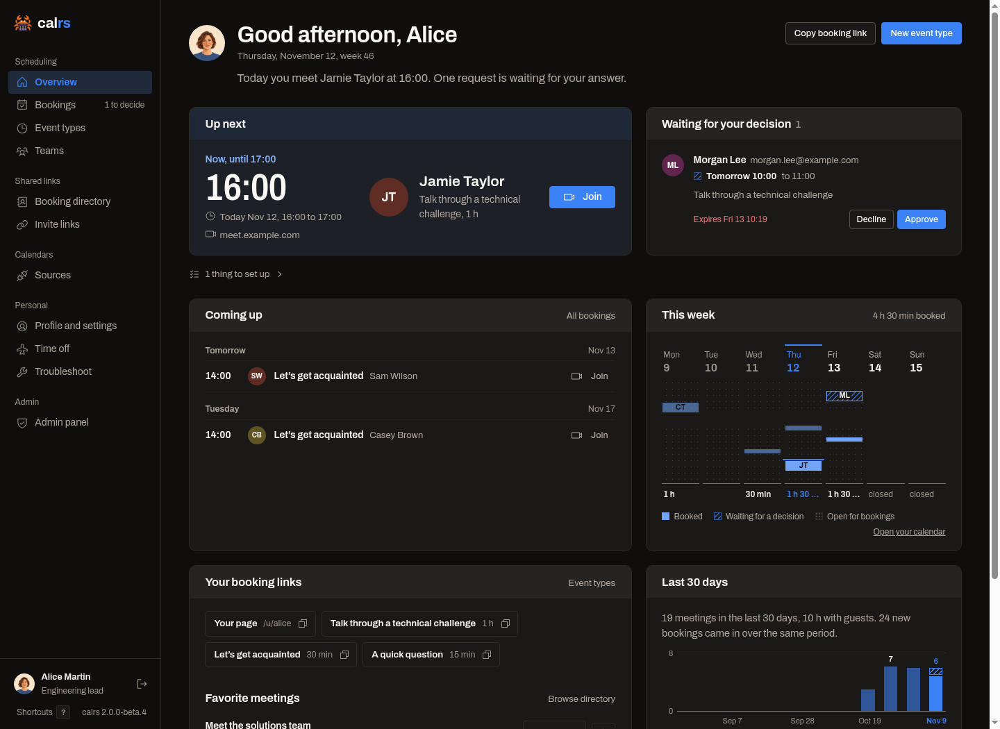
Built for individuals and teams
Personal meetings, round-robin teams, collective meetings and ad-hoc groups use the same booking flow. Public, internal and private visibility control how meetings are found and shared. Shared resources can reserve a room or lab alongside the people attending.
The interface and notifications support English, French, Spanish, Polish, German, Italian, Estonian, Brazilian Portuguese and Dutch, with a formal German option. Hosts set their own language and timezone; guests can view times in theirs.
Integrations include outgoing booking webhooks, a scoped REST API with an interactive OpenAPI reference, and an OAuth-protected MCP endpoint. See Features in v2 for the scope of each integration.
Features in v2
This is the feature map for v2, including capabilities carried forward from v1. It describes implemented behavior in the v2 source, not proposed features. For changes between individual builds, see the changelog.
Calendars
| Capability | What you can do |
|---|---|
| CalDAV | Connect Nextcloud, BlueMind, Fastmail, iCloud, SOGo, Zimbra, Radicale, Baikal and other CalDAV servers; discover calendars, sync changes and write bookings back. CalDAV |
| Google Calendar | Connect with OAuth2, block out-of-office events, write bookings and create host-owned Google Meet links. Google Calendar |
| Microsoft 365 / Outlook.com | Connect with delegated OAuth2 through Microsoft Graph; select calendars and a writable destination. Microsoft Calendar |
| On-premises Exchange | Connect individual mailboxes through EWS, or provision managed calendars with a service account and trusted mailbox addresses. Exchange, EWS impersonation |
| Calendar selection | Choose which calendars a source syncs, which synced calendars block each event type, and which calendar receives each host’s confirmed bookings. Selection and write-back |
| Sync and recovery | Refresh on demand and in the background, force a full resync, inspect sync errors and write-back retries, and receive persistent-failure alerts. Sync failures, background sync |
| Recurring events | Account for recurrence rules, added/removed dates and moved instances; conservatively block unsupported rules. Recurring events |
Availability and booking rules
| Capability | What you can do |
|---|---|
| Working hours | Set default personal hours and multiple windows per day, then give each event type its own schedule and timezone. Availability |
| Time off and exceptions | Take time off across all meetings you host, or override one event type’s hours on a date. Time off, date overrides |
| Timing controls | Set duration, slot interval, before/after buffers, minimum booking notice and guest cancel/reschedule notice. Event types, notice policy |
| Booking windows | Set a rolling horizon or an inclusive fixed date range; expired event types leave public listings. Booking horizon, date range |
| Frequency limits | Cap bookings per day, week, month or year, optionally per round-robin member; show only the earliest remaining slot per day. Booking limits |
| Approvals | Require confirmation, hold pending slots, expire unanswered requests and remind the host to answer. Confirmation mode |
| Conflict checks | Re-check availability when booking and approving; account for busy calendars, bookings, time off, member hours and required resources. Conflict detection |
| Troubleshooting | See why a time is unavailable, including conservative blocking of unsupported recurrence rules. Dashboard |
Meetings and sharing
| Capability | What you can do |
|---|---|
| Personal and team meetings | Book one host, assign an available team member by priority and workload, or require all eligible members. Teams |
| Dynamic groups | Combine usernames in a link such as /u/alice+bob/intro for an ad-hoc collective meeting. Dynamic group links |
| Watchers | Notify a support team and let the first person claim a booking; the confirmed claim blocks their time. Booking watchers |
| Visibility and invitations | Publish meetings, let colleagues distribute internal meetings, or send private invitations; use expiry, usage limits and bulk invitations. Event types |
| Directory and favorites | Search meetings you can share, copy public links, generate internal invites and keep favorites on your overview. Booking directory |
| Public pages | Add profile facts, Markdown descriptions, meeting sections and ordering; show meeting duration, location and confirmation requirements. Sections and order |
| Embeds | Add an inline picker, floating booking button or click-triggered modal; set layout, theme, branding, timezone and clock format. Embedding |
| Shared resources | Reserve rooms, demo labs or other resources from ICS availability feeds, with optional CalDAV write-back and team allowlists. Resources |
Guest experience and notifications
| Capability | What you can do |
|---|---|
| Slot picker | Offer month, week and column views, a timezone picker, 12/24-hour clocks and a configurable first weekday. Calendar views |
| Booking questions | Ask short/long text, single/multiple choice and checkbox questions; record consent and retain the question as answered. Booking questions |
| Attendees and notes | Allow additional guests, choose whether guest notes are optional/required/hidden, and keep separate host-only notes. Booking flow, host notes |
| Changes after booking | Approve, decline, cancel, reschedule or ask a guest to choose a new time; keep calendar copies and attendees updated. Booking flow |
| Send translated HTML/plain-text messages, reminders and calendar invitations; use the host’s display name and Reply-To, plus an optional guest footer. Email notifications, SMTP | |
| SMS | Send guest confirmations, cancellations, reschedules and reminders through Twilio, GatewayAPI, seven.io or a webhook gateway, with a daily segment limit. SMS |
| Meeting locations | Use static video links, phone, in-person or custom locations, generated Jitsi rooms, Google Meet or a meeting-provider webhook. Locations |
| Localization and appearance | Use nine languages plus formal German, light/dark modes, preset/custom themes, company logos for each mode and a favicon. Profile settings, branding |
Administration and integrations
| Capability | What you can do |
|---|---|
| Identity | Use local accounts with optional/required TOTP and recovery codes, or OIDC SSO with group sync. Authentication, Authentik |
| Administration | Manage users, groups and instance policies, impersonate users for troubleshooting, inspect booking and calendar health. Admin dashboard |
| Webhooks | Deliver signed booking lifecycle events with retries and stable delivery IDs. Webhooks |
| REST API and OpenAPI | Use scoped OAuth or personal access tokens for event types, slots and booking operations, including optional question answers; use /api/docs for the interactive reference. REST API |
| MCP | Authorize an OAuth-capable Streamable HTTP client to list event types, create invites and read cached busy intervals. MCP |
| Operator CLI | Manage sources, sync, event types, bookings, users, time off and configuration; import calendar OAuth credentials and export non-secret configuration. CLI reference |
| Self-hosting | Run a container or systemd service, keep SQLite and credential-key backups, configure trusted proxies and private calendar hosts. Deployment, security |
These integrations have different scopes. MCP does not create bookings; use the REST API for supported booking operations. Calendar OAuth connects calendars; OIDC configures sign-in. A meeting-provider webhook returns a video URL; an outgoing booking webhook reports a lifecycle event.
Getting Started
Install and start
See Deployment for containers, systemd and source builds. To try the v2 prerelease channel with an isolated data volume:
docker run -d --name calrs-v2 \
-p 127.0.0.1:3000:3000 \
-v calrs-v2-data:/var/lib/calrs \
-e CALRS_BASE_URL=http://localhost:3000 \
ghcr.io/olivierlambert/calrs:next
next follows prereleases; latest follows stable releases. Pin an exact available version for a repeatable installation. Use HTTPS and the real public base URL when deploying for guests or configuring calendar OAuth and SSO. See Upgrading to v2 before reusing an existing data volume.
For a local source checkout:
cargo build --release --locked
./target/release/calrs serve --port 3000
Run from the checkout root so calrs finds templates/.
Set up in the dashboard
- Open
http://localhost:3000and register. The first registered user becomes admin. - In Profile & Settings, check your username, timezone, language and default working hours.
- In Calendar sources, connect your provider. Use CalDAV, Google Calendar, Microsoft 365 / Outlook, or Exchange EWS. Google and Microsoft require an administrator to configure an OAuth application first. Your administrator may instead provision a managed Exchange source.
- Sync the source and check the result. Choose which calendars to sync and a writable calendar for confirmed bookings. These are separate choices: a calendar can receive bookings without being read for availability.
- Create an Event type. Set its title, slug, duration, timezone, weekly hours and location. Decide whether requests need approval, how far ahead guests can book, and whether to ask booking questions.
- Configure and test SMTP if you want emails. Without SMTP, bookings still work and confirmed bookings have an
.icsdownload. - Open your booking link in another browser or a private window. Make a test booking, check the dashboard and calendar, then cancel it to verify cleanup.
Your profile is at /u/yourname, and an event type with slug intro is at /u/yourname/intro. Only public, enabled and still-bookable event types appear for anonymous visitors. Internal and private event types use invite links.
CLI setup for a single-user instance
The web dashboard is the recommended setup path on multi-user instances. Several scheduling CLI commands select the first account rather than a signed-in user; they are operator tools with direct database access.
# Create the first user; the password is prompted
calrs user create --email alice@example.com --name Alice --admin
calrs source add --url https://nextcloud.example.com/remote.php/dav \
--username alice --name 'My Calendar'
calrs sync
calrs event-type create --title '30-minute intro call' --slug intro --duration 30
calrs event-type slots intro
calrs serve --port 3000
Use the same --data-dir or CALRS_DATA_DIR for CLI commands and the server. There is no calrs init command in v2. See CLI Reference for password input in scripts, source selection and configuration commands.
Data directory
calrs stores its database and credential key in the data directory. Defaults follow platform conventions:
- Linux:
~/.local/share/calrs/ - macOS:
~/Library/Application Support/calrs/ - Project container and systemd service:
/var/lib/calrs
Override with CALRS_DATA_DIR or --data-dir. Back up the database, secret.key and uploaded files together; see Backup.
Dashboard and Profile
Sign in and open /dashboard to manage your schedule. The sidebar links to event types, bookings, calendar sources, shared links, teams and settings. On a phone, open the sidebar from the menu button.
Overview
The v2 overview brings together requests waiting for your decision, coming meetings and your week. The week view includes your calrs bookings and anonymous busy periods from connected calendars. Calendar event details remain in the availability troubleshooter. A dashed busy band means calrs could not expand a recurrence rule precisely; its tooltip links to the explanation.
Your booking links and favorite meetings sit beside recent activity and your event types. A new account sees setup guidance for connecting a calendar and creating a meeting.
Bookings
Open Bookings for these sections:
- Waiting for your decision: pending requests to confirm or decline.
- Available to claim: bookings offered to teams you watch with.
- Upcoming: your coming meetings, including confirmed bookings you claimed.
- Last 30 days: recent past bookings.
- Cancelled and declined: bookings from 30 days ago onwards, including future cancellations.
Each section has its own pagination. Searching and pressing Enter searches across pages; typing also narrows the rows currently shown. A day selected in the overview’s week opens the corresponding page of upcoming bookings.
Open a booking’s title to read its details, question answers and host-only notes. Actions offered depend on its status and your role. A not in your calendar badge means the booking exists but a calendar write failed; see write-back recovery.
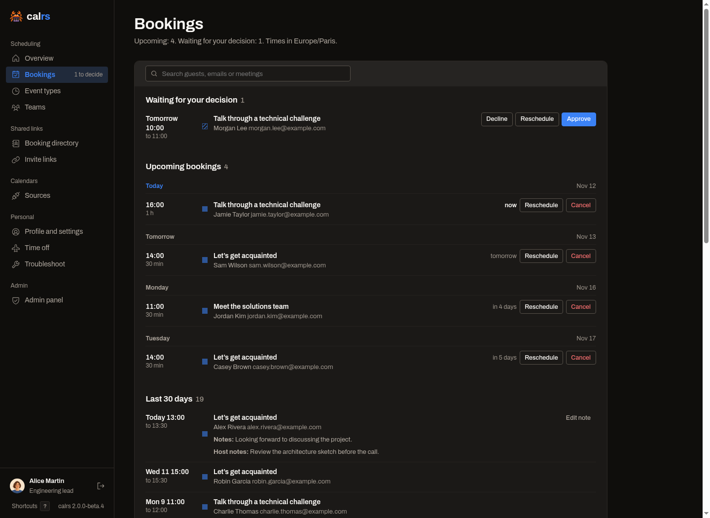
Booking directory and favorites
The Booking directory helps colleagues find public and internal meetings they can share. Search by person, team or meeting title, and filter the list. Copy a public meeting’s URL or generate a fresh, single-use invitation for an internal meeting.
Star meetings you use often to put them on your overview. Favorites do not grant permission: a meeting that becomes inaccessible disappears from your usable favorites. Private event types remain subject to their own invitation permissions.
Use Invite Links for internal meeting invitations and an event type’s invite management page for guest-specific or bulk invitations. See Event types.
Profile and settings
Use Profile & Settings to configure:
- Your name, username, avatar, title and Markdown bio.
- Where you are based and the languages you speak, shown on your public profile when set.
- Your timezone, language, public-page language policy and theme mode.
- Your booking email, used for booking communications when it differs from your account email.
- Default working hours and the first day of the week.
- Whether colleagues may include you in dynamic group links.
- Two-factor authentication, API tokens and connected apps.
Public pages normally follow the visitor’s browser language, even if the visitor is signed in. Always my language makes your own booking pages use your saved language instead. Host emails follow each host’s saved language; guest emails retain the language used to book. The nine languages are English, French, Spanish, Polish, German, Italian, Estonian, Brazilian Portuguese and Dutch. Deutsch (Sie) is also available for formal German.
Default availability supplies the initial schedule for a new event type and constrains your participation in team and dynamic-group scheduling. Changing it does not rewrite the weekly rules of existing event types. Use Time off to block an absence across meetings you host.
Organize your public page
In the event type editor, give meetings a Section to group them on your profile. Change the order opens the ordering page. Team admins can arrange their team’s page separately. See Sections and order.
The usual-hours timetable on a public profile summarizes weekly rules; it is not a promise that every time in that span is available. Guests open a meeting to see actual slots after conflicts, exceptions and limits are applied.
Availability troubleshoot
Open an event type’s Troubleshoot action, select the date and inspect the timeline. It explains working hours, calendar conflicts, bookings, time off and other reasons a candidate slot is blocked. Check calendar selections, the event type’s timezone, team members’ hours and source sync errors when the result differs from what you expect.
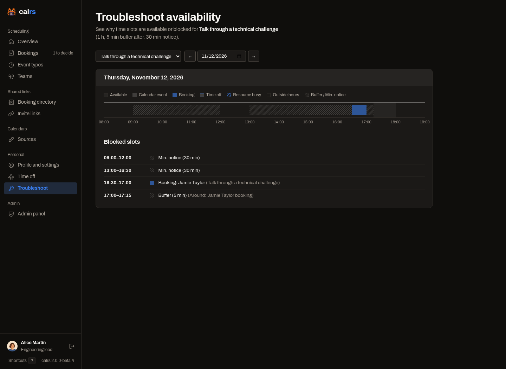
CalDAV Integration
calrs connects to any CalDAV server to read your calendar for free/busy computation and optionally write confirmed bookings back.
Connecting a calendar source
From the web dashboard
- Go to Dashboard > Calendar sources > + Add
- Select your provider (BlueMind, Nextcloud, Fastmail, Baikal, etc.) — the URL is auto-filled
- Enter your username and password
- Click Add source
The connection is tested automatically before saving. Use “Skip connection test” if your server doesn’t respond to OPTIONS requests (e.g., BlueMind).
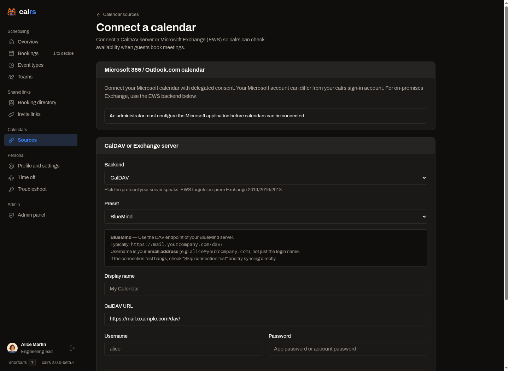
From the CLI
calrs source add --url https://nextcloud.example.com/remote.php/dav \
--username alice --name "Work Calendar"
# Skip connection test if needed
calrs source add --url https://mail.company.com/dav/ \
--username alice --name "BlueMind" --no-test
Provider URLs
| Provider | CalDAV URL |
|---|---|
| BlueMind | https://mail.yourcompany.com/dav/ |
| Nextcloud | https://cloud.example.com/remote.php/dav |
| Fastmail | https://caldav.fastmail.com/dav/calendars/user/you@fastmail.com/ |
| iCloud | https://caldav.icloud.com/ |
| Zimbra | https://mail.example.com/dav/ |
| SOGo | https://mail.example.com/SOGo/dav/ |
| Radicale | https://cal.example.com/ |
| Baikal | https://cal.example.com/dav.php/ |
Tip: Use app-specific passwords for Fastmail and iCloud.
Google Calendar
Google Calendar connects via OAuth2, not a username/password. See Google Calendar for Cloud project setup, scopes, and Google Meet auto-links.
Microsoft calendars
Microsoft 365 / Outlook uses native Microsoft Graph with OAuth2, not CalDAV. It is separate from Microsoft Exchange on-premises (EWS).
Auto-discovery
calrs follows the CalDAV standard (RFC 4791) for discovery:
- PROPFIND on the base URL to find the
current-user-principal - PROPFIND on the principal to find the
calendar-home-set - PROPFIND on the calendar home to list all calendars
- Filters to actual
calendarcollections (skips inbox, outbox, tasks, etc.)
Syncing
# Sync all sources
calrs sync
# Full re-sync (ignore sync tokens)
calrs sync --full
From the dashboard, click Sync on any source to trigger a sync.
Sync pulls all VEVENT data from your calendars and stores it in the local SQLite database. Events are upserted by UID (and RECURRENCE-ID for modified instances), so re-syncing is safe.
Choosing which calendars are synced
Some servers (Kerio Connect, for instance) list every calendar the account subscribed to, colleagues’ calendars included. Click Calendars on a source to pick the ones calrs syncs. An unchecked calendar is still listed, but its events are never fetched, its cached events are dropped at once, and it never blocks availability. Newly discovered calendars are synced until you uncheck them. A calendar does not need to be synced to receive bookings through write-back.
# List a source's calendars
calrs source calendars <id-prefix>
# Stop syncing one, sync another (calendar ID prefix, href or display name)
calrs source calendars <id-prefix> --disable "Colleague" --enable "Personal"
The Conflict calendars section of an event type then picks, among the synced calendars, the ones that count for that event type. If none of the calendars it picked is synced any more, it falls back to every synced busy calendar, as when it picks none, so turning calendars off never leaves an event type with no conflicts at all.
Multi-VEVENT resources
Some CalDAV servers (notably BlueMind) bundle recurring events and their modified instances into a single CalDAV resource containing multiple VEVENTs. calrs splits these and stores each VEVENT as a separate row:
- The parent event has the RRULE and is stored with its UID
- Modified instances have a RECURRENCE-ID and are stored alongside the parent with a composite unique key scoped to the calendar:
(uid, calendar_id, recurrence_id) - This ensures modified occurrences correctly block (or free) availability
Recurring events are expanded over the window asked for, however long ago the series started: a daily stand-up created years ago still blocks today. Supported rules are DAILY, WEEKLY, MONTHLY and YEARLY, with INTERVAL, UNTIL, COUNT, BYDAY, BYMONTH, BYMONTHDAY, BYSETPOS, WKST, RDATE (extra dates, with or without a rule) and EXDATE; cancelled occurrences count toward COUNT, as RFC 5545 says. A rule calrs cannot expand is never read as free: an hourly one or one with BYHOUR blocks every slot from its start, any other (BYYEARDAY, BYWEEKNO, RSCALE) the event’s own time every day from its start, up to its UNTIL; the troubleshoot view shows it as a repeat rule calrs cannot read, and each sync logs a warning.
CalDAV write-back
When a booking is confirmed, calrs can automatically push it to your CalDAV calendar as a VEVENT. When a booking is cancelled, the event is deleted.
Setup
- Sync your calendar source at least once (so calrs knows which calendars exist)
- On the dashboard, find your source under “Calendar sources”
- Use the “Write bookings to” dropdown to select which calendar should receive bookings
- Select “None” to disable write-back
How it works
- On confirmation: calrs generates an ICS event and PUTs it to
{calendar-href}/{booking-uid}.ics - On cancellation: calrs DELETEs the event from the same path
- The booking tracks which calendar it was pushed to, so cancellation always targets the right calendar
- Each event type can send its bookings to a calendar of its own (see below)
- If no write calendar is configured, write-back is skipped and a warning is logged (emails still work)
- Write-back works for individual bookings, team bookings (the assigned member’s calendar for round-robin, every eligible member’s for collective), and pending-then-confirmed bookings
Per event type: “Write confirmed bookings to”
The source setting above applies to every booking. To send one event type’s bookings somewhere else (coaching into a personal calendar, team calls into a shared work calendar), choose a calendar for it:
- Personal event types: in the event type form, under Booking options, pick a calendar in “Write confirmed bookings to”.
- Any event type you host, team ones included: on the Calendar sources page, the “Bookings by event type” section lists your event types with one dropdown each. On a team event type each member chooses their own calendar, since it is the assigned member’s (or, for collective, each member’s) own calendar that receives the booking. The team event type form points there.
The list offers every calendar of your own enabled sources, synced or not, like the source setting. “Default (source setting)” keeps the behaviour above. A chosen calendar receives that event type’s bookings instead of the write calendar of each source, not in addition to it.
What happens when things change:
- The choice changes while a booking is upcoming: the booking moves at its next write (a reschedule, an approval, a retry, a claim). The new copy is written first; the copy left in the earlier calendar is deleted only once that write has landed, so a failed write never leaves the booking without a calendar. Cancelling a booking deletes it from the calendar it was actually written to, and a delete that fails is tried again in the background.
- The calendar refuses the booking for good (deleted on the server, or read-only: HTTP 403, 404 or 405): the booking is written to the source setting instead, without a failure or retries, and the Calendar sources page shows the refusal next to the event type. The next booking tries the chosen calendar again.
- The calendar’s source is disabled: bookings go back to the source setting until it is enabled again. The choice stays, shown as “(unavailable)”, and saving the form unchanged keeps it. The source is removed: the choice is removed with it.
- Google Meet: the Meet event is created on the chosen calendar when it is a calendar of your Google account, otherwise on your Google source’s write calendar, as before. Once created it never moves, since that event holds the meeting.
- The orphan check (a booking cancelled because its event was deleted from your calendar) also covers a chosen calendar, when it is synced.
When a write-back fails
After each PUT, calrs reads the event back by UID (HEAD, or PROPFIND on servers that refuse HEAD; FindItem on EWS). A write the server refused, or accepted without the event becoming readable, counts as failed.
The booking stays confirmed: the slot is already blocked by calrs’s own bookings table and the guest already has the invitation, so refusing the booking after the fact would only leave the guest with an invite to a meeting that no longer exists. Instead:
- the failure is recorded on the booking, and the bookings dashboard shows a “not in your calendar” badge with the error
- the background task of
calrs serveretries it, for confirmed bookings that have not started yet: 5 min, 15 min, 30 min, 1 h, 2 h, 4 h and 8 h after the previous attempt, then it stops. A retry replaces the same event (the PUT is keyed on the booking UID), so retrying never duplicates it, and a cancelled booking is never retried - after three failed attempts (about 20 minutes) the host is emailed once, in their language, so they can add the event by hand. Retries carry on afterwards; a successful write clears the badge
When a sync fails
If a source cannot be synced (server down, password changed, OAuth access revoked), calrs keeps offering slots from the last successful sync rather than refusing every booking. The failure is not silent:
- the calendar sources page shows the error and since when the source has been failing
- once a source has failed at least 3 times in a row over more than an hour, its owner is emailed once, in their language. They hear about it again only if it recovers and later fails again
- a calendar that fails to fetch fails the sync of its source, so “Sync complete.” means every calendar synced
- an answer calrs cannot read counts as a failure too: an error status (a 500 or 503, even with an empty body), malformed XML, or a page that is not a WebDAV answer at all (a proxy’s HTML error page). The error says which (“returned 503”, “malformed XML at byte …”, “expected a WebDAV multistatus”). The calendar keeps its cached events and is fetched again on the next sync, instead of being read as an empty calendar that has not changed
- a single answer from the server is read up to 64 MB, which covers calendars with tens of thousands of events; a bigger one, or one with more than a million XML elements, fails the sync of that calendar, to keep memory use bounded on small servers (at the limits, reading an answer takes a few hundred MB at most)
- error messages name the HTTP status only, never the text of the server’s answer, since on a shared calendar it can quote other people’s events
- slot pages retry a failing source at most every five minutes, so a dead server does not slow down every page load
calrs synclists the sources that failed and exits with status 1
Recurring events
calrs expands daily, weekly, monthly and yearly recurrence rules within the requested window, including intervals, counts, end dates, weekday/month-day selections and positional rules. RDATE adds occurrences, EXDATE removes them, and RECURRENCE-ID replaces moved or cancelled instances. Long-running series are expanded near the requested dates rather than stopping after a fixed number of occurrences from their original start.
An unsupported rule does not make a calendar look free. calrs blocks conservatively within the rule’s known bounds: usually the event’s time each day, or all time for sub-daily rules and unsupported time selectors. Troubleshoot explains the fallback, and the dashboard week marks it with a dashed busy band. Inspect these entries if fewer slots appear after upgrading.
Managing sources
# List all sources
calrs source list
# Test a connection
calrs source test <id-prefix>
# Remove a source (cascade-deletes calendars and events)
calrs source remove <id-prefix>
From the dashboard, use Edit to update connection details, Calendars to select synced calendars, and the sync, connection-test and remove actions. An empty password on edit preserves the existing password. OAuth and centrally managed Exchange sources have their own connection controls; see the corresponding provider guide.
Credentials
Passwords and OAuth tokens are encrypted at rest with AES-256-GCM. The key is stored in secret.key in the data directory, unless supplied through CALRS_SECRET_KEY. Back up the key with the database; a database backup alone cannot restore the encrypted credentials. Legacy hex-encoded passwords are migrated on startup. See Security.
Google Calendar
calrs can connect to Google Calendar as a CalDAV source using Google’s OAuth2 flow. Unlike a username/password source, Google requires you (the calrs operator) to register an OAuth2 application in Google Cloud and configure its client ID and secret in calrs once. After that, individual users connect their own Google accounts through the dashboard.
This page walks through the Google Cloud setup. The values you collect at the end go into Admin → Sign-in and security → Google OAuth2 in the calrs dashboard.
1. Pick (or create) a Google Cloud project
Go to the Google Cloud Console and either select an existing project or create a new one (e.g. calrs-prod). Everything below is scoped to this project.
The project is just a container for the OAuth2 client and the enabled APIs. You can use the same project for staging and production, or split them. It makes no functional difference to calrs.
2. Enable the required APIs
In APIs & Services → Library, enable:
- CalDAV API: used for CalDAV access to the user’s calendars (reading busy times and writing bookings back). It is a separate entry in the Library from the Calendar API; search for “CalDAV API”.
- Google Calendar API: used to add the guests to written events without Google mailing them (see Invitations), to read out-of-office events, and to attach Google Meet links to bookings (see Google Meet auto-links).
- OIDC userinfo: Google exposes this automatically when you request the
openid emailscopes; there is no separate “API” to toggle, but the OAuth consent screen must allow those scopes (see step 5).
Without the CalDAV API enabled, every CalDAV request will fail with a 403 even though the OAuth2 handshake itself succeeds; enabling only the Google Calendar API is not enough. Without the Google Calendar API, bookings still sync and write back, but without the guests as attendees, out-of-office events do not block, and Google Meet links cannot be generated.
3. Create the OAuth2 client
In APIs & Services → Credentials, click Create credentials → OAuth client ID.
- Application type: Web application
- Name: anything (e.g.
calrs)
You will get a client ID and client secret. calrs stores the client ID and encrypts the client secret at rest once you save them in the admin panel.
4. Authorized redirect URI
Under Authorized redirect URIs, add exactly one entry:
{CALRS_BASE_URL}/dashboard/sources/google/callback
Replace {CALRS_BASE_URL} with the public URL of your calrs instance, e.g.:
https://cal.example.com/dashboard/sources/google/callback
Notes:
- The URI must match byte-for-byte. No trailing slash, correct scheme (
https://in production), correct host. Google rejects the callback otherwise. CALRS_BASE_URLis the same env var calrs uses for OIDC redirects and email links. Keep them consistent.- If you run multiple environments (staging + prod), either register the same client with multiple redirect URIs or create one OAuth2 client per environment.
You do not need to set “Authorized JavaScript origins”; calrs performs the redirect server-side.
5. Scopes calrs requests
When a user connects their Google account, calrs requests these scopes:
| Scope | Why |
|---|---|
https://www.googleapis.com/auth/calendar | Full read/write access to the user’s calendars via Google’s CalDAV endpoint. Needed both to read busy times and to push confirmed bookings back to the calendar. |
openid email | OpenID Connect userinfo, used once at connect time to discover the account’s email address. Google’s CalDAV principal URL is /caldav/v2/{userEmail}/user, so calrs needs to know which email to scope the source to. |
calrs also passes access_type=offline and prompt=consent so that Google issues a long-lived refresh token. The refresh token is stored encrypted and used to mint new access tokens as needed (existing tokens are rotated automatically).
On the OAuth consent screen configuration (APIs & Services → OAuth consent screen), add the Calendar scope explicitly. The openid and email scopes are listed under the “non-sensitive” defaults and don’t need additional review.
The same Calendar scope is enough to attach a Google Meet conference to a write-back event. No extra Meet scope, and users who already connected Google Calendar do not need to reconnect.
6. Test users vs. publishing the consent screen
For an External application in Testing, add the intended accounts as test users. Because calrs requests Calendar access, refresh tokens issued in that mode expire after seven days; users then need to reconnect. See Google’s refresh-token expiration rules.
For ongoing use, configure the application’s production audience and review Google’s verification requirements. Publishing and verification are separate steps: eligible personal-use and organization-internal apps can qualify for exceptions. An unverified external app can still show a warning and have a user cap; a Workspace administrator can also restrict consent. See Google’s verification exceptions and sensitive-scope verification.
After moving out of Testing, reconnect affected sources to obtain fresh authorization. Production tokens can still be revoked or expire for other reasons; check source errors rather than assuming a token lasts forever.
Out-of-office blocking
calrs also reads Google Calendar’s Out of office events through the Calendar API using the existing OAuth connection. No additional scope or reconnect is required. These events block availability on their connected calendar, respecting the calendar’s busy toggle and per-event-type calendar selection.
Google represents these as timed, busy intervals, including absences that cover
whole days. Recurring absences are expanded by Google, including moved occurrences
and daylight-saving changes. Cancelled occurrences are omitted from the returned
snapshot and stop blocking after the next successful sync. Each sync refreshes a window
from 90 days ago to 366 days ahead, covering the web booking flow’s 365-day limit.
Deleted absences are removed on the next successful sync. If the API request
fails, previously cached absences keep blocking, and the source’s sync is
reported as failing on the Sources page (with the usual email to its owner
when it keeps failing). After 7 days without a successful refresh the cached
absences are dropped, so an absence deleted meanwhile does not block forever.
A Calendar API that is not enabled at all is not reported, as long as nothing
was cached from it. The absences are fetched at most every 5 minutes per
calendar, and a fetch that takes over 10 seconds counts as a failure rather
than holding up a booking page. An absence Google marks as a whole day (a date rather
than a time) blocks those days in the calendar’s own timezone. Working-location
events are not treated as absences.
Invitations and booking email aliases
calrs sends the guest and any additional attendees its own confirmation email with an ICS invitation. Google Calendar must not send a second one, yet the guests belong on the event: Google Meet admits listed attendees directly instead of putting them in the “ask to join” lobby.
Google’s CalDAV endpoint ignores SCHEDULE-AGENT=CLIENT (RFC 6638), the parameter other servers honour to leave invitations to the client, and mails attendees itself. So on a Google calendar calrs writes in two steps:
- The event goes over CalDAV without ATTENDEE or ORGANIZER lines, so there is nobody for Google to invite. Google makes the calendar’s own account the organizer, which is also what lets that account create the Meet.
- The guest and additional attendees are then added through the Google Calendar API with
sendUpdates=none, which Google documents as “No notifications are sent.”
Rewriting an existing event (a reschedule, a retry) first clears its attendees the same silent way, so the CalDAV write never reads as removing them, then adds them back; their RSVP on the Google event is reset in the process, without any notice. If adding them back fails, the event stays on the calendar and the write-back retries until they are there. Google Meet time changes and the conference itself are patched with sendUpdates=none too, and a cancelled booking whose Google event has attendees is deleted through the Calendar API with sendUpdates=none. If that call fails, calrs deletes the event over CalDAV instead, so the cancelled meeting never stays on the calendar; Google may then mail the attendees its own cancellation. A copy left behind when a booking moves to another calendar (a write calendar chosen per event type) is only ever deleted that quiet way: if the Calendar API cannot delete it, it stays, still listing the guests beside the new copy, and calrs tries again on the write-back schedule. A calendar several hosts write to (a shared team calendar) gets one copy of the booking, the one with the guests. A chosen Google calendar that was deleted counts as refusing the booking, so it goes to the source’s write calendar instead. Guests with a Google account may still see the event appear in their Google Calendar, which is how Google handles any event they are an attendee of; they get no email from Google.
Only one Google copy of a booking carries the attendees. Google adds an event to the Google Calendar of each of its attendees, so a booking written to several Google calendars (every member of a collective event type, a second Google calendar of the host, the calendar of a watcher who claimed the booking) would otherwise show there once per copy. The copy with the attendees is the one holding the Google Meet when the booking has one, otherwise the host’s: the assigned member for round-robin, the organizer for collective (the member the invitation names as organizer), the owner for a personal event type, on the Google calendar a Meet would be created on. That copy leaves out the guest’s phone number, since Google shows the event’s description to everyone on it; the other copies keep it for their host. Every other Google copy is written without attendees, and one that has some from an earlier write loses them, silently, the next time it is written. When that host does not write to a Google calendar, no Google copy carries attendees. For a collective booking the organizer is fixed when it is booked: an organizer who later leaves the team keeps the copy with the attendees until the booking is over. A watcher who claimed the booking is left off that list when calrs writes a copy to their own calendar, so they do not see the meeting twice; without such a copy they stay on it and get the meeting through the invitation.
This needs the Google Calendar API enabled (step 2 of the setup). Without it, calrs still writes a new event, without attendees, and the guests rely on calrs’s own invitation; cancellations then go over CalDAV. An event that already has attendees (the API was turned off after it was written) is left as it is rather than rewritten without them, which Google would announce. When the Calendar API is enabled but fails for a moment (a rate limit, a server error, no answer within 30 seconds), calrs writes nothing and the write-back retries pick the booking up again a few minutes later. Other CalDAV servers are unaffected: they keep receiving the attendees in the ICS with SCHEDULE-AGENT=CLIENT.
The guest-facing ICS uses your Booking email (or account email if unset) as the organizer, which can differ from your connected Google address. The email’s From address is controlled separately by your SMTP configuration.
Google Meet auto-links
When an event type’s location is Google Meet (auto-generated link), confirmed bookings attempt to attach a unique Meet conference owned by the host, as long as that host still has Google Calendar connected with write-back:
- calrs writes the booking to the host’s Google write-back calendar (same CalDAV PUT as any other booking).
- It then calls Google Calendar API
events.patchwithconferenceData.createRequest(hangoutsMeet) using the host’s existing OAuth token. - The Meet URL is stored on
bookings.meeting_urland included in confirmation emails, the guest ICS, and CalDAV copies on any other calendars.
No extra OAuth scope or admin field is required beyond the setup above, as long as the Google Calendar API was enabled in step 2. Users who already connected Google Calendar do not reconnect.
Who owns the Meet
| Booking | Meet owner |
|---|---|
| Personal event type | The event type owner |
| Team round-robin | The assigned member |
| Team collective | The first eligible member by name when the booking was made (same person as the calendar ORGANIZER, kept even if the team changes later) |
Dynamic group (/u/alice+bob/...) | The event type owner (first username). Checked on the slots page so the guest is not asked to fill the form first. Other participants do not need Google connected. |
The conference is created with that person’s token on their write-back calendar, so they see the native “Join with Google Meet” button in Google Calendar.
Save-time gate
You cannot save an event type as Google Meet unless every scheduling-relevant host already has Google Calendar connected and has picked a write-back calendar:
- Personal: you
- Team: every eligible member (enabled, non-zero weight)
The form lists anyone still missing. If someone later disconnects Google, the booking still confirms; confirmation and email show a “Google Meet” label if minting failed (the Meet URL is omitted and a warning is logged, same as a failed meeting webhook).
Reschedule and cancel
Reschedule keeps the same Meet URL and patches only the event times via Calendar API (a second CalDAV PUT would strip the conference). Cancel deletes the Google event and its Meet, through the Calendar API with sendUpdates=none since the event lists the guests.
That time patch is the host’s only copy of the booking, so it is retried three times a second apart. If it still fails, the host is emailed: the booking, the guest’s invite and the reminders hold the new time while their Google Calendar holds the old one, and they need to move the event by hand. Move it rather than recreating it, or the Meet link the guest already has stops admitting anyone.
Microsoft Calendar
calrs connects to Microsoft 365 (Exchange Online) and Outlook.com calendars through native Microsoft Graph, using delegated OAuth2 consent. The operator registers an application once; each user then connects their own Microsoft account and chooses a calendar for booking write-back.
This is separate from Microsoft Exchange on-premises (EWS), which uses the Exchange source configuration rather than Graph. It is also separate from logging into calrs: connecting a calendar neither enables Microsoft SSO nor changes your calrs login identity. Your Microsoft mailbox address does not have to match your calrs account email.
1. Register an application in Microsoft Entra
Open the Microsoft Entra admin center, then App registrations → New registration. Give the application a recognizable name, such as calrs.
Choose Supported account types for the users you intend to serve, and use the corresponding tenant value in calrs:
| Intended audience | App registration audience | calrs tenant value |
|---|---|---|
| One organization | Accounts in this organizational directory only | That directory’s tenant UUID or verified domain, such as example.onmicrosoft.com |
| Multiple organizations | Accounts in any organizational directory | organizations |
| Organizations and personal Outlook.com accounts | Accounts in any organizational directory and personal Microsoft accounts | common |
| Personal Microsoft accounts only | Personal Microsoft accounts only | consumers |
The tenant value and app audience must agree. common does not make a single-tenant application multi-tenant. calrs accepts common, organizations, consumers, a tenant UUID, or a domain-shaped tenant value; use a domain verified for your intended tenant, not an arbitrary host or a login URL. The account must also have a calendar mailbox accessible through Graph; having an Entra identity alone is not sufficient.
The integration uses the global-cloud endpoints login.microsoftonline.com and graph.microsoft.com. Sovereign/national clouds and custom Graph endpoints are not supported.
2. Register the exact Web callback
Add a Web platform redirect URI (not a single-page application or mobile/desktop redirect):
https://cal.example.com/dashboard/sources/microsoft/callback
Replace https://cal.example.com with your instance’s public base URL. The callback path is exactly /dashboard/sources/microsoft/callback, with no trailing slash.
The public base URL configured for calrs must be an HTTPS origin: scheme and host, with an optional port, but no subpath, credentials, query, or fragment. HTTP is rejected by this integration, including for local development. If TLS terminates at a reverse proxy, configure calrs with the external HTTPS origin, not its internal HTTP listener address.
Because the callback must be HTTPS, a local instance at http://localhost:3000 cannot be connected. To test locally, put an HTTPS tunnel in front of it (for example cloudflared tunnel --url http://localhost:3000 or ngrok http 3000), set CALRS_BASE_URL to the tunnel’s https:// origin, and register that origin’s callback in Entra.
The Entra redirect URI must match the callback generated from that origin. Register separate redirect URIs or applications for separate environments. No implicit-grant setting is needed: calrs uses the authorization-code flow with PKCE and a client secret.
3. Configure delegated permissions
Under API permissions, add these Microsoft Graph delegated permissions:
| Permission | Purpose |
|---|---|
Calendars.ReadWrite | Discover/read calendars and create, update, and delete booking appointments on the user’s behalf. |
User.Read | Read /me to identify the connected Microsoft account. |
offline_access | Obtain a refresh token so synchronization can continue when the user is not actively connecting. |
calrs requests https://graph.microsoft.com/Calendars.ReadWrite, https://graph.microsoft.com/User.Read, and offline_access. It requires both calendar and profile consent and an initial refresh token. Do not substitute application permissions: this is not app-only mailbox access or a client-credentials integration.
Users consent when they connect. An organization’s consent policy may require an administrator to approve the application even though the flow uses delegated permissions. Arrange that approval with the tenant administrator; logging into calrs, including through an OIDC provider, does not grant Microsoft calendar permissions.
4. Create a secret and configure calrs
In Entra, open Certificates & secrets → Client secrets → New client secret. Choose an expiry suitable for your rotation policy and copy the secret Value immediately. The Secret ID is not a credential and will not work.
In the calrs Admin dashboard (/dashboard/admin), open the Sign-in and security tab, find the Microsoft 365 / Outlook.com calendar section and save:
- Client ID: the app registration’s Application (client) ID, not its object ID.
- Client secret: the secret Value.
- Tenant: the value selected in step 1.
The section displays the callback URL to register, or, while the public base URL is not an HTTPS origin, what to change first. The secret is stored encrypted and is not displayed again; leaving its input blank preserves the current secret.
Track the secret’s expiry outside calrs. Before it expires, create a replacement secret for the same application, save its value in calrs, and verify calendar access and token refresh before retiring the old secret. An expired or revoked secret prevents new authorizations and token refreshes; an already-issued access token can temporarily conceal the problem. If authorization has been revoked or refreshing still fails after correcting the credentials, reconnect the affected source. Restart any in-progress connection after changing the client ID or tenant.
5. Connect a user’s calendar
- Log into calrs as yourself. Microsoft connection and reconnection are not available while an administrator is impersonating a user.
- Open Sources, choose Add source, and use Connect a Microsoft calendar at the top of the page.
- Select the intended Microsoft account and grant the requested permissions. Keep the same calrs login session throughout the flow.
- calrs discovers the calendars and starts the initial sync in the background, so a large mailbox does not hold up the redirect. On a new connection without a selected write-back calendar, it opens the write-back selection page; busy times appear once the sync finishes. Reconnecting a disabled source renews its credentials but leaves it disabled and unsynced.
- Select a calendar you can write to and save. You can skip write-back if you only need busy-time checks, or change the destination later using Write bookings to on the source. Discovery alone does not prove write permission; verify a booking as described below.
- In each event type’s conflict-calendar settings, select the Microsoft calendars that should contribute busy time. This selection is separate from the source’s write-back destination.
- Optionally, use Calendars on the source to stop syncing calendars you never want calrs to read, such as a large shared calendar. A calendar turned off there is never fetched and never blocks, even when an event type selects it, but it can still receive bookings through write-back. It keeps its setting across syncs and reconnects for as long as Microsoft lists it.
Microsoft calendars are discovered through /me/calendars; the integration is not an organization-wide mailbox browser. The write-back destination receives booking appointments, while conflict-calendar selection controls which calendar events affect availability.
Use Reconnect on the existing source if consent or refresh access is lost. Choose the same Microsoft identity that originally connected it: calrs checks the stable Microsoft user ID rather than matching email strings. A successful reconnect updates credentials while preserving the source and its write-back selection. Selecting a different identity is rejected; add a new source to connect a different account instead.
Calendars shared by colleagues
calrs treats a listed calendar whose owner is not the connected account as someone else’s, and a calendar Graph reports as not editable as read-only. Graph reports both for every calendar it lists, whatever kind of share is behind it:
- A calendar owned by someone else does not make the user busy unless an event type selects it in its conflict-calendar settings. An event type with no selection checks only the user’s own calendars, so a colleague’s meetings do not block the user’s booking page by default.
- A read-only calendar is not offered as a write-back destination, since Graph refuses writes to it. This includes the user’s own read-only calendars, such as holidays and birthdays. A calendar already selected for write-back that later becomes read-only stays selected under Write bookings to, but its writes fail; switch the source to a writable calendar.
Which shared calendars Graph lists, and whether it lets calrs read them, is up to Exchange and is not documented by Microsoft. On Exchange Online, in our testing, a colleague’s calendar shared and accepted in Outlook was listed among the user’s own calendars and readable with Calendars.ReadWrite, while one added with free/busy access only was not listed at all. If Graph refuses to read a calendar it lists (403 or 404), that calendar is skipped with a warning in the log and its cached events are kept, while the other calendars keep syncing. The source’s sync is reported as failing when the skipped calendar counts for availability (it is a busy calendar, or an event type selects it), since its new events are missed meanwhile, and when it is the write-back calendar or no calendar of the source can be read.
When a calendar is no longer listed, because it was deleted or its share was removed, the next sync drops it and its events. An event type that had selected only that calendar checks the user’s own busy calendars again. The source’s write-back calendar is never dropped this way: the sync is reported as failing, asking you to choose another one under Write bookings to, and its writes fail until you do. A calendar you turned off under Calendars is still listed by Microsoft, so it is kept, with its setting. A listing with no calendar at all is not trusted: every mailbox has one, so the cached calendars and their events are kept until Microsoft lists calendars again. (Exchange on-premises sources drop a folder only once two syncs in a row no longer list it.)
Synchronization and booking behaviour
- Window: synchronization reads a full snapshot from 90 days before the sync through 730 days after the sync. Events outside that window are not covered, so calrs treats time past 730 days after the last complete sync as busy for a host with a Microsoft calendar: booking pages never reach it (they stop at a year), and
calrs event-type slotsandcalrs booking createleave it out, for every host a team event type needs. - First sync: until a newly connected Microsoft source has completed a sync in which the write-back calendar and every calendar that counts for availability (a busy calendar, or one an event type selects) were read, calrs has not read the host’s Outlook calendar, so the host shows no free time. Events calrs cannot interpret, and calendars that count for nothing, do not hold this back: such an event has no time calrs could block, so holding the source back would block the host for good over one item. The source is reported as failing instead, so the owner hears of it. It takes up to about a minute after connecting (the background sync runs every minute); meanwhile the source on Calendar sources and the Troubleshoot view say so, and approving a request is refused with the same reason. If it lasts, the source’s sync error says why.
- Recurrence: Graph’s
calendarViewexpands recurring events server-side, including exceptions. calrs explicitly requestsoriginalStart, which Graph omits by default, to preserve each instance’s original identity when it moves. Full-snapshot reconciliation removes cached occurrences that Graph no longer returns, including cancelled occurrences. This provider does not use delta cursors. - Timed events: Graph is asked for UTC times, which calrs converts for scheduling in the host’s timezone.
- All-day events: calendar dates are preserved, with an exclusive end date. A busy event starting on March 29 and ending on March 31 blocks March 29 and March 30 as whole host-local days, including across daylight-saving transitions; it is not treated as a fixed 48-hour UTC interval.
- Deleted, or moved, in Outlook: a booking whose appointment disappears from the calendar it was written to is cancelled (and both sides emailed) only once Graph finds it in none of the calendars the account lists, shared ones included: an appointment moved to another of your calendars keeps the booking. An appointment moved out of every calendar the account lists (to a delegate’s mailbox, or a calendar of another Microsoft source of yours) counts as deleted. A calendar that refuses to be read (a free/busy-only share) or is read-only cannot hold the appointment and is not asked. Any other doubt (throttling, a page that fails, a listing that is empty or lacks the booking’s calendar, two copies) leaves the booking as it is until a later sync; if that lasts over a day, the source’s sync is reported as failing. The appointment vanishing from some other calendar changes nothing. A moved appointment calrs still finds is left where it is: cancelling the booking later deletes it only from the calendars calrs wrote it to. A booking whose appointment calrs never saw in a sync is not checked at all, as on CalDAV.
- Cancellation with several write calendars: when a host writes bookings to more than one source (a CalDAV calendar and a Microsoft one, say), cancelling or rescheduling removes the booking from each of them.
- Busy status:
freeandtentativedo not block availability, matching Exchange on-premises (EWS). Busy, out-of-office andworkingElsewhereevents do, and so does an event whose Show as Graph leaves empty; cancelled events do not. A meeting invitation the user has not answered shows as tentative in Outlook, so it does not block either: accept it, or mark it busy, for calrs to keep that time free of bookings. A private event on a colleague’s calendar keeps its time and status, under the subject “Private Appointment”. - Unreadable events: an event calrs cannot interpret is skipped, and the rest of the calendar still syncs. Until a sync reads every event, no cached event is removed from that calendar. The source’s sync is reported as failing meanwhile, naming the calendar, and the owner is alerted as for any other sync failure.
- Suspended users: while an administrator has suspended a user, their Microsoft sources are not synced and their access is not refreshed. Re-enabling the user resumes both, with no reconnect needed unless Microsoft revoked the authorization meanwhile.
- Throttling: a request Graph throttles (429) or cannot serve (503, 504) is tried up to three times in all (two retries), honouring
Retry-Afterup to 30 seconds. A sync that still fails is retried later and keeps the cached busy times meanwhile. - Write-back: confirmed bookings create appointments in the selected calendar. Rescheduling updates the existing Graph item, and cancellation deletes it. calrs tracks its booking identity in a private extended property, separately from Graph’s read-only
iCalUId; event bodies are neither read during sync nor kept in the cache. - Invitations: calrs sends its own booking invitations. Graph write-back does not add attendees or an organizer and does not generate a second set of Outlook meeting invitations. Connecting Graph does not by itself generate a Teams meeting link.
Verify your connection
These are manual checks to perform against your own account. Use a disposable appointment and booking, and avoid notifying unintended guests.
- Discovery: after connecting, confirm that the expected calendar names appear and select a writable destination. Run the source’s sync action and check its last-sync status and any error message.
- Busy blocking: create a short appointment marked Busy in a selected conflict calendar during otherwise available hours within the next week. Sync the source, then open your public booking page and confirm that the overlapping slot is unavailable. The event type’s Troubleshoot view helps distinguish calendar conflicts from buffers or availability rules.
- Recurrence and all-day: optionally repeat with a recurring appointment, move one occurrence, and cancel another. After syncing, check the resulting slots. Test a busy all-day event in your host timezone and confirm that it blocks the intended date, not an adjacent day.
- Create: make a test booking using an address you control. If the event type requires approval, confirm it. Check that exactly one appointment appears in the selected Microsoft write-back calendar with the expected time and details.
- Reschedule: reschedule through calrs and confirm that the same Outlook appointment moves, rather than leaving an old copy or creating a duplicate.
- Cancel: cancel through calrs and confirm that the appointment disappears from Outlook. Remove any manually created test appointments when finished.
A successful Microsoft consent screen or source connection test is not a substitute for these busy-time and write-back checks.
Troubleshooting
| Symptom | What to check |
|---|---|
| Microsoft connect is unavailable or cannot start | Save a client ID and secret under Admin > Sign-in and security, check the tenant value and public HTTPS origin, and leave impersonation mode. |
Redirect mismatch (for example AADSTS50011) | Compare Entra’s Web redirect URI with the exact callback shown in calrs. Check scheme, host, port, path, and trailing slash; do not use the proxy’s internal address. |
| Account is not permitted to use the application | Match the app registration audience to common, organizations, consumers, or the intended tenant. A personal account cannot use an organizational-only application. |
| “Need admin approval,” consent denied, or access blocked by policy | Ask the Microsoft tenant administrator to review delegated permissions, user-consent restrictions, application assignment, and Conditional Access policy. Do not attempt to bypass tenant policy by granting application permissions. |
| Authorization rejected or refresh stops working | “Reconnect the source” means Microsoft refused the refresh token (expired, revoked, or a sign-in the tenant now requires): calrs stops refreshing it, so use Reconnect. “An administrator must check the client ID, secret and tenant” points at the app registration: check the client ID, secret Value (not ID), secret expiry and tenant. |
| Write-back fails with “delete the copy” | The booking’s appointment was copied in Outlook, and the copy carries the same calrs identity. Delete the copy; the next write-back retry succeeds. |
| Invalid or expired authorization state | Start again from Sources while logged into the same calrs account. The callback is single-use and expires after ten minutes; do not reuse a callback URL from browser history. |
| Consent succeeds but initial calendar sync fails | Confirm that the Microsoft identity has an accessible Exchange Online or Outlook.com mailbox and calendar consent. Inspect the source’s sync error, then retry sync after fixing access. The source may already have been saved; check Sources before adding another. |
| Reconnect fails after account selection | Select the original Microsoft identity. Use a new source for a different account. |
| Busy event does not remove a slot | Check the event type’s conflict-calendar selection, the sync status, the 730-day forward horizon, and Outlook’s Show as value. Free and tentative events are treated as free. |
| A colleague’s shared calendar does not affect availability | Calendars shared by others are not checked by default. Select it in the event type’s conflict-calendar settings. |
| A calendar is missing from Write bookings to | Read-only calendars (shared by colleagues, holidays, birthdays) are not offered. Ask the owner for edit access, or write to one of your own calendars. A calendar selected before it became read-only stays listed and selected, but writes to it fail; choose a writable one. |
| Booking exists in calrs but not in Outlook | Check the source’s Write bookings to selection and actual write access to that calendar, as well as current consent and credentials. Read-only discovery does not establish write access. |
Do not include client secrets, tokens, or OAuth callback query strings in support reports. Share the operation that failed, a sanitized error, and whether discovery, busy-time sync, or booking write-back was affected.
Microsoft Exchange (EWS)
Use the EWS provider for on-premises Exchange. The implementation targets Exchange 2013/2016/2019 and uses the SOAP endpoint at /EWS/Exchange.asmx. For Microsoft 365 / Exchange Online or Outlook.com, use Microsoft Calendar, which connects through Microsoft Graph and OAuth2.
EWS calendar access is separate from logging into calrs. Use OIDC for SSO. For centrally managed calendars without asking each user for a password, see EWS impersonation.
Connect an individual mailbox
- In Calendar sources, add a source and choose the Exchange/EWS provider.
- Enter the EWS endpoint, for example
https://mail.example.com/EWS/Exchange.asmx, and the mailbox credentials. - Test the connection and save the source.
- Sync it, then choose which calendars should be synced and which writable calendar receives bookings.
- Check an event type’s slots against a known busy event and make a test booking to verify write-back.
The client uses HTTP Basic authentication over TLS. It does not negotiate NTLM or Kerberos. Your Exchange deployment must permit the supported authentication method or provide an appropriately configured authentication proxy. A Microsoft OAuth client configured for Graph does not authenticate this provider.
CLI setup
calrs source add --provider ews \
--url https://mail.example.com/EWS/Exchange.asmx \
--username alice@example.com --name Exchange
# Or ask Autodiscover for the endpoint using the mailbox address
calrs source add --provider ews --email alice@example.com \
--username alice@example.com --name Exchange
calrs sync
calrs source list
The password is prompted without echo. For automation, use --password-stdin; see the CLI reference. Use the web dashboard to connect the correct user on a multi-user instance.
Private networks and failures
If Exchange resolves to a private address, add its hostname to the instance’s private-host allowlist. Autodiscover and any returned endpoint must satisfy the same policy. For an outbound HTTP proxy, review proxy behavior.
Calendar discovery, events, recurring occurrences and write-back use EWS operations behind calrs’s common calendar interface. A malformed or failed EWS reply fails the sync and retains cached events; it is not interpreted as an empty calendar. Check source errors in the dashboard and the server log. Booking write failures are shown on the booking and retried; see write-back recovery.
Event Types
Event types are bookable meeting templates. Each one defines the duration, availability schedule, and booking rules.
Meeting types overview
calrs supports seven distinct booking scenarios:
| Type | Who books? | How? | Assigned to | Use case |
|---|---|---|---|---|
| Personal (public) | Anyone | Listed on your profile | You | Freelancer’s “30min intro call” |
| Personal (internal) | Invited guests | Any colleague generates a link | You | Senior engineer: teammates share a “Code Review” link with external contributors |
| Personal (private) | Invited guests | You send an invite link | You | Executive coaching for selected clients |
| Team (public) | Anyone | Listed on team page | Round-robin or collective | Public support call page |
| Team (internal) | Invited guests | Any employee generates a link | Round-robin or collective | Cross-team: Sales shares Support links with customers |
| Team (private) | Invited guests | Owner or team admin sends invite links | Round-robin or collective | Demo team sends links to qualified leads |
| Dynamic group | Anyone with the URL | Ad-hoc link: /u/alice+bob/slug | Event type owner | One-off sales call needing engineering support |
Personal vs team: Personal event types book time on your calendar only. Team event types can assign one available member by priority and workload (round-robin), or require all eligible members to attend (collective).
Dynamic group links: Ad-hoc collective meetings without creating a team — see Dynamic group links below.
Multi-timezone teams: Set the event’s timezone and working window, and each member’s personal hours in their own timezone. calrs combines those hours with calendar conflicts according to the scheduling mode — see Teams > Multi-timezone teams for details.
Creating an event type
From the dashboard
Go to Dashboard > Event types > + New and fill in:
- Title — display name (e.g., “30-minute intro call”)
- Slug — URL path (e.g.,
introgives/u/yourname/intro) - Duration — meeting length in minutes
- Slot interval — how often slots start (optional; leave blank to match duration — see Slot interval below)
- Buffer before/after — padding between meetings (prevents back-to-back bookings)
- Minimum notice — how far in advance guests must book (in minutes)
- Requires confirmation — if checked, bookings start as “pending” and you approve from the dashboard or the email. Two more settings appear: Pending requests block the time slot (on by default) and Request expiry (how long a request may wait before it is declined automatically). See Confirmation mode.
- Additional guests — allow guests to invite additional attendees (0, 1, 3, 5, or 10 max)
- Location — video link, phone number, in-person address, or custom text
- Availability schedule — which days and hours you’re available
Description fields support Markdown formatting (bold, italic, links) with a toolbar and live preview.
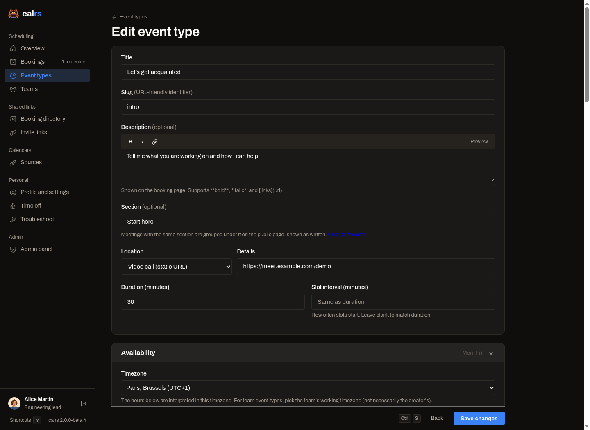
From the CLI
calrs event-type create \
--title "30min intro call" \
--slug intro \
--duration 30 \
--buffer-before 5 \
--buffer-after 5
Calendar selection
When you have multiple connected calendars, you can choose which calendars block availability for each event type. For example, a “Work meeting” event type can check only the work calendar, while a “Personal chat” checks only the personal calendar.
From the dashboard form, select the calendars under the Calendars section. Every synced calendar of your sources appears there: a calendar turned off under Calendars on its source is never read, so it cannot block an event type. If none of the calendars an event type selected is synced any more, the event type checks every busy calendar again.
Default behavior: If no calendars are selected, every busy calendar is checked, as before. That leaves out calendars colleagues shared with you, which start outside the busy calendars: to check one, select every calendar that should block, shared ones included.
A Microsoft 365 calendar a colleague shared with you starts outside the busy calendars, and calrs has no setting that adds it: it counts only for the event types that select it (see Microsoft Calendar).
The other direction, which calendar receives the confirmed bookings, can also be chosen per event type: “Write confirmed bookings to” in the same section. See CalDAV write-back; for a team event type, each member chooses on the Calendar sources page.
Required resources
Event types can require shared resources (a demo lab, a meeting room). A busy resource blocks booking slots, and confirmed bookings can reserve the resource in its own CalDAV calendar.
Whether a busy resource blocks a slot depends on the resource scheduling mode: in all mode every attached resource must be free, while in round-robin mode the slot survives as long as at least one attached resource is free.
The Required resources section of the event type form is visible to global admins, and to team admins on team event types when their team is allowlisted for a resource. See Shared Resources for the full behavior, including the “all” vs “round-robin” scheduling modes.
Booking questions and notes
The Booking form section configures short text, long text, single choice, multiple choice and checkbox questions, including consent boxes with policy links. Set required answers, reorder questions and decide which answers may be written to host calendars. The ordinary notes field can be optional, required or hidden. See Booking Questions for limits, answer snapshots and privacy behavior.
Booking reminders
Under Access & notifications, choose no reminder, 1 hour, 4 hours, 1 day or 2 days before the meeting. calrs emails the host and guest before confirmed bookings; SMS reminders use the same lead time when enabled. Calendar invitations also include a reminder for calendar clients that support it.
SMS notifications
Each event type decides whether the booking form asks the guest for a phone number, and whether it insists:
| Mode | Booking form | Effect |
|---|---|---|
| Off (default) | No phone field | No SMS, ever |
| Optional | Field shown, may be left empty | Guests who leave a number are texted when the booking is confirmed, moved, cancelled, or about to start |
| Required | Field shown and enforced | The booking cannot be submitted without a number |
The setting only appears when an SMS gateway is configured for the instance and you are permitted to change it: by default that means global admins only. See SMS Notifications.
Guest email footer
An event type can add a short footer to every email its guests receive: confirmation, reminder, cancellation, a request awaiting approval, a decline, an expired request, “pick a new time”, a reschedule, and the copies sent to additional attendees. Invite emails for the event type carry it too. Emails to you, the host, never do, and neither do the copies sent to a team member who claimed the booking.
Write it in Access & notifications, in the Email footer field. It takes the same minimal editor as the description (bold, italic, links) and at most 500 characters. Anything else you type, including HTML, is shown as plain text, and a link must start with http://, https://, mailto: or tel:; any other link is shown as text. The same text is used whatever language the guest booked in. In the plain-text part of the email, bold and italic markers are dropped and a link is written as label (url).
An event type with no footer uses the instance default set by an admin in the admin panel. A footer on the event type replaces that default rather than adding to it.
By default only admins see the field. An admin can let every user write footers on their own event types. Until then a member’s save leaves an admin’s footer untouched, and a copy a member makes with Duplicate starts without one.
Availability schedule
Each event type has its own availability rules and IANA timezone. A new event type in the dashboard starts from your default availability; with no personal defaults, the initial schedule is Monday–Friday, 09:00–17:00. Editing your defaults later does not rewrite existing event types.
From the dashboard form, you can set:
- Which days of the week are available (checkboxes)
- One or more start/end windows per day (for example, 09:00–12:00 and 14:00–17:00)
- The timezone in which those hours are interpreted
The availability engine intersects these rules with synced calendar events, bookings, time off and resources. Team and dynamic-group meetings also respect participant working hours. Changing the server timezone does not redefine these schedules. See Slot computation.
First day of the week
Choose First day of the week in an event type’s Availability section to set the display order in its availability editor and booking calendars. Any weekday can be first. The same setting applies to team booking pages, embeds, and the guest’s rescheduling calendar.
By default an event type follows its owner’s preference under Settings → Default availability. A user can follow the site default, set by an administrator in Admin → System settings. The initial site default is Monday. Team event types follow the owner of their scheduling account, regardless of which team administrator edits them.
This changes display order only: saved availability hours and weekly booking
frequency limits stay the same. Internally, availability rules consistently
use 0 = Sunday through 6 = Saturday; the new preferences use named keys
such as mon and sun.
Booking limits
Control how slots are displayed and how often the event type can be booked.
One slot per day
Enable “One slot per day” to show only the earliest available time each day. The guest sees the earliest remaining slot instead of all available windows. This is a display setting: after that slot is booked, a later slot may become the earliest available. Set a daily frequency limit of 1 if you want at most one booking per day.
Frequency limits
Enable “Limit booking frequency” to cap how many bookings can be made per time period. You can combine multiple limits — for example, max 2 per day AND 8 per week. Available periods: day, week, month, year. When a limit is reached, matching slots disappear from the picker and submissions are checked again. On round-robin event types, Per team member applies a limit to each assigned member instead of pooling the whole team.
Both settings are configured via toggle switches in the Booking limits card of the event type form.
Booking horizon
Booking horizon caps how far into the future a guest may book, as a rolling window of days. A “Sales intro” might stay bookable 14 days ahead while an “Annual review” stays open indefinitely.
The field lives in the Buffers & notice card of the event type form:
| Value | Meaning |
|---|---|
| (empty) | No limit — guests can book arbitrarily far ahead. This is the default and the existing behaviour. |
0 | Today only. |
14 | Today plus the next 14 days, inclusive. |
The window is measured in the event type’s own timezone, so hosts either side of the date line get the day they expect. The month arrow on the booking page disappears once the next month starts past the horizon, and calrs event-type slots clamps its --days window to match.
The limit is enforced when the booking is submitted, not just when slots are drawn, so a crafted request cannot book past it. Minimum notice and the horizon are independent: if minimum notice pushes the earliest bookable slot past the horizon, the event type simply has no bookable slots and the page shows its normal empty state.
Bookable date range
Bookable date range limits an event type to fixed calendar days: a trade fair, a conference, an open-house week. Outside the range there are no slots; inside it, everything works as usual (weekly rules, overrides, buffers, minimum notice, horizon, booking limits).
The two date fields live in the Buffers & notice card, under the booking horizon. Both are optional and both bounds are inclusive:
| From | Until | Meaning |
|---|---|---|
| (empty) | (empty) | No limit. The default and the existing behaviour. |
2026-11-10 | (empty) | No slots before 10 November. |
| (empty) | 2026-11-12 | No slots after 12 November. |
2026-11-10 | 2026-11-12 | Only 10, 11 and 12 November. |
The range limits the date of the appointment, not the day the booking is made: guests can book a November fair slot today. When guests may book is still governed by minimum notice and the booking horizon, and when both a horizon and a range are set, the stricter one wins on each side. Dates are interpreted in the event type’s timezone, like the weekly rules.
Example: a trade fair
The host is at the booth in Berlin from 10 to 12 November 2026, 09:00–18:00, and only until 14:00 on the last day.
| Setting | Value |
|---|---|
| Event type | “Meet us at the fair”, 30 min, in person, “Hall 4, Booth B12” |
| Timezone | Europe/Berlin |
| Availability | Mon–Sun 09:00–18:00 |
| Bookable date range | from 2026-11-10 until 2026-11-12 |
| Availability override | 2026-11-12 → 10:00–14:00 |
Guests see slots only on those three days. The booking page opens directly on November and shows “Bookable from November 10, 2026 to November 12, 2026” under the event details; the month and week arrows stay within the range.
After the range ends
Once the end date has passed, the event type is expired: it disappears from your public profile and team page, its direct link (including embeds and invite links) shows “This event is no longer bookable”, and the dashboard marks it with an expired badge. It is not disabled, so moving the end date forward makes it bookable and listed again.
Changing the range never cancels or moves existing bookings. If confirmed or pending bookings fall outside the new range, the form says how many after saving, with a link to your bookings. It also warns when the range has already ended, and when the booking horizon ends before the range starts (with the day booking opens).
The range is enforced when the booking or reschedule is submitted, not just when slots are drawn, so a crafted request cannot book outside it, and by calrs booking create. Asking a guest to pick a new time is refused while the event type has no bookable day left, since the page they would land on would have nothing to offer: extend the range first.
Calendar views
The guest slot picker supports three views, switchable via icons in the calendar header:
| View | Description |
|---|---|
| Month (default) | Month calendar grid with a slot list panel on the right |
| Week | 7-day columns with time slots listed under each day |
| Column | Days listed as rows with all time slot pills inline |
The guest’s chosen view is remembered in their browser. Hosts can set which view guests see by default from the Booking options card in the event type form.
Slot interval
By default, slot start times are spaced by the event’s duration — a 20-minute event produces slots at 9:00, 9:20, 9:40, and so on. The Slot interval field decouples start-time spacing from meeting length.
| Duration | Slot interval | Slot start times |
|---|---|---|
| 20 min | (blank — default) | 9:00, 9:20, 9:40, 10:00, … |
| 20 min | 30 | 9:00, 9:30, 10:00, 10:30, … (10-minute gap between meetings) |
| 45 min | 60 | 9:00, 10:00, 11:00, … (rounded hourly starts) |
| 60 min | 30 | 9:00, 9:30, 10:00, 10:30, … (overlap-allowed cadence — slots still honour busy times and buffers) |
Set this when you want “every half hour on the dot” or similar rounded start times regardless of meeting length. Leave blank to preserve the legacy back-to-back behaviour. Buffers and minimum notice still apply on top.
Slot computation
Available slots are computed by:
- Generating candidate slots from availability rules (day of week + time range)
- Filtering out slots that overlap with busy events from connected calendars, including recurring occurrences
- Filtering out conflicts with confirmed bookings, slot-holding pending requests and time off, and checking participant hours
- Filtering out slots blocked by required shared resources (all mode: any busy resource blocks; round-robin mode: blocked only when every resource is busy)
- Applying buffer times (before and after each slot)
- Removing slots that violate minimum notice (too close to now)
- Removing days past the booking horizon (too far ahead), days outside the bookable date range and slots at a frequency limit
- If “one slot per day” is enabled, keeping only the earliest slot per day
# View available slots for the next 7 days
calrs event-type slots intro
# View slots for the next 14 days
calrs event-type slots intro --days 14
Location
Event types support these location types:
| Type | Description |
|---|---|
link | Static video meeting URL (Zoom, a standing Meet room, etc.) |
jitsi_auto | Fresh Jitsi room URL per confirmed booking (pattern configured in Admin) |
webhook_auto | calrs POSTs the booking to an admin-configured URL and uses the returned { "url": "..." } |
google_meet | Fresh Google Meet conference owned by the host, attached to their Google Calendar event. Requires Google Calendar OAuth2 with write-back. See Google Calendar. |
phone | Phone number |
in_person | Physical address |
custom | Free-text description |
The location is displayed on the public booking page, in confirmation emails, and in .ics calendar invites.
Auto providers (jitsi_auto, webhook_auto, google_meet) mint the URL only when the booking is confirmed. Pending bookings do not get a link (so a declined request never creates a Meet or hits the webhook). The same Meet URL is kept on reschedule.
Saving an event type as google_meet is rejected unless every scheduling-relevant host already has Google Calendar connected with a write-back calendar selected (you, for a personal event type; every eligible team member for a team event type).
Sections and order on your page
Section (optional, in the form under the description) groups meetings on your public page: meetings with the same section sit in one card titled with it, exactly as you wrote it (the field suggests the sections you already use). Meetings without a section come last, under “Other meetings”; with no section at all, the page shows a single “Meetings” card. Change the order, next to the field, opens /dashboard/event-types/order, where up and down buttons move a section or a meeting within its section. A team event type’s section and order belong to the team’s admins, at /dashboard/teams/{id}/order, and show on the team page. Visitors see the public, enabled meetings; members of a team, signed in, also see its internal and private ones on the team page. The arrange page lists them all, so each keeps its place for when it shows.
Your page also shows, beside your name (under it on a phone), your usual hours as a small timetable, one row per schedule, with a My time button that shows them in the visitor’s timezone when it differs, and, when set in Profile & Settings, where you are based and the languages you speak, on one line. The hours are an approximation: for each day, from the earliest start to the latest end among the weekly hours of the meetings the page lists, so a lunch break or a meeting offered only in the morning does not show. They are left out when those meetings use different timezones. On a team page they come from the team’s meetings only, not from the members’ own working hours.
Enabling/disabling
Event types can be toggled on/off from the dashboard without deleting them. Disabled event types don’t show up on your public profile and return 404 on their booking page.
Duplicating
Duplicate in an event type’s ⋯ menu creates a copy with every setting: duration, buffers, notice, location, confirmation and visibility, weekly availability and date overrides, calendar selection, booking limits, resources, and for team event types the member priorities and watchers. The copy is titled “Title (copy)” under the slug <slug>-copy (or -copy-2, -copy-3, … when taken) and opens in the edit form so you can change what differs. It starts disabled, so nobody can book it until you are done: the edit form shows a banner with an Enable button, and the action row on the list has one too. The original is untouched; bookings and invite links are not copied. The copy is credited to you, and if you are not allowed to turn on SMS notifications, it starts with them off even when the original has them on.
Booking directory and favorites
Open Shared Links → Booking directory to find a colleague’s or team’s
meeting link. Search by name, username, team name or meeting title; multiple
words narrow the results (for example, Andy TAM or Sales demo). A team
meeting matches its team’s name and the people who take its bookings, so
searching Andy also finds the round-robin demo Andy hosts; the result then
says “With Andy”. Members set to weight 0 for a meeting, and suspended
accounts, do not count. Members of a private team are only searchable by other
members of that team. The directory includes enabled public and internal
meeting types that have not expired. Results are listed 50 to a page, by
owner and then title, with Previous and Next links once there are
more; the search and the Favorites only filter carry over between pages.
Click the star beside a meeting to add it to your personal favorites. Each meeting type is saved separately, so you can favorite someone’s consulting meeting independently of their TAM meeting. Favorites appear on your dashboard and in the directory’s Favorites only view, across browsers and devices. The dashboard shows the first 12; past that its card links to All favorites in the directory.
- Copy link copies a public meeting’s reusable booking URL.
- Generate invite link creates a fresh single-use invite for an internal meeting, valid for 7 days. If clipboard access is unavailable, the page shows the link for manual copying.
Favorites follow changes to meeting titles, usernames and URLs. Disabled, expired or newly private meetings disappear from the directory and dashboard; their favorites return if they become available again. Deleting a meeting or user removes the corresponding favorites automatically.
Private meeting types remain in their owners’ management pages. Public meetings on private teams are omitted because their bare URLs require a separate team invitation. Internal meetings remain shareable by authenticated colleagues, including those hosted by private teams. Favoriting a meeting does not grant additional booking or management permissions.
Visibility
Event types have three visibility levels, set from the Visibility dropdown in the event type form:
| Level | Available for | Listed publicly? | Who can create invite links? | Badge |
|---|---|---|---|---|
| Public | Personal + Team | Yes | N/A (no invite needed) | (none) |
| Internal | Personal + Team | No | Any authenticated user | blue “internal” |
| Private | Personal + Team | No | Event type owner only | indigo “private” |
Internal event types
Internal visibility is designed for cross-team and cross-person booking within an organization. It is available for both personal and team event types.
Typical use case (team): A Support team creates an internal “Support Call” event type. When a Sales rep needs to put a customer in touch with Support, they go to the Invite Links page, click “Get link” next to “Support Call”, and paste the generated URL in a Slack message or email to the customer. The customer clicks the link, picks a slot, and books — the link expires after 7 days and can’t be reused.
Typical use case (personal): A senior engineer creates an internal “Code Review” event type. Any teammate can generate a one-time link from the Invite Links page and share it with an external contributor who needs a review session.
The Invite Links page (/dashboard/invite-links) lists all internal event types across the organization — both personal and team. Each event type has:
- Get link — generates a single-use invite link (expires in 7 days) and copies it to clipboard
- Invites — opens the full invite management page for custom expiry, multi-use links, and guest pre-fill
Internal vs private: Internal lets any colleague generate links on the fly — ideal for cross-org services like support, IT help desk, or personal event types that colleagues need to share on your behalf. Private restricts link distribution to the event type owner only — better when you want controlled access. See Teams > Private teams vs internal vs private event types for a detailed comparison.
Private event types
Private event types are hidden from public pages and only accessible via invite links sent by the event type owner or team admin.
Typical use case: A demo team creates a private team event type. Sales reps send personalized invites to qualified leads. The demo is automatically assigned to the least-busy team member via round-robin.
Invite links
Both internal and private event types use booking invites to grant access:
- Go to Dashboard > Event Types (or Invite Links) and click Invite
- Fill in the guest’s name, email, and an optional personal message
- Choose an expiration (7, 14, or 30 days, or never) and whether to allow multiple bookings
- Click Send invite — the guest receives an email with a personalized booking link
The invite link takes the guest directly to the slot picker with the invite token embedded. Their name and email are pre-filled on the booking form. The token is validated at every step (expired, used-up, or invalid tokens are rejected).
To invite several people, use Bulk invites and enter one email address per line, up to 100 recipients. Each recipient gets a separate single-use link. The result reports sent, skipped and failed recipients so you can correct an address or retry a delivery.
Invite management
The invite management page (/dashboard/invites/{event_type_id}) shows:
- A “Get link” button at the top for one-click link generation — generates a single-use invite URL and copies it to your clipboard. No email form needed
- A form to send invites via email (with guest name, email, message, expiry, and usage options)
- A list of sent invites with status badges:
- Active — invite is valid and unused (or has remaining uses)
- Expired — past the expiration date
- Used — all uses consumed (for single-use invites)
- Copy button to reuse the URL of a sent invite
- Delete button to revoke an invite
Availability overrides
Block specific dates or set custom hours per event type — perfect for holidays, conferences, or one-off schedule changes.
Go to Dashboard > Event Types > Overrides and add:
- Block entire day — no slots available on that date (e.g., company holiday)
- Custom hours — replace the weekly rules with specific time windows for that date (e.g., 08:00–12:00 only)
Multiple custom hour windows can be added for the same date (e.g., morning + afternoon with a lunch break). Overrides are visible in the Troubleshoot view with a banner showing when they’re active.
To block the same dates on every event type at once, use time off instead.
Time off
Dashboard > Time off holds the periods when you take no bookings at all: holidays, a conference, an afternoon at the dentist. Every event type you host follows them, without touching each one’s overrides:
- your personal event types lose the slots in the period;
- on a round-robin team event type you are skipped and your teammates still take the bookings. Round robin ranks members by their bookings in the last 30 days, so when you are back you take more bookings than your teammates until you have caught up;
- on a collective team event type the slot is gone, since everyone has to be there;
- a guest’s reschedule onto the period and the approval of a request that falls in it are refused, as for a conflicting calendar event.
A period is a start date and an end date, both included, with optional times to block part of a day (from 14:00, or until 12:00). Times are in your profile time zone; a period keeps the zone it was entered in, and the list says so if you change your profile zone later. An optional note is shown only to you, on the Time off page and in Troubleshoot, where the period appears as “Time off”. Guests only ever see that the times are not available. The admins of your teams see that you are away, the dates and times without the note, in a read-only Time off section of the team settings page; other teammates see nothing. The Time off page says so under the note field. An admin viewing your dashboard as you sees your periods read-only, without the notes.
Bookings already made inside a new period are kept: adding time off cancels nothing. Cancel or reschedule them from Bookings if you need to. A request still waiting for your approval inside a period can no longer be approved (the host is busy at that time): decline it, or delete the time off first. Ended periods drop off the list and are deleted 30 days after they end. On the overview, time off closes the hours it covers in the week strip.
If your calendar already has an “Out of office” event on a calendar marked busy, it blocks every event type too; time off is for when it does not, or when you would rather not put it in your calendar.
From the CLI: calrs user time-off add <EMAIL> --from 2026-12-21 --to 2026-12-24 --label "Ski" (see the CLI reference).
Public URLs
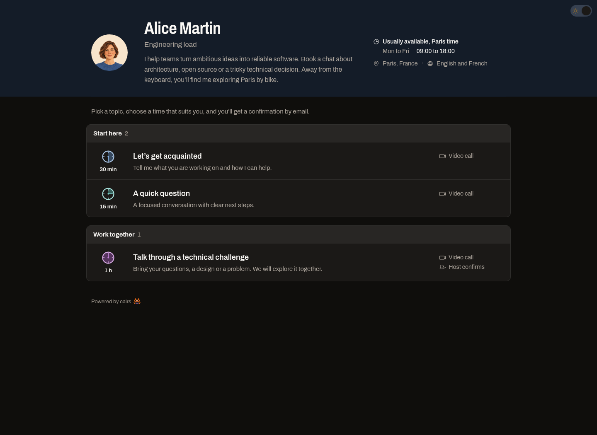
- Profile:
/u/yourname— lists all enabled, non-private event types - Slot picker:
/u/yourname/slug— shows available time slots - Booking form:
/u/yourname/slug/book?date=...&time=...— booking form for a specific slot - Invite booking: same URLs with
?invite={token}— for private event types accessed via invite links - Dynamic group:
/u/alice+bob+carol/slug— collective availability across multiple users (see below)
Dynamic group links
Dynamic group links let you create ad-hoc collective meetings by combining usernames in the URL — no team setup required.
How it works
Take any public event type URL and add other usernames with +:
/u/alice/intro → individual booking (Alice only)
/u/alice+bob/intro → collective booking (Alice & Bob)
/u/alice+bob+carol/intro → collective booking (Alice, Bob & Carol)
The first username owns the event type. Their event type settings (duration, buffer, availability rules) define the meeting. All participants’ calendars are checked — only slots where everyone is free are shown.
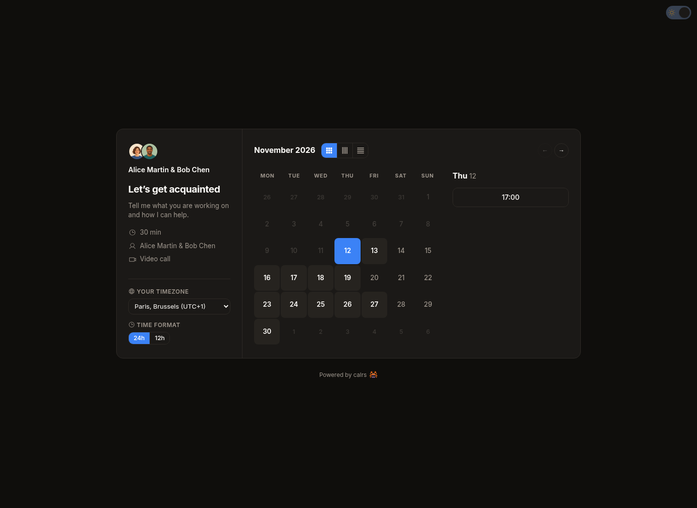
Building a dynamic group link
From the event type edit page, public personal event types show a Dynamic Group Link card at the bottom. Type a username to search — only users who have opted in are shown. Click to add them, and the URL is built live with a copy button.
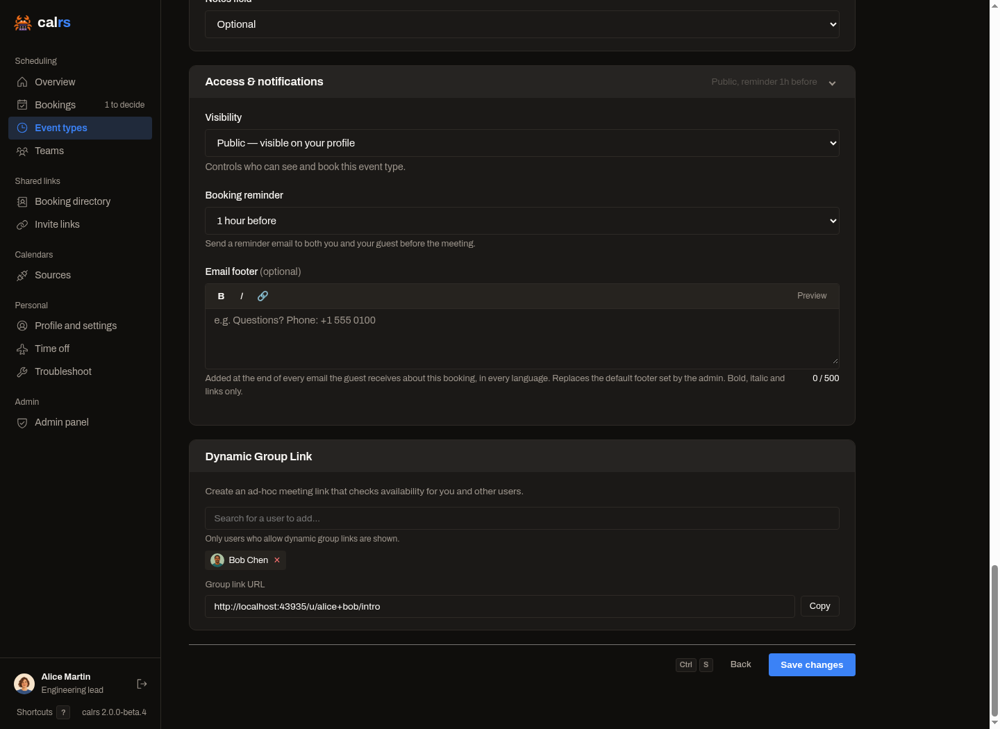
Opt-out
Users can disable being included in dynamic group links from Profile & Settings. The checkbox “Allow others to include me in dynamic group links” is enabled by default. When disabled, the user won’t appear in the search dropdown and any URL containing their username will show an error.
CalDAV write-back
When a dynamic group booking is confirmed:
- The event is written to the first user’s (event type owner’s) CalDAV calendar
- Other participants are added as
ATTENDEEin the ICS event - CalDAV servers that support scheduling (Nextcloud, SOGo, etc.) automatically propagate the invite to participants’ calendars
Constraints
- Only works with public event types (not internal or private)
- Requires at least two usernames in the URL
- All users must have
allow_dynamic_groupenabled
Embedding a booking page
See Embedding Booking Pages for complete inline, floating-button and click-trigger examples.
Embed on an event type (personal or team) opens a snippet generator for your own website: an inline calendar (Calrs.inline), a floating button (Calrs.floatingButton), or any element with a data-calrs-link attribute. The generator writes the config object for you:
| Option | Values | Effect |
|---|---|---|
layout | month, week, column | Calendar view the embed opens on |
theme | auto, light, dark | Color scheme |
brand | hex color | Accent color |
timeFormat | "24", "12" | Fixes the time format and hides the 12h/24h switch |
fixedTimezone | true | Shows and books times in the event type’s timezone (else its owner’s), ignores the visitor’s browser zone, and replaces the timezone picker with a line naming the zone. Useful for in-person appointments |
timeFormat and fixedTimezone are off by default, so existing snippets behave as before. They apply inside the embed only (the page must be loaded with embed=1). The timezone is resolved on the server at each visit, so an embed follows the event type if you change its timezone later. A guest who reschedules from their email link uses the regular reschedule page, with its timezone picker.
Booking Flow
Guest experience
A host’s page (/u/{username}) and a team’s page (/team/{slug}) list their public meetings in cards. Beside the host’s name (under it on narrow screens), only what is set: the usual hours as a small timetable under a heading naming the timezone once (“Usually available, Paris time”, then rows such as “Mon to Thu 09:00 to 17:30”; for each day, the earliest start to the latest end among the weekly hours of the meetings listed, an approximation that hides breaks; more than four schedules say the hours vary by day; on a team page, from the team’s meetings only, not the members’ own hours), with a “My time” button that shows the rows in the visitor’s timezone when it differs, then where the host is based and the languages they speak on one line (Profile & Settings). Without sections, one “Meetings” card lists every meeting; when meetings have a section (set in the event type form), each section is a card of its own, in the order the host sets at Event types > Change the order (/dashboard/event-types/order; a team’s at /dashboard/teams/{id}/order, for team admins), and meetings without one come last under “Other meetings”. Each meeting shows its length (as small clock faces and in words), how the guest meets (video, phone or in person) and “Host confirms” when the host confirms each request. A line above the cards explains how booking works when there is more than one meeting.
- Visit the booking page —
/u/host/meeting-slug(or via an invite link for private event types, or/u/host+other/slugfor dynamic group links) - Pick a timezone — auto-detected from the browser, changeable via dropdown
- Browse available slots — use the month, week or column view and navigate within the bookable date range
- Click a slot — opens the booking form
- Fill in details — name, email, any configured phone field, booking questions and notes (guest identity may be pre-filled from an invitation)
- Add guests — optionally invite additional attendees (if the event type allows it)
- Submit — booking is created
- Confirmation page — shows the confirmed or pending state, booking summary and, for a confirmed booking, an Add to calendar download
- Email — with SMTP configured, the guest receives the relevant confirmation or pending message; additional attendees receive their invitation when the booking is first confirmed
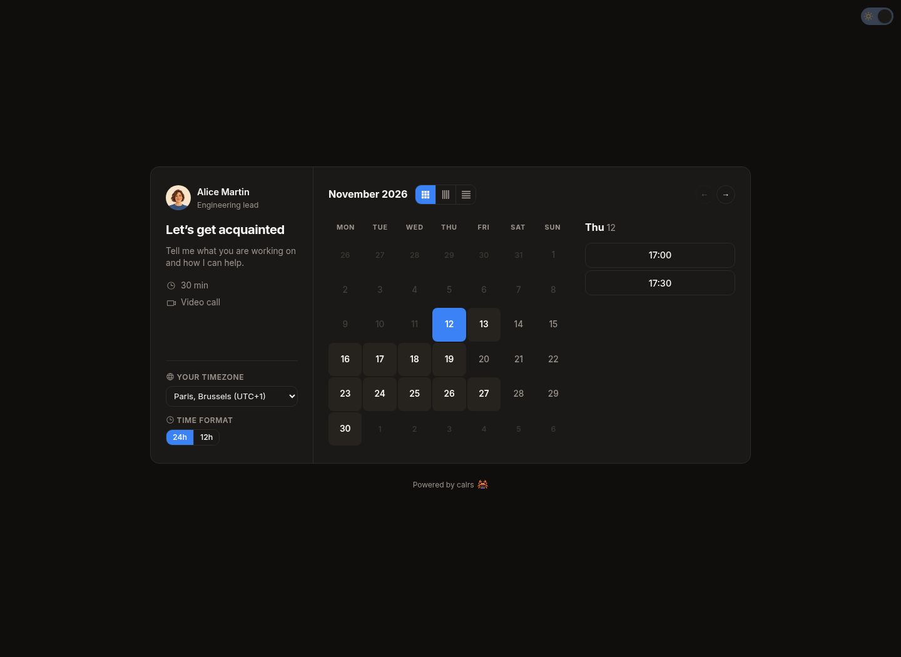
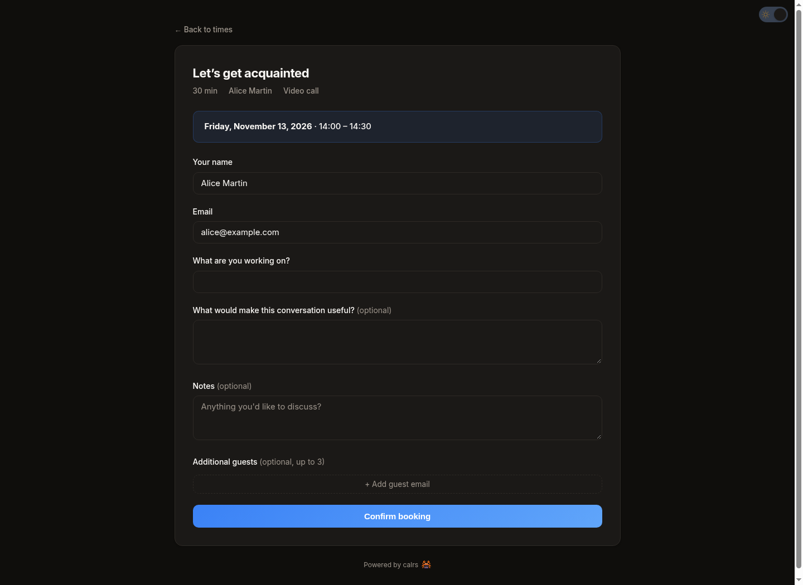
Timezones and existing installations
New bookings store UTC timestamps. Availability rules remain in the event type’s
IANA timezone, and guests see times in their selected timezone. The dashboard
uses the host’s profile timezone. Changing those settings does not move a new
booking’s actual start or end time; the server’s timezone does not determine it.
The CLI interprets booking create --date ... --time ... in --timezone (UTC by
default), then checks availability in the event timezone.
Upgrading adds a storage-version field automatically. Existing bookings retain their original timestamps and legacy interpretation: there is no bulk conversion, manual migration, notification, or calendar rewrite. Historical timezone mistakes are not repaired automatically. Rescheduling an existing booking stores the newly selected time in UTC; cancelling it leaves its timestamps unchanged.
Back up the database before upgrading as usual. Older binaries do not understand the new storage format; reverting to one after creating UTC bookings requires restoring the pre-upgrade backup, which loses bookings created since that backup.
Ambiguous or nonexistent local start times during daylight-saving transitions are rejected instead of silently choosing an instant. Calendar attachments for new bookings carry both exact UTC endpoints, including across midnight and clock changes. Meeting-provider webhooks likewise receive explicit UTC timestamps for new bookings (legacy bookings retain the previous format).
Clock changes
Durations and minimum notice use elapsed time. The slot picker omits nonexistent or ambiguous local starts, since booking forms do not carry a DST-fold marker. Conflict checks retain the existing wall-clock availability engine: a booking inside a repeated hour blocks both occurrences of that local time. A booking that merely spans the clock change does not also block the hour before and after its actual range. Host email text and calendar attachments use the exact UTC endpoints for new rows.
Booking statuses
| Status | Description |
|---|---|
confirmed | Booking is active. Slot is blocked. Emails sent. |
pending | Awaiting host approval (when requires_confirmation is on). Blocks the slot unless the event type turns that off. |
cancelled | Cancelled by host or guest. Slot is freed. |
declined | Declined by host, or expired before the host answered. |
Confirmation mode
When an event type has requires confirmation enabled:
- Guest submits booking → status is
pending - Guest receives a “pending” email (no
.icsyet) - Host receives an “approval request” email with Approve and Decline buttons
- Host can approve/decline in two ways:
- From the email — click the Approve or Decline button (no login required, token-based)
- From the dashboard: in the Waiting for your decision section of the bookings page, click Confirm or Decline
- On confirm: status becomes
confirmed, guest receives confirmation email with.ics, booking is pushed to CalDAV. Auto meeting links (Jitsi, webhook, Google Meet) are generated at this moment, not while the booking is pending. - On decline: status becomes
declined, guest receives a decline notification with optional reason
Before confirming, both approval paths check that the host is still free at that time (the assigned member for round-robin, every member for collective): a calendar event or a confirmed booking that appeared in the meantime makes the approval fail with an explanation instead of double-booking the host. Other pending requests do not count here, so when two requests overlap the host can approve either one; the other is then refused.
Pending requests hold the slot
By default a pending request blocks its host’s time exactly like a confirmed booking: the slot disappears from the booking page, and overlapping slots on the host’s other event types disappear too, so a second guest is never offered a time that is already requested. Uncheck Pending requests block the time slot in the event type form to let other guests request the same time (the first approved wins; the database still refuses two bookings on the exact same slot).
Request expiry
Request expiry (never, 4, 24, 48 or 72 hours; 24 for new event types, never for event types that existed before the setting) bounds how long a request may wait. The deadline is set when the request is made. It never runs later than the latest moment another guest could still book the slot (start minus the minimum notice), since expiring after that point frees nothing. A request made inside that window (the guest booked right at the minimum notice) keeps the expiry, capped by the meeting start, rather than lapsing minutes later. A guest reschedule that puts the booking back to pending restarts it.
- Halfway to the deadline, the host gets one reminder with the Approve and Decline buttons.
- At the deadline the request is declined, never accepted. The guest receives an email in the language they booked in (and an SMS when the event type collects phone numbers) asking them to pick another time, with a link to the booking page when the event type is public and
CALRS_BASE_URLis set. The host gets a short notice.
The check runs in the same background task as reminders, once a minute.
Note: The email action buttons require
CALRS_BASE_URLto be set. Without it, the host must use the dashboard.
Cancellation
From the dashboard, click Cancel on an upcoming booking:
- Optionally enter a reason
- Confirm the cancellation
- Both guest and host receive cancellation emails with a
METHOD:CANCEL.icsattachment - If the booking was pushed to CalDAV, the event is deleted from the calendar
Guest self-cancellation
Guests can cancel their own bookings via a link in the confirmation email:
- Click the “Cancel booking” link in the email
- Optionally enter a reason
- Confirm the cancellation
- Both guest and host are notified
The cancellation email correctly attributes who cancelled (host vs guest).
Reschedule
Bookings can be rescheduled without cancelling and rebooking. Both guests and hosts can initiate a reschedule.
Guest reschedule
Guests use the reschedule link in their confirmation or pending email:
- Choose an available new slot; the booking being moved is excluded from its own conflict check.
- Confirm the new time. Guest notice rules, date bounds and availability are checked again.
- If the event type requires confirmation, the booking becomes
pendingand the host must approve the new time. The request-expiry window starts again. Its old calendar reservation is removed while approval is pending. - Otherwise the new time is confirmed immediately and calendar copies and notifications are updated.
The old time is not retained as a second booking. Declining or expiring a reschedule that needs approval does not restore the original meeting.
Host reschedule
The dashboard’s Reschedule action asks the guest to pick a new time:
- Open the action from Bookings and confirm that the guest should receive a rescheduling request.
- calrs sends the guest a new link. The booking stays at its current time until the guest chooses another.
- The guest picks and confirms an available slot. Because the host requested the change, it is confirmed without another host-approval step, even on an event type that normally requires confirmation.
- Calendar copies are updated and the guest receives the changed invitation. Google Meet keeps its existing conference link.
A second request while one is already waiting is refused. The existing request can be resent, at most once an hour. A request is refused when the event type has no bookable dates left; extend its range first. The REST API exposes the same request-to-reschedule operation, not an arbitrary new-time edit.
Token regeneration
After each reschedule, the reschedule_token, cancel_token, and confirm_token are regenerated. This invalidates any previous email links, ensuring only the latest links work.
Edge cases
- Already cancelled/declined bookings cannot be rescheduled (error page shown)
- Self-conflict is handled: the booking being rescheduled doesn’t block its own new slot
- Group bookings keep the original
assigned_user_id(no re-running round-robin) - Reminder state is reset:
reminder_sent_atis cleared so a new reminder is sent for the updated time
Notice window policy
By default, guests can cancel or reschedule via their tokenized email links at any time, including a few minutes before the meeting starts. This leaves hosts with same-day calendar holes that cannot be re-filled.
Per event type, you can require a minimum lead time before guests can take either action:
- Minimum notice to cancel — gates
/booking/cancel/{token}(both the form and the submission). - Minimum notice to reschedule — gates
/booking/reschedule/{token}(both the slot picker and the submission).
Each is set from the event type form with a numeric value plus a unit selector (minutes / hours / days). Empty means no restriction (the previous behaviour).
Within the configured window, the guest sees a friendly page showing the host’s contact email instead of a working form. The booking is unchanged. If the policy is set, it is also surfaced inline on the confirmation page and in the confirmation email so the guest is warned upfront.
The check applies to guest-side actions only. Hosts and admins can still cancel or reschedule from the dashboard at any time, since real-world emergencies often require host action on behalf of the guest. The notice window is not enforced on host paths.
Host notes
Each booking can carry host notes: free text for the people running the meeting (what was said on a call, what to prepare), kept apart from the notes the guest typed when booking. Open them from the booking’s title on the bookings page or the overview, at /dashboard/bookings/{id}/notes. Once a booking has notes, its row shows them with an Edit note button (the overview’s agenda shows a quiet “Host note” marker instead). For notes after the call, the bookings page lists in Last 30 days the meetings held over that time, and in Cancelled and declined the bookings that were cancelled or declined, from those due 30 days ago to those cancelled for a later date, for each of their hosts. Each title opens the notes, so a note on a meeting cancelled for next month stays reachable. Each section of the bookings page (waiting for a decision, available to claim, upcoming, last 30 days, cancelled and declined) shows 50 bookings a page with its own Previous and Next, and moving through one section leaves the others on their page. The search box searches every section and page on the server when you press Enter (guest name, email, meeting title, and the team for bookings you can claim), and an action taken on a page (cancel, approve, decline, ask to reschedule) brings you back to that page. Notes are counted in characters, an emoji being one. The page shows the booking, the guest’s own notes, and who last edited the host notes and when. Notes are at most 5000 characters; saving an empty field removes them.
Who can read and edit them:
| Person | Access | Why |
|---|---|---|
| Owner of the event type (its creator, for a team event type) | Yes | Sees the booking on their bookings page and approves, cancels or reschedules it |
| Member a round-robin booking is assigned to | Yes | Runs the meeting |
| Every member of a collective booking | Yes, except members excluded from the event type | They all attend |
| Members of a round-robin team, when the booking has no assigned member (deleted account, old booking) | No, only the owner | It was never theirs |
| Watcher who claimed the booking | Yes | Took the meeting over |
| Other members of a round-robin team, team admins who are none of the above, watchers only offered the booking, instance admins | No | Nothing else in calrs shows them that booking |
Access follows the team as it is now: a member who leaves the team loses access to its collective bookings. Anyone else gets the dashboard’s “Not found” page, also when saving, whether or not the booking exists. When two hosts edit at the same time, the second save is refused with the first one’s text shown (or “(cleared)”), so nothing is overwritten silently. An admin impersonating a host is recorded as the author: “Last edited by Admin (admin, as Host)”.
Host notes are shown on host surfaces only: the notes page, the bookings page, the overview, and the host emails sent once they exist (host reminder, approval reminder, “booking confirmed”, cancellation and reschedule request). Each host email checks its own recipient: a collective booking’s organizer who has since left the team still gets the email (the calendar event names them) but without the notes. They are never shown to the guest: not on the confirmation page or the cancel and reschedule pages, not in guest emails or SMS, not in an .ics file, a webhook or an embed. They are not written into the calendar event either, since calendar servers send that event to its attendees and it is often shared.
Notes stay with the booking when it is rescheduled, and when it is cancelled or declined.
Conflict detection
Before a booking is accepted, calrs checks for conflicts:
- Calendar events — busy events from all selected connected calendars, including recurrence and supported out-of-office events
- Existing bookings — confirmed bookings and pending requests configured to hold time, across event types the participant hosts
- Time off and working hours — the event schedule and relevant participants
- Shared resources — the required resources under their scheduling mode
- Booking limits and date bounds — frequency caps, rolling horizon and fixed bookable dates
- Buffer times — the buffer before/after is included in the conflict window
- Minimum notice — slots too close to the current time are rejected
Additionally, a database-level unique index prevents two bookings from occupying the same slot, even if two guests submit simultaneously. On round-robin team event types the uniqueness is per assigned member, so two guests can book the same time as long as different members take the bookings.
CalDAV write-back
Write-back also uses the connected Exchange or Microsoft Graph provider where applicable; see the calendar guides.
When a booking is confirmed (either directly or via approval), calrs can push the event to the host’s CalDAV calendar. For team event types the host is the assigned member (round-robin), or every eligible member (collective: enabled members with a non-zero per-event-type weight, the same set the slot grid checks). See CalDAV Integration > Write-back for setup.
The event’s ORGANIZER is the host: the assigned member, or for a collective booking the first eligible member by name, with every member’s name joined. A collective or dynamic group booking stores that organizer when it is created and keeps it for every later update (approval, reschedule, claim, retry), even if the team changes in the meantime: Google CalDAV refuses an update that changes an existing event’s organizer. Bookings made before calrs stored it (migration 070) still resolve it from the current roster.
Email notifications
If SMTP is configured, calrs sends emails at these moments:
| Event | Guest receives | Host receives |
|---|---|---|
| Booking confirmed | Confirmation + .ics invitation | Notification (calendar attachment depends on the notification path) |
| Booking pending | “Awaiting confirmation” notice | Approval request with Approve/Decline buttons |
| Booking declined | Decline notice (with optional reason) | — |
| Booking cancelled | Cancellation + .ics CANCEL | Cancellation + .ics CANCEL |
| New time chosen after a host request | Reschedule notification + updated .ics | Confirmation notification |
| Guest reschedule requiring approval | “Pending” notice with updated time | Reschedule approval request with Approve/Decline buttons |
| Booking reminder | Reminder with cancel button | Reminder with details |
| Invite sent | Invite email with booking link | — |
All emails are sent as HTML with plain text fallback. They include event title, date, time, timezone, location, and notes. The HTML templates are responsive and support dark mode in email clients that honor prefers-color-scheme.
Email language
Every email is written in its reader’s language, in any of the languages calrs ships:
- Guests (and the additional attendees they add) get the language the booking page was shown in when they booked, whoever triggers the email. That is the guest’s browser language, unless the host chose Always my language under Public booking page language in Profile & Settings: their own booking pages (
/u/{username}, and the legacy/{slug}routes), and so their guests’ emails, then use the host’s own saved language. Being logged in to calrs does not change the language of a booking page: it follows the browser the booking is made from, so a staff member booking on a client’s behalf books in their own browser’s language, not their saved calrs preference. To reach a client in another language, book from a browser set to it, or send the client the booking link. The email goes out whoever triggers it: the guest themselves, the host approving, declining, cancelling or asking for a new time, the reminder task, or a calendar sync noticing the host deleted the event. - Hosts, team members and watchers get the language they chose in Profile & Settings. With none set, they get English. On a collective team booking each member receives the host email in their own language.
- The guest’s cancel and reschedule pages use that same language, so they match the emails. The host’s approve and decline pages use the host’s saved language (for a collective booking, which several members can approve, the browser’s), and claim pages the watcher’s.
- Invites follow the language of the person sending them, who also writes the optional personal message.
The admin SMTP test email is English.
Sender and replies
Every email leaves from the configured sender address, so SPF, DKIM and DMARC keep aligning with the instance’s domain. What changes is the name the guest sees and where their reply goes:
- Guest emails (confirmation, the copies to additional attendees, pending, reminder, cancellation, decline, expired request, pick a new time, reschedule, invite) show the host’s name followed by the configured sender name, joined in the email’s language:
Bob Smith via Acme Scheduling, or justBob Smithwhen no sender name is set. They carry aReply-Towith the host’s booking email (their account email when no booking email is set), so a guest who answers the email reaches the host directly. - On a round-robin booking the host is the assigned member. On a collective or dynamic group booking the name is the joined roster (
Alice & Bob via ...), and replies go to the member the calendar invite names as organizer, the same on every email of that booking even when the team changes after it was made, and whoever cancels, declines or reschedules it. Bookings made before migration 070 have no stored organizer and still resolve it from the current roster, so a team change can move theirs. - Invites take the
Reply-Tofrom the inviting user’s account email, never their booking email: the inviter picks the recipients, and the booking email is not verified. - Host, team member, watcher and admin emails keep the configured sender name and have no
Reply-To.
A host whose booking email is on a free-mail domain while the instance sends from its own domain may see some guest emails scored higher by spam filters (SpamAssassin’s FREEMAIL_FORGED_REPLYTO). A booking email on the organization’s domain avoids it.
Timezone handling
- Guest’s timezone is auto-detected via
Intl.DateTimeFormatin the browser - A timezone dropdown lets the guest change it
- Slots are displayed in the guest’s selected timezone
- New bookings use UTC storage. Legacy bookings retain their existing timezone interpretation.
- The timezone is preserved across navigation (week picker, booking form)
CLI booking
calrs booking create intro \
--date 2026-03-20 --time 14:00 \
--name "Jane Doe" --email jane@example.com \
--timezone Europe/Paris --notes "Let's discuss the project"
Booking Questions
An event type can ask guests more than their name and email: a licence plate before a tyre change, the topics of a first consultation, whether they agree to the call being recorded. The questions are set per event type, in the Booking form section of its edit page, by whoever may edit that event type (its owner, a team’s admins, instance admins).
Kinds of question
| Kind | The guest sees | Stored |
|---|---|---|
| Short text | one line, up to 500 characters | the text |
| Long text | a text area, up to 5000 characters | the text, line breaks kept |
| One choice | radio buttons, or a drop-down above five choices | the chosen choice |
| Several choices | one checkbox per choice | the chosen choices |
| Checkbox | one box to tick | yes or no |
Each question can be required or optional, and has an optional help text shown under it. Questions appear on the booking form in the order you give them (Move up, Move down), after the name, email and SMS phone fields and before the notes.
A required checkbox must be ticked, which is what a privacy agreement needs. An optional checkbox starts unticked, and its “no” is kept too: “did not agree to the recording” matters as much as “agreed”.
Mark a checkbox as consent when the guest agrees to something (a privacy policy, a recording, a newsletter), and give it a policy link if there is a document to read: the link is shown under the box and opens in a new tab. calrs keeps, with the booking, the sentence the guest read, the link, whether the box was ticked and when the form was sent, along with the guest’s email and the booking’s language. It does not keep IP addresses or browser details. A consent box is never ticked in advance.
Limits: 20 questions per event type, 30 choices per question (200 characters
each), 200 characters per question (1000 for a checkbox, whose label is the
sentence agreed to), 500 for a help text. A policy link must be a full
https:// or http:// address.
The notes field
The free-text notes field stays. Notes field in the same section sets it to optional (as before), required, or hidden when the questions already ask everything.
Where the answers appear
| Answers | |
|---|---|
| Bookings page of the dashboard, the booking’s notes page | yes, folded under the booking |
| Host emails: new booking, approval request and its reminder, booking confirmed, host reminder, reschedule request | yes, after the notes |
| The event calrs writes to the host’s calendar (CalDAV, Exchange, Google, a watcher’s copy once claimed) | yes, except questions with Write the answer into the calendar event turned off, and except the one Google copy that lists the attendees (Google shows its description to all of them), as for the guest’s phone |
| The guest’s confirmation page, confirmation and pending emails | yes, their own answers |
| Webhooks and the REST API | yes, see Webhooks and REST API |
The emailed invitation (.ics), the “Add to calendar” file, additional attendees’ emails, reminders and cancellations to the guest, SMS, email subjects, shared resource calendars, logs | never |
Turn Write the answer into the calendar event off for sensitive answers: assistants, delegates and anyone a calendar is shared with can read the event’s description. The answer still reaches the host by email and on the dashboard.
Watchers of a team event type see the answers once they have claimed the booking, as they see the notes.
Editing questions later
Answers keep the question as the guest read it. Renaming a question, changing its choices or deleting it changes future bookings only: past bookings still show what the guest was asked and answered. A saved question keeps its kind; to change it, remove the question and add a new one.
Each question gets a stable key, made from its label when it is created (shown in the editor). Webhooks use it, and it does not change when the question is renamed.
Duplicate copies the questions and the notes setting along with the rest of the event type.
Languages
Questions, help texts and choices are shown as you write them, in one language. A guest whose browser is in another language reads calrs’ own labels in theirs and your questions in yours. “Yes”, “No” and “You agreed” are written in each reader’s language.
Rescheduling and invites
A rescheduled booking keeps its answers; the guest is not asked again.
Invite links ask the same questions. Bookings created with
calrs booking create ask none: the host is the one booking. A booking
through the REST API asks none either, unless it sends answers, keyed by
question key; then they are checked like the form’s, required questions
included, and stored the same way (see REST API). A consent ticked
that way is recorded as attested by the host who sent it, with the token
used: hosts read “Agreed, recorded by” that host, and the guest is told it
was recorded on their behalf, never that they agreed.
Embedding Booking Pages
Open Embed on a personal or team event type to generate a snippet for your website. The generator previews three ways to offer booking:
- Inline: a booking picker inside your page, with automatic height adjustment.
- Floating button: a button that opens the picker in a modal.
- Element click: attach the modal to an existing link or button.
Use your public calrs origin in the script URL and the full booking URL as link. Keep the script before the code that calls Calrs.
Inline example
<div id="booking"></div>
<script src="https://cal.example.com/embed.js"></script>
<script>
Calrs.inline({
selector: '#booking',
link: 'https://cal.example.com/u/alice/intro',
config: { layout: 'month', theme: 'auto' }
});
</script>
The runtime adds embed=1 and handles resizing messages from that iframe’s window and origin.
Floating button example
<script src="https://cal.example.com/embed.js"></script>
<script>
Calrs.floatingButton({
link: 'https://cal.example.com/u/alice/intro',
buttonText: 'Book a meeting',
config: { theme: 'light', brand: '#2563eb' }
});
</script>
Use the generator to choose button position, colors and icon settings.
Existing link or button
<a href="https://cal.example.com/u/alice/intro"
data-calrs-link="https://cal.example.com/u/alice/intro"
data-calrs-config='{"layout":"week","theme":"auto"}'>
Book a meeting
</a>
<script src="https://cal.example.com/embed.js"></script>
The runtime automatically binds elements with data-calrs-link. The ordinary href also provides a destination when JavaScript is unavailable.
Display options
| Option | Values | Effect |
|---|---|---|
layout | month, week, column | Initial calendar view |
theme | auto, light, dark | Color scheme |
brand | Hex color | Accent color |
timeFormat | "24", "12" | Fix the clock format and hide the format switch |
fixedTimezone | true | Use the event type’s timezone and replace the timezone picker with a note |
Leave the last two options out to let visitors use the usual clock and timezone controls. Fixed timezone is useful for in-person appointments: it follows the event type’s current timezone, rather than a hard-coded offset. These controls apply inside embeds only; a guest rescheduling from an email opens the regular reschedule page.
Access and booking rules
An embed uses the same availability, date range, questions, captcha and booking rules as the direct link. Embedding does not make a private or internal event type public. If a booking URL needs an invitation, preserve its query parameters and remember that the invitation’s expiry and usage limit still apply.
Set the public base URL correctly before generating snippets. If your website has a Content Security Policy, allow your calrs origin for the script and frame. If the picker does not load, check the browser console and any framing policy added by your reverse proxy.
Teams
Teams allow multiple users to share booking pages with combined availability and automatic assignment.
Key concepts
Teams replace the old separate “Groups” and “Team Links” concepts into a single unified system.
| Feature | Description |
|---|---|
| Visibility | Public (anyone can book) or Private (requires invite token) |
| Scheduling mode | Round-robin (any member free, assigned to least-busy) or Collective (all members must be free) |
| Team admin | Manages event types and settings without needing global admin |
| OIDC sync | Optionally link Keycloak groups — all group members become team members |
Creating a team
From Dashboard > Teams > + New:
- Set name, slug, and description
- Choose visibility: public or private
- Pick members from all enabled users
- Optionally link OIDC groups (all group members become team members automatically)
- Click Create team
The creator becomes a team admin. Global admins can remove themselves from teams they created — they retain management access via the admin panel. This supports the IT admin use case of creating teams without being bookable.
Team settings
Any team admin can access settings from Dashboard > Teams > Settings:
- Avatar upload — team profile image
- Description — displayed on the public team page
- Members — view members and their roles
- OIDC group linking — from team settings, use the unified search bar to find and link OIDC groups. When a group is linked, all its members are automatically added to the team with source=‘group’. Members stay in sync on each OIDC login — new group members are added, removed members are cleaned up
- Private teams — the invite link is shown with a copy button for sharing
- Time off (read-only): the members’ upcoming time off, each period with the member’s name and its dates and times in your own time zone, so you can see who is away before planning a team event. The note a member gave a period is never shown. Only the team’s admins see it, and the section is absent when no member has time off planned
Team event types
Team event types are created from Dashboard > Event Types > + New (select the team from the dropdown) or from Dashboard > Teams > team settings.
Unified event types page: Personal and team event types appear together in a single list on the Event Types dashboard page. Team event types are distinguished by a team name badge, so you can manage all your event types from one place.
They support the same options as personal event types:
- Duration, buffer before/after, minimum notice
- Availability schedule (days + hours)
- Calendar selection, location, confirmation mode
- Invite links (for private event types)
Where a team booking is written is each member’s own choice: the booking lands in the assigned member’s calendar (every member’s for collective), so every member picks, under Calendar sources > Bookings by event type, which of their calendars receives the bookings of each team event type they belong to. Without a choice, the write calendar of their sources is used. See CalDAV write-back.
Additional team-specific options:
- Scheduling mode — round-robin or collective (see below)
- Member weights — admins can set priority per member via the Member Priority card, which appears during both creation and editing. Group member weights provide a default; the event type can override the member priority. Weight 0 excludes a member from round-robin assignment for that event type — excluded members also don’t appear on the public booking page’s avatar list.
Public team pages
- Public teams:
/team/{slug}shows the team profile with avatar, description, members (faces with their first names), and event types. Each meeting says who the guest meets: “with one of” and the members’ faces for round robin, “with everyone” for collective (members excluded with weight 0 are left out). Team admins group the team’s meetings into sections and set their order at/dashboard/teams/{id}/order; the team’s usual hours show only when its meetings share one timezone - Private teams:
/team/{slug}?invite={token}— same page, but requires a valid invite token - Slot picker:
/team/{slug}/{event-slug}— shows available slots based on the scheduling mode. The sidebar displays the team avatar and stacked member avatars (members excluded via weight 0 are hidden) - Legacy redirects:
/g/{slug}redirects to/team/{slug},/t/{token}redirects to/team/{slug}?invite={token}
Scheduling modes
Round-robin
A slot is available if any team member is free. The booking is assigned by member priority, then workload (fewest confirmed bookings among equally prioritized available members).
When a booking is submitted:
- calrs finds all team members (with weight > 0)
- For each member, checks if the slot is free (no calendar events or bookings in the buffer window)
- Among available members, prefers the highest configured priority, then the fewest confirmed bookings
- The booking is assigned to that member and written to their configured calendar destination
- If no member is available, the booking is rejected
Best for: support queues, sales demos, intake calls — any scenario where the guest doesn’t care who they meet.
Collective
A slot is available only if all team members are free. The booking includes every member.
When a booking is submitted:
- calrs verifies all members are free for the slot
- The booking is created and written to each eligible member’s configured calendar destination
- Email notifications are sent to all members
- If any member has a conflict, the slot is not shown
Best for: panel interviews, group demos, team syncs with external guests.
Excluding members
On a collective event type, per-member exclusions can be set from the event type editor — useful when a team member is joining the team but shouldn’t (yet) be required for a specific event. Excluded members don’t gate the availability window, don’t receive notifications, and don’t appear on the public booking page’s avatar list. The event type’s bookings don’t make them busy either, so their own event types stay bookable at those times.
Booking watchers
Designate a team as watchers on an event type to separate the “who gets booked” decision from the “who can pick up this booking” decision.
When a booking lands on a watched event type:
- Every watcher team member gets an email with a Claim this booking button
- The first watcher to click the button claims the booking — a short-lived token backs each button
- Subsequent clicks land on an “already claimed” page; no double-assignment
- Claimed bookings show up on the watcher’s dashboard with a “Claimed by you” badge
- A confirmed claimed booking makes the watcher busy: their own event types stop offering that time, and the availability troubleshooter lists it as a claimed booking
Typical setup: a customer self-serves through a public event type, and a rotating support team watches it. Whoever has bandwidth grabs the booking — no round-robin assumptions, no manual dispatch.
Configuration: in the event type editor, or on the create form once a team is picked, scroll to Booking watchers and pick one or more teams. Watchers can be set on any scheduling mode; they’re independent from the round-robin / collective assignment.
Multi-timezone teams
A team event type’s weekly rules use its explicit event timezone, not the server’s timezone. Each member’s default working hours use that member’s profile timezone. calrs converts the member’s hours and calendar events into the event timezone before checking availability.
For example, give a Paris/New York support team a broad event schedule in Europe/Paris, then have each member set their actual hours in Profile & Settings. Round-robin offers a slot when an eligible member is within their own hours and free; collective requires every eligible member to be within their hours and free. Daylight-saving changes are applied using the named timezones.
Each member’s time off, busy calendars and existing bookings also constrain their availability. A broad team schedule does not by itself make people available outside their personal hours. Guests view the resulting slots in their selected timezone.
OIDC group sync
Groups synced from your OIDC provider can be linked to teams, automatically adding group members as team members.
How it works
- User logs in via SSO
- calrs reads the
groupsclaim from the JWT - Groups are created if they don’t exist (leading
/stripped from Keycloak paths) - User is added to their groups and removed from groups they no longer belong to
- Groups linked to teams via the
team_groupsjunction table sync membership automatically
OIDC-synced members get role='member', never admin. Manual team admin status is preserved across syncs.
Keycloak setup
In your Keycloak realm:
- Create groups under Groups (e.g., “Sales”, “Engineering”)
- Assign users to groups
- Add a
groupsmapper to your client:- Mapper type: Group Membership
- Token claim name:
groups - Add to ID token: ON
- Full group path: ON (calrs strips the leading
/)
Private teams vs internal vs private event types
There are three ways to restrict access to team bookings. They serve different use cases and can be combined:
| Mechanism | What it gates | Who distributes links | Use case |
|---|---|---|---|
| Private team | The entire team page | Team admin shares one invite link | Controlled distribution — only the team admin decides who books |
| Internal event type | A single event type (personal or team) | Any authenticated employee via Invite Links page (under Shared Links in the sidebar) | Self-serve — any Sales rep can generate a Support Call link for a customer |
| Private event type | A single event type | Event type owner sends personalized invites | Targeted — send invites to specific guests with pre-filled info |
When to use each
Private team — your team handles external meetings but you don’t want colleagues exposed to unsolicited bookings. The team admin shares the invite link only with approved contacts. Example: a consulting team where only the account manager shares the booking page with clients.
Internal event type — you (or your team) provide a cross-org service and you want any colleague to be a link distributor, without involving the owner each time. Works for both personal and team event types. Example: IT Help Desk, Support Calls, or a senior engineer’s “Code Review” slot — any colleague can generate a one-time link from the Invite Links page (under Shared Links in the sidebar) and paste it in a Slack message or support ticket. Links are single-use and expire after 7 days.
Private event type — you want to send personalized invites to specific guests with their name and email pre-filled. Example: demo team sends targeted invites to qualified leads with custom messages.
Combining them
- A public team can have internal event types — the team page is public but some event types are only bookable via employee-generated links
- A private team can have internal event types — guests need the team invite token first, then employees can generate per-event-type links
- A public team can have private event types — the team page lists public event types, but private ones require their own invite
- Personal internal event types work the same way — any colleague can generate links from the Invite Links page, but the booking is assigned to the event type owner (not round-robin)
Dashboard
The Teams page in the dashboard shows all teams you belong to:
- Team avatar, name, and visibility badge (public/private)
- Member count
- Settings link (visible to team admins)
- Global admins see all teams and can create new ones
Shared Resources
Shared resources are instance-level bookable assets: a demo lab, a meeting room, a shared piece of equipment. Each resource is backed by a read-only ICS publish feed (a BlueMind “calendar address”, a Nextcloud public link, or any URL serving an iCalendar file). Once a resource is attached to an event type, a busy resource blocks booking slots the same way a busy calendar does.
The feature is opt-in. With no resources configured, nothing changes anywhere in the booking flow.
How it fits together
- A global admin adds a resource in the admin panel, pointing at its ICS feed.
- The resource is attached to one or more event types (“Required resources” on the event type form).
- When guests view the slot picker, times where the resource is busy are hidden.
- When a booking is confirmed, calrs can write a reservation event into the resource’s own CalDAV calendar, so other tools (and other calrs event types) see it as busy too.
- When the booking is cancelled or rescheduled, the reservation is released.
Even without CalDAV write-back, two event types sharing a resource cannot double-book it: calrs merges the feed events with its own confirmed bookings when computing busy times.
Adding a resource
Go to Dashboard > Admin > Resources and click Add resource:
- Feed URL (required) is the read-only ICS publish URL. It is validated and synced immediately on create, and the resource name is auto-filled from the feed’s
X-WR-CALNAMEif present. - CalDAV URL (optional) is the writable CalDAV collection for reservation write-back. For BlueMind publish URLs, calrs can derive it automatically, so you can usually leave it blank.
- Service account (optional) is a username and password with write access to the CalDAV collection. The password is encrypted at rest (AES-256-GCM, same as other stored credentials). When editing, leaving the password field empty keeps the current value.
Per-resource actions:
- Sync now forces an immediate feed re-sync.
- Test write verifies write-back end to end: it PUTs a temporary event 24 hours out, checks it exists, then deletes it.
- Edit and Delete work as expected. Deleting a resource detaches it from all event types.
Feed sync and failures
Feeds are cached and re-synced automatically when older than 5 minutes, on demand as slots are computed. The feed is authoritative: events that disappear from the feed are removed from the cache.
If a feed fetch fails, the admin panel shows a sync failure indicator with the last error. Failed fetches still update the sync timestamp so dead feeds back off instead of being retried on every request. A successful sync clears the error.
Attaching resources to event types
The event type form gains a Required resources section listing the resources you may attach, plus a scheduling mode selector.
- Personal event types: only global admins see and edit the section.
- Team event types: global admins always can. Team admins can too, if their team is on the resource’s allowlist (see Team allowlist below).
Scheduling modes
When an event type has more than one required resource, the Resource scheduling mode controls how they combine:
| Mode | Slot is available when | At booking time |
|---|---|---|
| All (default) | Every attached resource is free | The booking blocks all attached resources |
| Round-robin | At least one attached resource is free | The least-loaded free resource is picked and assigned to the booking |
Use all when a meeting genuinely needs every resource (a room and a projector). Use round-robin when any one of several interchangeable resources will do (three identical demo labs). In round-robin mode, the assigned resource is stored on the booking and shown on the host’s bookings dashboard and in host-facing emails. Guests never see resource names.
How busy resources block slots
For each candidate slot, calrs merges, per resource:
- Feed events, including expanded recurring events, skipping cancelled and transparent (free) ones
- calrs’ own confirmed bookings that hold that resource
In all mode, the union of busy intervals blocks the slot. In round-robin mode, only the intersection blocks it (the slot survives as long as one resource is free). Pending bookings do not block resources; both approval paths re-check resource availability before confirming, so an approval fails cleanly if the resource was taken in the meantime.
The Troubleshoot view shows resource conflicts as resource_busy intervals, alongside calendar events and bookings.
Reservation write-back
When a booking is confirmed, calrs PUTs a reservation event into the resource’s CalDAV collection under the booking’s own UID:
- In all mode, into every attached resource.
- In round-robin mode, only into the assigned resource.
When a confirmed booking is cancelled or rescheduled, the reservation is deleted. The targets are derived from the stored assignment, so a resource that was detached from the event type after booking still gets released. Declined pending bookings need no cleanup, since reservations are only pushed on confirmation.
Write failure is never fatal: the booking still succeeds, the DB-side busy check keeps blocking the resource, and the failure is logged.
Credentials for write-back
calrs tries credentials in trust order:
- The resource’s service account, if configured. This is always preferred.
- Members who opted in to credential lending and have a CalDAV source on the same scheme, host, and port as the resource’s CalDAV URL. The booking’s assigned host is preferred among them.
Members opt in from Profile & Settings. Note that lending grants writes to any collection on that origin that the member’s own server-side ACL allows, so a dedicated service account is the safer setup.
Team allowlist
By default, only global admins can attach resources to event types. To delegate this to team admins, configure the allowlist on each resource:
- In Dashboard > Admin > Resources, edit a resource and set Teams allowed to use this resource.
- Team admins of an allowlisted team then see the Required resources section on their team event type forms, restricted to the resources allowlisted for their team, and can attach or detach them.
Attachment is validated server-side against the allowlist, not just hidden in the UI. An empty allowlist keeps the old behavior (global admins only). Personal event types remain global-admin only regardless of allowlists.
The allowlist controls attachment only. Availability evaluation is unchanged: once a resource is attached, it blocks slots for everyone booking that event type.
CLI
Probe a resource URL before adding it, to check what calrs can do with it:
# Probe an ICS publish feed or CalDAV collection
calrs resource probe --url https://mail.example.com/api/calendars/publish/...
# Authenticated CalDAV probe (password prompted)
calrs resource probe --url https://mail.example.com/dav/... --username svc-resources
# Also run a write test (PUT a temporary event, verify, delete)
calrs resource probe --url https://... --username svc-resources --write-test
calrs event-type slots consults attached resources, so the printed slots match the web booking page. calrs booking cancel releases the booking’s resource reservation on cancellation. See the CLI Reference for details.
SMS Notifications
calrs can text the guest about their booking, in addition to email. The feature is opt-in twice over: an admin configures one SMS gateway for the instance, and each event type decides whether it asks guests for a phone number at all. With no gateway configured and every event type left alone, nothing changes anywhere in the booking flow.
Four gateways ship. Any other one can be reached through the generic webhook provider.
| Gateway | Notes |
|---|---|
| Twilio | The widest coverage, per-message billing |
| GatewayAPI | Danish, EU region available at gatewayapi.eu, prepaid |
| seven.io | German, prepaid |
| Generic webhook | calrs POSTs the message to a URL you control, so any gateway with an API can be bridged with a small script |
What gets sent
Only to the guest, and only for four moments:
| Event | When |
|---|---|
| Confirmed | On booking, or when the host approves a booking that required confirmation |
| Rescheduled | When the meeting moves, by either side |
| Cancelled | When the host or the guest cancels |
| Reminder | Before the meeting, if the event type sets a reminder |
Hosts are not texted; there is no phone number on a user account. Messages are short by design and are translated into the language the guest booked in.
Sending is best-effort: a gateway outage, an unconfigured gateway, or a number the gateway refuses are all logged and never block a booking or fail a page.
Configuring the gateway
Go to Dashboard > Admin > Email and SMS > SMS settings. Pick a gateway and the form relabels itself for it, because the fields are named differently by each vendor.
| Field | Twilio | GatewayAPI | seven.io | Webhook |
|---|---|---|---|---|
| Account identifier | Account SID (required) | not used | not used | not used |
| Secret | Auth token | API token | API key | HMAC secret (optional) |
| Sender | From number, E.164, or an alphanumeric sender ID where the destination country allows one | up to 11 alphanumeric characters or 15 digits | up to 11 alphanumeric characters or 16 digits | passed through to your endpoint |
| Endpoint | optional, defaults to https://api.twilio.com | optional, defaults to https://gatewayapi.com; use https://gatewayapi.eu to keep traffic in the EU | optional, defaults to https://gateway.seven.io | required, your receiver’s URL |
Two settings apply whichever gateway you pick:
- Default country code normalises phone numbers guests type in local form. A French guest typing
06 12 34 56 78on an instance set to+33is stored as+33612345678. Numbers starting with+or00are taken as written, whatever this is set to. - Daily limit caps billed segments per day (the UTC day) across the whole instance, test messages included.
0means no limit. See Keeping the bill bounded and Message content and cost.
The secret is encrypted at rest (AES-256-GCM), like every other stored credential. It is never displayed again: leaving the field empty when saving keeps the current value. Switching to a different gateway does require entering that gateway’s own credential, since the stored one belongs to the previous vendor.
Testing it
Test gateway does one of two things:
- With a phone number, it sends a real message to it, which costs what a message costs. It is counted in today’s figures and against the daily limit like any other message, and refused once the limit is reached.
- With the field left empty, it verifies your credentials without sending anything, for gateways that offer a way to do that (Twilio and seven.io do; GatewayAPI and the webhook do not, and will tell you to send a real test instead).
Failures report what the gateway actually said, normalised across vendors: rejected credentials, a refused recipient, a refused sender, insufficient credit, or rate limiting.
Environment variables
Like SMTP, the whole configuration can come from the environment instead, which then takes precedence over the database and locks the admin form.
| Variable | Description |
|---|---|
CALRS_SMS_PROVIDER | twilio, gatewayapi, sevenio, or webhook |
CALRS_SMS_API_KEY | Account identifier (Twilio Account SID); leave unset for the others |
CALRS_SMS_API_SECRET | The gateway credential |
CALRS_SMS_SENDER | From-number or sender ID |
CALRS_SMS_BASE_URL | Region or self-hosted endpoint; the target URL for the webhook provider |
CALRS_SMS_DEFAULT_COUNTRY_CODE | e.g. +33 |
CALRS_SMS_DAILY_CAP | Billed segments per day, 0 for no limit |
The block is all-or-nothing: an incomplete set is ignored with a warning in the logs and calrs falls back to the database configuration, so a typo in a deployment unit cannot half-configure the gateway.
Testing against a Twilio trial account
Twilio trial accounts refuse custom message bodies: Body has to carry the name of one of Twilio’s predefined templates instead. Without a way around that, checking the Twilio path at all means holding a paid account, which is a lot to ask of someone who just wants to confirm that a booking reaches a phone.
Setting CALRS_SMS_TWILIO_TRIAL=true sends Twilio’s sms_appointment_reminders template in place of the composed message. Everything else runs unchanged, so the credentials, the sender, the recipient normalisation, the response parsing, and all four booking events are exercised against the real API. The composed message is still built, and logged at debug level, so nothing about it goes untested.
This is a testing aid, not a deployment option:
- It is read from the environment only. There is no database column and no admin field, so it cannot be switched on from the panel and left on by accident.
- It sits outside the all-or-nothing
CALRS_SMS_*block and is read on its own, so it works with a database-stored configuration too. - The admin SMS card shows a warning while it is active, and every send logs one. All four events look identical on the handset once the template is substituted, so the log is the only place to tell them apart.
- calrs refuses to send the template to a full account. That is the one way this can cost money rather than save it: on a paid account the template name is just text, so a flag left set after an upgrade would text every guest the literal string
sms_appointment_remindersat full price. Before its first send, and again every hour or when the configuration changes, calrs reads the account type (a free request) and, on a full account, sends nothing and logs an error; bookings and their emails go on. The same check runs at startup, so the error is in the log at once, and Test gateway with the recipient left empty reports it too. If the account cannot be read, nothing is sent either. - Trial accounts only reach numbers verified in the Twilio console, up to five of them.
Unset the variable, or set it to anything other than 1/true/yes/on, to go back to real message bodies.
Gateway-specific switches follow CALRS_SMS_<PROVIDER>_<OPTION>.
Enabling SMS on an event type
Each event type has an SMS notifications setting with three values:
| Mode | Booking form | Effect |
|---|---|---|
| Off (default) | No phone field | No SMS, ever |
| Optional | Field shown, may be left empty | Guests who leave a number get texted; guests who don’t simply get email |
| Required | Field shown and enforced | The booking cannot be submitted without a number |
Use optional for ordinary meetings, where a text is a convenience. Use required when the message is the point of the event type: a phone call, an on-site visit, anything where you need to reach the guest on that number.
The form tells guests in optional mode that leaving the field empty means no text messages, so nobody expects a reminder they will not get.
Who may enable it
By default only global admins can put an event type into an SMS mode, because SMS spends credit on the gateway account the admin configured, and the booking form is public.
To open it up, tick Let any user enable SMS on their event types in the admin SMS card. Until you do, the setting is hidden from other users and their event types keep whatever an admin set. A user who cannot change the setting also cannot turn it off, so a member editing a team event type will not silently disable an admin’s configuration.
Phone numbers
Guests can type a number in whatever form is natural to them:
| Typed | Stored |
|---|---|
06 12 34 56 78 (instance default +33) | +33612345678 |
0033612345678 | +33612345678 |
+33 6 12 34 56 78 | +33612345678 |
5551234567 (instance default +1) | +15551234567 |
Spaces, dashes, dots, slashes and parentheses are ignored. A single leading 0 is treated as a national trunk prefix and dropped; countries that do not use one are unaffected.
The field carries a country picker, formats the number as it is typed, and validates it with libphonenumber, so a guest sees an inline field error rather than losing their form on submit. The server validates again regardless, and the gateway remains the only thing that truly knows whether a number can receive a message.
Which country is preselected
The picker starts on a country so most guests never touch it:
- The browser’s language, but only when it names a country.
fr-FRselects France andpt-BRselects Brazil. - Otherwise the default country code from your SMS settings.
A bare language tag such as fr, pt or sv is deliberately ignored, because a language is not a country. Swedish would read as El Salvador, pt would send Brazilian guests to Portugal, and plenty of people run an English browser wherever they live. Guessing from that would quietly rewrite a local number into a valid number belonging to a stranger, at your expense.
Because the flag is visible and the guest can change it, a preselection that does not suit them is a default they can see rather than a silent rewrite. No geo-IP lookup is made, and the widget is served from your own instance, so the page contacts nobody else.
Stored numbers are shown to the host on the bookings dashboard and are never shown to other guests. They are kept on the booking, so deleting a booking deletes the number.
Keeping the bill bounded
Your booking page is public and the recipient number comes from whoever fills the form. That combination is the target of a known attack: SMS pumping, also called artificially inflated traffic, where someone submits bookings with numbers on expensive routes and takes a cut of the traffic charges. The same shape of abuse can be used to send unwanted messages to a third party’s phone.
Four controls, and you want all of them:
- Restrict destination countries at your gateway. Twilio calls this Messaging Geo Permissions; disable every country you do not serve. GatewayAPI and seven.io have equivalent destination controls. This is free, it happens before calrs is involved, and it removes the expensive-route incentive entirely.
- Keep the gateway account prepaid, without auto-recharge. Whatever goes wrong then costs at most the float on the account.
- Set a daily limit in the admin SMS card, in billed segments. Past it, calrs stops texting and keeps sending email, so bookings keep working while the spend stops. Each message reserves its estimated segments before it is sent, so a burst of bookings cannot overshoot the limit, and the reservation is corrected to what the gateway reports, or given back if the gateway refuses the message. When the request may have reached the gateway without a usable answer (a timeout once it was sent, a dropped connection, a server error at the gateway, an answer that cannot be read), the message may have been sent and billed anyway, so calrs keeps counting it and shows it in the card as having no answer from the gateway. A request that never left (connection refused, a DNS or TLS failure) is not counted. “Today” is the UTC day. Today’s messages, segments and cost are shown in the same card, test messages included.
- Leave the captcha on. An SMS-enabled booking form without a captcha is an open relay someone else pays for. The admin panel warns you when SMS is configured and the captcha is not.
Booking endpoints are also rate limited per IP (10 requests per 5 minutes), which bounds the rate but not a distributed attempt, so it is not a substitute for the four above.
Message content and cost
Messages are billed per segment: a message of up to 160 characters in the GSM-7 alphabet is one segment, but only up to 70 if the text contains a single character outside it, which includes most accented letters. A longer message is split into parts of 153 characters (67 outside GSM-7), each billed as a segment. Outside GSM-7 the count is in UTF-16 code units, so an emoji counts as two characters. calrs keeps its messages inside two segments in every shipped language, and shortens long event titles so the date and time always survive.
The daily limit counts segments, not messages, because segments are what you pay for: a limit of 100 allows 100 short messages but only 50 that run to two segments. The gateway reports segments and cost where it can, and calrs records them so the admin panel can show today’s spend; when the gateway reports no segment count (GatewayAPI and the webhook; Twilio and seven.io do report it), calrs records its own estimate. That usage ledger stores no phone numbers.
Using the generic webhook
Pick Generic webhook and give it a URL. On each message calrs sends:
POST https://your-endpoint.example.com/sms
Content-Type: application/json
X-Calrs-Signature: sha256=<hex>
{"to": "+33612345678", "text": "Booking confirmed: ...", "sender": "calrs"}
Any 2xx response counts as accepted. If your receiver answers with {"id": "..."}, that id is kept in the logs.
The signature header is only sent when an HMAC secret is configured, and is the hex-encoded HMAC-SHA256 of the raw request body. Verify it to prove the call came from your calrs instance.
The webhook URL is deliberately not subject to the private-host protection used for CalDAV, because pointing it at a bridge on localhost is the main reason to use it.
Troubleshooting
Nothing is sent. Check, in order: the gateway is configured and enabled, the event type is not in Off mode, the guest actually left a number, and today’s billed segments leave room for the message under the daily limit. Each of these is logged when it stops a message.
“Switching SMS gateway requires entering that gateway’s credential.” You changed the gateway in the dropdown but left the secret field empty. The stored secret belongs to the previous vendor, so it cannot be carried over.
Messages arrive from a strange sender. Alphanumeric sender IDs are not permitted in every country, and some networks rewrite them. Check your gateway’s rules for the destinations you send to.
A guest cannot submit the booking form. In Required mode a number is mandatory. If they insist their number is valid and calrs disagrees, check the instance default country code: a national-format number is interpreted against it.
Webhooks
calrs can tell another system about your bookings. Add a webhook and calrs sends a signed JSON message to its URL whenever a booking is made, requested, approved, declined, expires, is cancelled or moves to another time. Use it to feed a CRM, a ticketing system, a chat channel, n8n, Zapier or a script of your own.
Webhooks are configured at Event types → Webhooks
(/dashboard/webhooks).
Who can add one
By default only administrators can. A webhook sends guest names, email addresses, phone numbers, notes and answers to the booking questions to an address of the user’s choosing, so letting every user do that is a decision for the operator: Admin panel → Email and SMS → Booking webhooks → Let any user add webhooks. Turning the switch back off stops the webhooks other users added at once and drops the deliveries queued for them. Their configuration is kept.
Scope
Each webhook covers one of:
- All my personal event types: every event type you own, now and later. Team event types are not included. Only you see this webhook.
- One event type: a personal event type you own, or a team event type of a team you administer. Everyone who may manage that event type (the owner, the team’s admins, instance admins) sees the webhook and can edit or remove it; the page shows who added it. Only that person sees the full URL; the others see its scheme and host, since a path often carries a token, and retype the URL to change it. A URL on another host needs a new signing secret, and any URL change drops what is still queued.
Up to 10 webhooks per scope.
A webhook only sends while the person who added it can still manage its event type. When they cannot any more (removed from the team or no longer one of its admins, the team deleted, their account disabled or deleted), the webhook is suspended: kept, shown as suspended to the event type’s managers, and its queued deliveries dropped. A current manager can Take over the webhook: they confirm its URL and set a new signing secret (the previous person may know the old one), and it becomes theirs and resumes, with its queue dropped. An active webhook cannot be taken over. A webhook for “all my personal event types” is deleted with its user.
Choosing events
Each webhook has a checkbox per event, all ticked by default. Events left unticked are not sent at all. With every box ticked the webhook also receives events added in later versions of calrs.
Events
| Event | When |
|---|---|
booking.created | A booking is made and confirmed straight away. |
booking.requested | A booking is made on an event type that requires approval. |
booking.confirmed | The host approves a pending request, or a pending reschedule. |
booking.declined | The host declines a pending request (or a pending reschedule). |
booking.expired | A pending request reached its deadline unanswered. calrs declines it. |
booking.cancelled | The guest or the host cancelled, or the host deleted the event from their calendar. cancelled_by says who. |
booking.rescheduled | The booking moved. previous holds the old times; status is pending when the new time waits for approval. |
booking.claimed | A member of a watcher team claimed the booking. claimed_by names them. |
ping | The Send test button. test is true, the booking is made up. |
Bookings and cancellations made with the CLI (calrs booking create,
calrs booking cancel) are queued too and delivered by the running
calrs serve.
The request
POST /your/endpoint HTTP/1.1
Content-Type: application/json
User-Agent: calrs-webhook/2.0.0
X-Calrs-Event: booking.created
X-Calrs-Delivery: 5b0f2c1e-8d0e-4a8e-9a43-6a1d1c7f3e21
X-Calrs-Signature: sha256=4f0c...e9
{
"version": 1,
"id": "5b0f2c1e-8d0e-4a8e-9a43-6a1d1c7f3e21",
"event": "booking.created",
"occurred_at": "2026-11-07T09:12:44Z",
"timestamp": 1794042764,
"test": false,
"booking": {
"uid": "0b7d2e0e-41f1-4a43-8a8e-0c2b1f4a9d10@calrs",
"status": "confirmed",
"start": "2026-11-10T09:00:00Z",
"end": "2026-11-10T09:30:00Z",
"language": "fr",
"created_at": "2026-11-07T09:12:44Z",
"guest": {
"name": "Jeanne Martin",
"email": "jeanne@example.com",
"phone": "+33612345678",
"notes": "About the renewal",
"timezone": "Europe/Paris"
},
"answers": [
{
"key": "company",
"label": "Company",
"kind": "short_text",
"value": "Martin SARL",
"option_ids": [],
"consent": false,
"link_url": null,
"answered_at": "2026-11-07T09:12:44Z",
"attested_by": null
}
],
"attendees": ["paul@example.com"],
"hosts": [{ "name": "Alice", "email": "alice@example.com" }],
"claimed_by": null,
"location": { "type": "link", "value": "https://meet.example.com/abc" },
"previous": null,
"cancelled_by": null,
"reason": null
},
"event_type": {
"id": "6c1e4f0a-...",
"slug": "intro",
"title": "Intro call",
"timezone": "Europe/Paris",
"team": null
}
}
versionis1. New fields may be added without a bump; a change that breaks a receiver gets a new version.ididentifies the delivery and stays the same across retries (also inX-Calrs-Delivery). Store the ids you processed and ignore repeats: a delivery can arrive twice if your answer is lost.timestampis the Unix time of this attempt, inside the signed body.occurred_atis when the change happened. Retries keep it.- Times (
start,end,previous) are UTC instants.event_type.timezoneis the zone the event type is scheduled in,guest.timezonethe one the guest booked in. booking.uidis the iCalendar UID of the invitation, stable for the life of the booking: use it to match later events to the first one.statusis the status the event left the booking in:confirmed,pending,cancelledordeclined. Abooking.createdthat arrives after the booking was already cancelled still saysconfirmed; the cancellation follows it.claimed_byis{ "name", "email" }once a watcher claimed the booking, elsenull.hostslists the host, the assigned member of a round-robin team, or every member of a collective team.guest.phoneis set only when the event type asks for a phone number, in E.164 form.notes,phone,language,locationandteamcan benull.answersare the guest’s answers to the event type’s booking questions, in form order, empty when it asks none.keyis the question’s stable identifier (it survives a rename),labelthe question as the guest read it.valueis the text typed, the chosen labels joined by “, “ for a choice, oryes/nofor a checkbox;option_idsare the chosen options’ stable ids: match on them rather than onvalue, which is for display (a choice whose label contains a comma reads the same as two choices).consentmarks a consent checkbox andlink_urlthe policy it linked to. An optional question left empty is not listed; a checkbox always is, except in a booking made through the REST API, which lists only the questions it answered.attested_byisnullunless a host ticked a consent for the guest through the REST API: then it is{ "user_id", "name", "via", "credential_id" }, who recorded it (their name at the time) and with what,viabeingapi_token(a personal access token,credential_idits id) oroauth(an OAuth application,credential_idits client id). The guest did not tick that box.reasonis the cancellation or decline reason, the same text the guest is shown.teamis{ "id", "slug", "name" }for a team event type.
Nothing else leaves calrs: no cancel, reschedule or approval tokens, no credentials, no resource names, no calendar data.
Verifying a request
The signature is HMAC-SHA256 of the raw request body, keyed with the webhook’s signing secret, hex encoded: the same scheme as the meeting-link webhook and the SMS webhook gateway. Check it on the bytes you received, before parsing, then refuse old timestamps so a captured request cannot be replayed.
Python:
import hashlib, hmac, json, time
SECRET = b"the signing secret you entered in calrs"
def verify(body: bytes, signature_header: str) -> dict:
expected = "sha256=" + hmac.new(SECRET, body, hashlib.sha256).hexdigest()
if not hmac.compare_digest(expected, signature_header or ""):
raise ValueError("bad signature")
payload = json.loads(body)
if abs(time.time() - payload["timestamp"]) > 300:
raise ValueError("stale request")
return payload
Node.js:
const crypto = require("crypto");
function verify(rawBody, signatureHeader, secret) {
const expected = "sha256=" +
crypto.createHmac("sha256", secret).update(rawBody).digest("hex");
const a = Buffer.from(expected), b = Buffer.from(signatureHeader || "");
if (a.length !== b.length || !crypto.timingSafeEqual(a, b)) {
throw new Error("bad signature");
}
const payload = JSON.parse(rawBody);
if (Math.abs(Date.now() / 1000 - payload.timestamp) > 300) {
throw new Error("stale request");
}
return payload;
}
Then drop a payload whose id you already handled.
Delivery and retries
Webhooks never hold up or fail a booking. The change is saved first, the
delivery is queued, and a background task in calrs serve sends it, usually
within a second.
- Any 2xx answer counts as delivered. Anything else, a timeout (10 seconds) or a connection error is retried after 1, 5, 15 and 60 minutes, then 4 and 12 hours: 7 attempts over about 17 hours. After that the delivery is given up and kept for a week, shown on the webhook’s row, then deleted. A delivery still not sent after 24 hours (held back behind an earlier one, say) is given up the same way.
- The events of one booking are delivered in order: a later event waits until the earlier one is delivered or given up.
- Each webhook is served on its own: a slow or unreachable receiver never delays the others. While a receiver is failing, its other deliveries wait for the same retry, so it gets one request per retry, not one per booking.
- Each webhook shows the time and result of its last attempt, the error (with at most 200 characters of the response body, also while it is switched off; changing its URL clears them), and how many deliveries wait for a retry or were given up.
- Send test sends a
pingstraight away and shows the result, whatever events are ticked. Each user can send 10 tests per 10 minutes. - Switch off stops deliveries and drops what is still queued, so switching back on starts from new events rather than replaying old ones. The same happens when a webhook is suspended, when its user is disabled, and, for webhooks added by non-admins, when the admin turns the switch off.
Network rules
A webhook URL must be:
https://. Plainhttp://is accepted only for a host on the operator’s private-host allowlist (CALRS_ALLOW_PRIVATE_HOSTS, or Admin panel → System), for a receiver on the same private network.- free of a user name or password: the signature authenticates calrs.
- on a public address, the same policy as CalDAV sources and resource feeds.
These count as private and are refused unless the host is allowlisted:
0.0.0.0/8,10.0.0.0/8,100.64.0.0/10(carrier-grade NAT),127.0.0.0/8,169.254.0.0/16,172.16.0.0/12,192.168.0.0/16,198.18.0.0/15,224.0.0.0/4(multicast),240.0.0.0/4(reserved and broadcast);::,::1,fc00::/7,fe80::/10,fec0::/10,ff00::/8and64:ff9b:1::/48. IPv6 addresses that carry an IPv4 address (::ffff:a.b.c.d,::ffff:0:a.b.c.d,::a.b.c.d,64:ff9b::/96,2002::/16) are judged by that IPv4 address.
A host on the private-host allowlist skips the address check entirely: any
port and path on it can be reached, plain http included, and “Send test”
shows the start of its error responses. Only allowlist hosts you mean to
receive webhooks.
A private address and a host name that does not resolve get the same message (“this address cannot be used”), so the form cannot be used to find out which internal names exist; the server log has the detail.
The URL is checked when it is saved and again before every delivery, and the
request connects to the addresses that were checked, so a DNS answer that
changes between the check and the connection cannot redirect it. Redirects are
not followed (a 3xx answer is a failure). Webhook requests ignore the
HTTP_PROXY, HTTPS_PROXY and ALL_PROXY environment variables: a proxy
resolves the host itself, which would undo the address checks. Error messages
never include the URL, since it often carries a token.
Authentication
calrs supports two authentication methods: local accounts and OIDC (OpenID Connect) SSO.
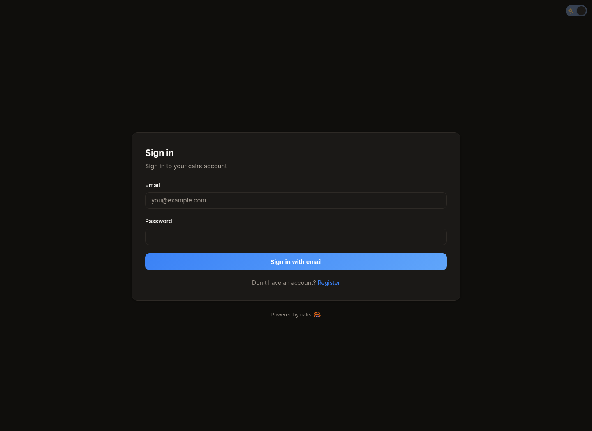
Local accounts
Registration
- The first user to register becomes admin
- Registration can be enabled/disabled from the admin dashboard or CLI
- Registration can be restricted to specific email domains
# Disable open registration
calrs config auth --registration false
# Restrict to a domain
calrs config auth --allowed-domains company.com
# Allow any domain
calrs config auth --allowed-domains any
Password hashing
Passwords are hashed with Argon2 (via the argon2 crate with password-hash). Plain-text passwords are never stored.
Sessions
- Server-side sessions stored in SQLite
- 30-day TTL
- Session ID in an HttpOnly cookie (not accessible to JavaScript)
- Sessions are invalidated on logout
Two-factor authentication (TOTP)
Local accounts can enable two-factor authentication in Profile & Settings > Manage two-factor authentication. Confirm your password, scan the QR code with an authenticator app (or enter the displayed key manually), then enter its six-digit code. Setup expires after 10 minutes. The authenticator uses SHA-1, six digits, and a 30-second interval; keep the server and phone clocks in sync.
Save the ten recovery codes displayed after setup. Each code can replace an authenticator code once, and the codes are not displayed again. You can generate a replacement set in the same settings page using your password and a valid authenticator or recovery code. This invalidates all previous recovery codes.
Once enabled, local login requires your password followed by an authenticator or recovery code. A used authenticator code cannot be used again, including for a settings change; wait for the app’s next code.
After ten wrong codes in a row, the account has to wait 15 minutes before each further try, and the wait doubles after every further ten wrong codes, up to a day. A correct code starts the count over. The limit is per account, so starting a new login or changing networks does not reset it. Recovery codes are never held back by it, so if someone who knows your password keeps entering wrong codes, you can still sign in with a recovery code; then change your password. Every wrong code is logged with the account and the client address, so an administrator can see a guessing attempt in the server log.
Enabling MFA, disabling it, or replacing recovery codes signs out your other sessions. Ordinary profile, authentication, SMTP, and password saves preserve MFA configuration. Administrators cannot change another user’s MFA while impersonating them.
Requiring MFA
In Admin > Two-factor authentication, set the local account policy to Required. Local administrators must enroll first and confirm policy changes with their password and a code. OIDC administrators authenticate through their identity provider instead, and change the policy without signing in again, so their account’s protection at the identity provider is what guards it.
Requiring MFA invalidates existing local sessions that have not passed MFA. Local users without MFA must enroll at their next login, including newly registered users, before they can access the dashboard. Users cannot disable MFA while it is required. Switching the policy back to Optional preserves users’ existing MFA settings. OIDC logins are unaffected: enforce MFA at the identity provider for SSO accounts.
Required enrollment happens at login, so the first person to log in with an account’s password sets up its authenticator. Require MFA before handing out passwords, or have each user enroll while the policy is still optional.
An account that has set up local MFA is not linked to single sign-on
automatically when an identity provider asserts the same email address, since
that would replace its local MFA with the provider’s. Run calrs user reset-mfa
first if the account should move to SSO.
Lost authenticator and recovery codes
A server operator can reset a local user’s MFA:
calrs user reset-mfa alice@example.com
Use the same data directory as the server (--data-dir or CALRS_DATA_DIR).
This removes the user’s authenticator and recovery codes and revokes their
sessions and pending login challenges. It does not change their password or the
instance policy. If MFA is required, the user must enroll again at next login.
Back up the instance’s secret.key together with the database: TOTP secrets use
the same encryption key as other stored credentials.
User management (CLI)
calrs user create --email alice@example.com --name "Alice" --admin
calrs user list
calrs user set-password alice@example.com
calrs user promote alice@example.com # → admin
calrs user demote alice@example.com # → user
calrs user disable alice@example.com
calrs user enable alice@example.com
OIDC / SSO
calrs supports OpenID Connect for single sign-on, tested with Keycloak and compatible with any OIDC provider (Authentik, Auth0, etc.).
Using Authentik? See the dedicated Authentik (OIDC SSO) page — it covers the full setup plus the
email_verifiedclaim gotcha introduced in Authentik 2025.10 that otherwise blocks every login.
Features
- Authorization code flow with PKCE — no client secret stored in the browser
- Auto-discovery — reads
.well-known/openid-configurationfrom the issuer URL - User linking by email — first-time linking requires the provider to assert a verified email. An account already linked to another OIDC subject cannot be claimed through that email, and an account with local MFA is not automatically linked
- Auto-registration — new users with a verified email are created on first OIDC login when enabled; returning users are identified by their stored OIDC subject
- Group sync — groups from the
groupsJWT claim are synced on each login and can be linked to teams
Configuration
calrs config oidc \
--issuer-url https://keycloak.example.com/realms/your-realm \
--client-id calrs \
--client-secret YOUR_CLIENT_SECRET \
--enabled true \
--auto-register true
Or from the Admin dashboard > OIDC section.
Keycloak setup
- Create a new OpenID Connect client:
- Client ID:
calrs - Client authentication: ON (confidential)
- Valid redirect URIs:
https://your-calrs-host/auth/oidc/callback - Web origins:
https://your-calrs-host
- Client ID:
- Copy the Client secret from the Credentials tab
- Set
CALRS_BASE_URLto your public URL before starting the server
The login page will show a “Sign in with SSO” button when OIDC is enabled.
User roles
| Role | Capabilities |
|---|---|
user | Manage own event types, calendar sources, bookings |
team admin | Everything above + manage team event types and team members |
admin | Everything above + user management, auth settings, OIDC config, SMTP config |
The first registered user is automatically promoted to admin.
Connected applications
Calendar OAuth credentials connect Google and Microsoft calendars; they are separate from OIDC sign-in. calrs also acts as an OAuth authorization server for MCP and the REST API. Review and revoke those grants under Connected apps. Personal API tokens have their own settings page and scopes.
Email notifications (SMTP)
SMTP configuration is required for booking confirmation emails. Without it, bookings still work but no emails are sent.
calrs config smtp \
--host smtp.example.com \
--port 587 \
--username calrs@example.com \
--from-email calrs@example.com \
--from-name "calrs"
# Test the configuration
calrs config smtp-test you@example.com
# View current config
calrs config show
Or configure from Admin > Email and SMS > SMTP. Environment variables override stored SMTP settings; see SMTP configuration.
MCP integration
calrs exposes a Model Context Protocol server
at /mcp, using Streamable HTTP. It runs inside calrs serve, in the same
binary and process as the web application.
Connect
- In your MCP client, add a remote Streamable HTTP server with the URL
https://your-calrs-host/mcp. - Choose OAuth authentication (or let the client discover it automatically).
- Sign in using your normal calrs password or your existing SSO provider.
- Review the application name, callback address and permissions, then approve.
There is no API token to copy, client secret to create, or new setting to enable. The client registers itself and manages its tokens. Use a client supporting OAuth discovery, dynamic client registration, and S256 PKCE. Clients supporting only manually configured credentials or Client ID Metadata Documents cannot connect automatically to this implementation.
The server uses the existing public base URL (CALRS_BASE_URL, or the saved
Base URL setting), just like email links and SSO. Production deployments should
already have this set to their public HTTPS origin. Without it, discovery uses
http://localhost:3000 for development. Custom local ports use the same existing
Base URL setting. Deploy at the origin root, as with the web application.
The endpoint is intended for native and server-side MCP clients. Cross-origin
browser JavaScript is not enabled: supplied Origin headers must match the calrs
origin. Reverse proxies must forward Authorization and MCP-Protocol-Version.
Tools
list_event_types
Arguments: {} initially, then {"cursor":"<next_cursor>"} for subsequent pages.
Returns enabled event types the connected user can distribute:
- Personal event types they own.
- Team event types they manage as a team admin.
- Internal event types the booking directory offers them, which any authenticated colleague can distribute.
Global administrators get no extra reach here: an admin’s integration sees and distributes only what the admin owns or manages as a team admin, plus the directory’s internal types, like the busy-time tool, which reads only the admin’s own calendar. The dashboard keeps the admin’s full access.
Each item has id, slug, title, duration_min, visibility, and team_id.
Use the ID, not the slug, when creating an invite. Slugs can be shared by
different users or teams. Follow next_cursor until it is null; permission
filtering can produce a short or empty page that still has a next cursor.
create_invite_link
Arguments:
{"event_type_id":"<id from list_event_types>","expires_days":30}
Example result:
{
"url": "https://cal.example/u/alice/intro?invite=<token>",
"expires_at": "2026-10-23T12:00:00Z",
"max_uses": 1
}
For internal and private events, expires_days accepts 7, 14, 30, or 0
(never), matching the UI. Omit it to default to seven days. Never-expiring
invites return expires_at: null. Each link can be used for one booking. Guests
enter their own name and email. Team links use /team/{team}/{event}?invite=....
The tool creates the same invitation records as the dashboard quick-link action;
it sends no email and creates no booking. You can manage the resulting internal
and private invites on the dashboard’s invite-management page.
Internal events are available to any authenticated user. Private and public
events require owner or team-admin permissions. Disabled events
are rejected. Public events return their ordinary reusable booking URL, with
expires_at: null and max_uses: null, without inserting an invitation record;
expires_days does not affect these public URLs.
For public events belonging to a private team, the URL includes that team’s
existing reusable access token. Generating a link does not change visibility.
Each call for an internal/private event creates a new link. Avoid automatically
repeating a successful call. Link requests are limited to ten attempts per user
per five minutes, tool calls to 120 per user per minute, and other MCP requests
(initialize, ping, tools/list) to 600 per user per minute (HTTP 429
beyond).
Example request after MCP initialization:
{
"jsonrpc": "2.0",
"id": 2,
"method": "tools/call",
"params": {
"name": "create_invite_link",
"arguments": {"event_type_id": "<event-type-id>"}
}
}
Successful tool results include both JSON text in content and the object in
structuredContent. Permission/argument/database failures are tool results with
isError: true; missing OAuth scope produces HTTP 403 with a scope challenge.
get_calendar_blocks
Arguments:
{"start":"2026-10-19T00:00:00Z","end":"2026-10-20T00:00:00Z"}
Both times must be RFC3339 timestamps with a timezone offset. The end is exclusive and must be after the start, with a maximum range of 31 days.
The tool returns blocks (merged, clipped UTC intervals), cached: true, and
sources with id, last_synced, and sync_failed for the user’s enabled
calendar sources. It uses the same calendar/recurrence and booking calculations
as availability, including pending bookings that hold their slot. Transparent
and cancelled calendar events do not block time.
This reads only the connected user’s busy times, even when that user is an administrator. Event titles, descriptions, attendees and credentials are not returned. The tool reads the current sync cache without contacting remote calendars; inspect source freshness/failures before relying on it. A database failure is reported as an error, not as a free calendar.
These are busy intervals, not bookable slots: working hours, per-event-type buffers, notice periods, shared resources, and team scheduling rules still apply on the booking page.
What the model receives
The tools are read-only, except create_invite_link, which creates a
single-use invitation (or returns a public booking URL) and nothing else: no
tool books, cancels, reschedules or emails anyone. What they return reaches the
AI model as text, including event type titles that colleagues wrote (their
internal meetings appear in list_event_types). Treat that text as untrusted
input: a title can carry instructions aimed at the model (prompt injection).
The worst such a title can obtain is what the tools allow, listing event types,
reading your busy times and creating invite links in your name, but clients
that also hold other tools (email, files, the web) should ask before acting on
what a calrs result says.
OAuth behavior
The browser approval page lists the requested scopes:
| Scope | Tool |
|---|---|
event-types:read | list_event_types |
calendar:read | get_calendar_blocks |
invites:write | create_invite_link |
Clients may request a subset; omitting scope requests all three. Authorization
permits only the listed scopes. On refresh, scope order does not matter. A
narrower request limits the new access token, while the grant and replacement
refresh token retain their original permissions. Omitting scope on refresh uses
the original grant permissions. Existing access tokens keep their own scopes.
Authorization
and token requests must include resource=<public-base-url>/mcp. Public clients
use token_endpoint_auth_method=none, authorization code with S256 PKCE, and
a registered HTTPS or loopback HTTP callback URI (ASCII only). The callback of
an authorization must equal a registered one as a parsed URL (so
https://app.example and https://app.example/ are the same, the path and
query are exact); a loopback callback may use any port (RFC 8252). Registrations
asking for other grant types too (VS Code lists the device flow) get the two
supported ones back.
Access tokens last at most one hour. Refresh tokens rotate on each exchange and expire 30 days after approval; reconnect then. Clients must serialize refreshes and save the replacement token: replay of a spent refresh token revokes the whole grant. Tokens and codes are stored as SHA-256 hashes. Authorization codes are single use and expire after two minutes. Disabled users lose access immediately, and permissions are checked again on every tool call. Admin impersonation does not change the identity granting OAuth access.
Grants follow the same rules as browser sessions:
- Approving requires a fully signed-in session. With local two-factor authentication enrolled, or required by the admin, that means the code was entered; a login that stops at the code prompt resumes the approval after it.
- A grant made before the admin required two-factor authentication, by a local account that had not passed it, is deleted with its tokens when the requirement is turned on, as that account’s sessions are. Turning the requirement off again does not bring it back.
- Everything that signs a user out of every session also deletes their grants
and tokens: suspending the account,
calrs user set-password,calrs user reset-mfa, enrolling, disabling or regenerating two-factor authentication, and linking the account to SSO. Re-enabling a suspended account does not bring old tokens back; the client has to be approved again.
The approval page cannot be framed (frame-ancestors 'none', X-Frame-Options: DENY), its form is CSRF protected, and it shows the callback address the code
will be sent to. Client names with control, bidirectional or invisible characters
are refused at registration. The callback is shown as the browser will follow
it (parsed: a backslash, a percent-encoded or a numeric host are written out),
with its host on a line of its own.
Clients can disconnect using POST /oauth/revoke with form fields client_id
and token (access or refresh token). This revokes the whole grant. Logging out
of the browser does not revoke an integration’s independent grant.
Users see their grants under Profile & Settings → Connected apps
(/dashboard/settings/apps): the application name, the callback it was
approved for, the permissions in plain words, the day it was approved and the
day it was last used. Revoke deletes
the grant with its tokens at once. Admins see, in the action menu of a user in the
admin panel, how many applications that user has connected, with an action that
revokes all of them.
The OAuth endpoints are rate limited per client address (the rightmost
X-Forwarded-For value, as for bookings; an IPv6 address counts by its /64):
client registration 30 requests per 15 minutes, authorization, token exchanges
and revocations 60 requests per 5 minutes each. One address cannot hold more
than 50 clients registered in the last 30 days that nobody approved. Over a
limit they answer HTTP 429 with {"error":"temporarily_unavailable"}.
The client address follows the trusted proxy
rule: X-Forwarded-For is believed only from a trusted proxy, otherwise the
connection’s own address is used. A trusted proxy that sends no
X-Forwarded-For makes every request look like the proxy: the rate limits then
apply to everyone together, and the per-address client cap is not applied at
all (it would let one registrant lock everyone out).
A client nobody approved is deleted after 30 days, so a user who denied, or gave up during login or two-factor setup, can retry with the same client. A client once approved is kept for 180 days after its last approval, even when its grant was revoked or expired, so the MCP client can simply authorize again. At most 10,000 clients are registered: at that cap the oldest client in either of those deletable states makes room, and registration is refused only when no client can be removed. An authorization a signed-in user is looking at keeps its client.
Discovery and endpoints:
| Endpoint | Purpose |
|---|---|
/.well-known/oauth-protected-resource/mcp | Resource metadata (RFC 9728; the 401 challenge names it, and the root well-known path is not served since it would describe a different resource) |
/.well-known/oauth-authorization-server | OAuth server metadata |
POST /oauth/register | Automatic public client registration |
GET /oauth/authorize | Begin browser authorization |
GET/POST /oauth/consent | Login continuation and explicit approval |
POST /oauth/token | Code exchange and refresh |
POST /oauth/revoke | Revoke a grant |
The OAuth server is implemented separately from MCP. It serves two resources:
/mcp and the REST API (/api/v1, with its own scopes). A grant
is bound to one resource, so a token for one never opens the other.
Transport details
- Supports protocol versions
2025-11-25,2025-06-18, and2025-03-26. - POST one JSON-RPC message to
/mcp, withContent-Type: application/json,Accept: application/json, text/event-stream, andAuthorization: Bearer .... - Send the negotiated
MCP-Protocol-Versionon subsequent requests. - Responses use JSON. Notifications receive an empty HTTP 202 response.
- Stateless: no
MCP-Session-Id, server-initiated requests, or background SSE stream. Authenticated GET and DELETE return 405, as permitted by Streamable HTTP. - Request bodies are bounded to 64 KiB (16 KiB for OAuth endpoints).
- No new runtime dependencies or MCP SDK. Stdio and the older HTTP+SSE transport are not included.
Tests
cargo test web::tests::oauth
cargo test web::tests::mcp
cargo test web::tests::invites
cargo test i18n::
The HTTP integration tests cover discovery, consent/login, PKCE and replay, refresh rotation/concurrency, revocation, expiry, user and scope isolation, protocol errors, pagination, timezone-aware busy intervals, database failures, and generated links opening the existing booking flow.
REST API
calrs has a small JSON API under /api/v1 for integrations: list your
event types, read their bookable times, read the bookings you host, and book,
cancel or ask for a new time on a guest’s behalf. It runs inside
calrs serve; there is nothing to install or enable.
The API is deliberately small. Everything it does, the dashboard or the booking page already does, through the same code: a booking made through the API is checked, stored, emailed, written to calendars and texted exactly like one made on the booking page.
OpenAPI document and interactive reference
/api/v1/openapi.json: the OpenAPI 3.1 description of the API, generated by calrs from its own handlers, so it always matches the version you run. Every operation, its parameters and request body, the answer of each status with the error codes it can carry, the headers, and the two security schemes with the scope each operation needs. Itsserversentry and OAuth URLs are your base URL (CALRS_BASE_URL). It is public (it describes the API and holds no data): point a client generator or an API tool at it./api/docs: an interactive reference built from that document, for signed-in users (also linked from Profile & Settings → API tokens). It is Swagger UI, shipped inside the calrs binary: the page loads nothing from another site. To try a request, choose Authorize, paste a personal access token intopersonalAccessToken, then Try it out on an operation. The page never sends your session cookie (the API would ignore it anyway), and the token stays in the page’s memory until you leave it. The requests are real:POST /bookingsbooks, and emails the guest. Authorize offers the personal token only: the page cannot complete the OAuth flow, so it hides theoauth2scheme, which the JSON document still describes for applications.
Authentication
Every request carries a Bearer token:
Authorization: Bearer <token>
Cookies never authenticate the API, so a page you visit cannot use your
signed-in session to call it (there is no CSRF to defend against). Requests
from a browser page of another origin (an Origin header that is not the
calrs origin) are refused, and the API sends no CORS headers.
There are two kinds of token.
Personal access tokens
For your own scripts. Create one at Profile & Settings → API tokens
(/dashboard/settings/api-tokens): give it a name, choose its permissions and
when it expires (7, 30, 90 or 365 days, or never). The token is shown once,
when it is created; calrs stores only its SHA-256 hash. It looks like
calrs_pat_ followed by 43 characters. The page lists your tokens (name,
the first characters, permissions, creation, expiry, last use) with a
Revoke button. A user holds at most 20.
By default only administrators can use the REST API, with a personal token
or an OAuth application: both read guest names, addresses and notes, so
letting every user pull them programmatically is the operator’s call.
Admin panel → Sign-in and security → API tokens → Let all users use the REST API opens it
to everyone. Turning it off again stops the personal tokens and the API grants
of users who are not administrators at once (they work again if it is turned
back on), and they cannot approve a new API application meanwhile (the
consent answers access_denied); an administrator who is demoted loses the
use of theirs the same way. MCP clients are not affected by the switch.
OAuth applications
For third-party applications acting for many users, calrs’s OAuth server (the one MCP clients use, see MCP integration) issues tokens for the API as a second resource:
- resource:
<base-url>/api/v1(metadata at/.well-known/oauth-protected-resource/api/v1; the 401 challenge names it). - scopes: the four below. Omitting
scoperequests all four.
Registration, consent, PKCE, token lifetimes (one-hour access tokens, rotating
refresh tokens, 30-day grants) and revocation work as described for MCP. A
grant is bound to its resource: an MCP token does not open the API, an API
token does not open /mcp, and the scopes of one resource cannot be requested
for the other. When the API is closed to a user, the consent page says so and
offers no Allow button. API grants appear under Profile & Settings → Connected apps
with their permissions, and are revoked there.
The rules both follow
- A token acts as its user, and the user is checked again on every request: a disabled account is refused at once.
- Two-factor authentication: a token is worth what the session that made it was worth. When the admin requires MFA, a token created (or a grant approved) by a local account from a session that had not passed it stops working, as that session does.
- Whatever signs a user out everywhere also deletes their tokens: suspending
the account,
calrs user set-password,calrs user reset-mfa, enrolling, disabling or regenerating two-factor authentication, linking to SSO. Re-enabling a suspended account brings no token back. - The admin panel’s per-user Revoke connected apps also deletes the user’s API tokens, and its count includes them.
- An admin impersonating a user cannot create or revoke that user’s tokens.
Scopes
| Scope | Allows |
|---|---|
event-types:read | GET /event-types, GET /event-types/{id} |
slots:read | GET /event-types/{id}/slots |
bookings:read | GET /bookings, GET /bookings/{id} |
bookings:write | POST /bookings, POST /bookings/{id}/cancel, POST /bookings/{id}/request-reschedule |
A missing scope answers 403 with insufficient_scope, and a
WWW-Authenticate header naming the scope needed.
Who can see and do what
The API gives a user no more than the dashboard does, and an administrator no more than any other user: like MCP, there is no global admin bypass.
- Event types you manage: the personal ones you own, and the team ones of
teams you administer. Internal event types the booking directory offers you
are listed too, read-only (
"manageable": false): no slots, no bookings. - Slots and booking for a guest: event types you manage.
- Bookings you host: the bookings of event types you own, the bookings a round-robin team assigned to you, collective bookings of your team (unless you are excluded from that event type), and bookings you claimed as a watcher. That is the rule of host notes, which these readers may see.
- Cancel and request a reschedule: as on the dashboard, the owner of
the event type. Another host gets 403 when the token can read bookings; a
token with
bookings:writealone gets the same 404 as for a booking that does not exist.
Anything else answers 404, whether it exists or not.
Never returned: credentials, the booking’s cancel, reschedule or approval tokens, other users’ data, and anything from your calendars beyond what the slot computation makes of it (no event titles, no calendar names).
Conventions
- JSON only. Request bodies need
Content-Type: application/json(415 otherwise) and are limited to 16 KiB, 1.5 MiB forPOST /bookings, which can carry long answers (413). Unknown fields and unknown query parameters are refused (400). - Times are RFC 3339. calrs answers in UTC (
2026-11-10T08:00:00Z). - Every answer carries
Cache-Control: no-store. - Lists are paged with an opaque cursor: pass
next_cursorback ascursoruntil it isnull. A page can be short, even empty, and still have a next cursor (permission and time filters run after the page is read). - Errors always have this shape:
{"error": {"code": "slot_unavailable", "message": "This slot is no longer available."}}
code is stable; message is English text for people and may change.
| Status | Codes |
|---|---|
| 400 | invalid_request, invalid_json, invalid_start, invalid_timezone, invalid_phone, invalid_attendees, invalid_range, invalid_cursor, invalid_idempotency_key |
| 401 | unauthorized |
| 403 | insufficient_scope, forbidden, origin_not_allowed |
| 404 | not_found |
| 405 | method_not_allowed |
| 409 | slot_unavailable, limit_reached, booking_not_active, no_bookable_dates, reschedule_already_requested, resend_too_soon, no_reschedule_pending, idempotency_in_progress |
| 413 | payload_too_large |
| 415 | unsupported_media_type |
| 422 | too_soon, outside_booking_window, booking_refused, too_many_attendees, idempotency_key_reused |
| 429 | rate_limited (with Retry-After), daily_limit_reached |
| 500 | internal_error |
Rate limits
- 300 requests per minute per token (per OAuth grant, or per personal token).
- On top of that, slot reads and every
POST: 60 per 5 minutes per user, shared by all of the user’s tokens. - Bookings created through the API: 50 per user per 24 hours (429
daily_limit_reached; a place is taken before the booking is made, so concurrent requests cannot pass the cap, and given back when the booking is refused), each with at most 10 additional attendees whatever the event type allows on its booking page (422too_many_attendees). Every booking emails the guest, the attendees and the hosts from the instance, so the API cannot be used to send mail without bound.
A request without a token gets 401 with WWW-Authenticate: Bearer resource_metadata="...", scope="..." and no error code (RFC 6750 section
3.1); an invalid or expired token adds error="invalid_token".
Endpoints
GET /api/v1/event-types
Query: cursor (optional).
{
"event_types": [
{"id": "6c1e4f0a-...", "slug": "intro", "title": "Intro call",
"duration_min": 30, "visibility": "public", "team_id": null,
"manageable": true}
],
"next_cursor": null
}
GET /api/v1/event-types/{id}
{
"event_type": {
"id": "6c1e4f0a-...", "slug": "intro", "title": "Intro call",
"description": "A first call.", "duration_min": 30,
"visibility": "public", "team_id": null, "manageable": true,
"requires_confirmation": false, "location_type": "link",
"timezone": "Europe/Paris", "scheduling_mode": null,
"max_additional_guests": 2, "phone": "off",
"questions": [
{"key": "company", "kind": "short_text", "label": "Company",
"help": null, "required": true, "options": [], "consent": false,
"link_url": null, "in_calendar": true},
{"key": "topics", "kind": "multiple_choice", "label": "Topics",
"help": null, "required": false,
"options": [{"id": "o1", "label": "Tax"}, {"id": "o2", "label": "Accounting"}],
"consent": false, "link_url": null, "in_calendar": true},
{"key": "privacy", "kind": "checkbox",
"label": "I agree to the privacy policy", "help": null,
"required": true, "options": [], "consent": true,
"link_url": "https://example.com/privacy", "in_calendar": false}
]
}
}
scheduling_mode is round_robin or collective for a team event type.
phone says whether a booking asks for the guest’s phone number (off,
optional, required). The location’s value (a meeting link, an address)
is not returned here. questions are the event type’s
booking questions, in form order, with the key
and option ids that POST /bookings takes in answers; null when you do
not manage the event type (only a manager can book it).
GET /api/v1/event-types/{id}/slots
Query: from and to (dates, YYYY-MM-DD, inclusive, at most 31 days),
timezone (IANA name, default the event type’s). The days are the guest’s
days in that timezone.
The slots are computed by the booking page’s own engine, after the same on-demand calendar sync: weekly hours and date overrides, minimum notice, buffers, the booking horizon and bookable dates, frequency limits, time off, synced calendar events and bookings (pending requests that hold their slot included), shared resources, and for a team event type its members by scheduling mode (any member free for round robin, all for collective).
GET /api/v1/event-types/6c1e4f0a-.../slots?from=2026-11-10&to=2026-11-10&timezone=Europe/Paris
{
"event_type_id": "6c1e4f0a-...",
"timezone": "Europe/Paris",
"from": "2026-11-10",
"to": "2026-11-10",
"slots": [
{"start": "2026-11-10T08:00:00Z", "end": "2026-11-10T08:30:00Z",
"date": "2026-11-10", "time": "09:00"}
]
}
date and time are the slot in the requested timezone; pass start back
to book it. Like the booking page, the list leaves out wall times that do not
name a single instant (the hour repeated when clocks go back), which the
booking check would refuse.
GET /api/v1/bookings
Query: cursor, status (pending, confirmed, cancelled, declined),
from and to (RFC 3339; bookings starting at or after from, before to).
Ordered by start time, in UTC. Bookings made before calrs 1.20 store their
time as a wall clock in the event type’s timezone; they are filtered exactly
but sort among the others by that wall clock, so on an instance that has
them the order near those rows can be off by the timezone’s offset.
{
"bookings": [
{
"id": "1f6a...", "uid": "0b7d2e0e-...@calrs", "status": "confirmed",
"start": "2026-11-10T08:00:00Z", "end": "2026-11-10T08:30:00Z",
"created_at": "2026-11-07T09:12:44Z",
"event_type": {"id": "6c1e4f0a-...", "slug": "intro", "title": "Intro call", "team_id": null},
"guest": {"name": "Jeanne Martin", "email": "jeanne@example.com",
"phone": null, "timezone": "Europe/Paris", "language": "fr",
"notes": "About the renewal"},
"answers": [{"key": "company", "label": "Company", "kind": "short_text",
"value": "Martin SARL", "option_ids": [], "consent": false,
"link_url": null, "answered_at": "2026-11-07T09:12:44Z",
"attested_by": null}],
"attendees": ["paul@example.com"],
"location": {"type": "link", "value": "https://meet.example.com/abc"},
"host_notes": "Prefers mornings."
}
],
"next_cursor": null
}
uid is the iCalendar UID of the invitation (the one webhooks carry).
guest.phone is null when the event type no longer asks for a phone number
(its phone setting is off), even if the guest gave one before, as in
emails, webhooks and calendar events.
host_notes are the hosts’ own notes on the booking. answers are the
guest’s answers to the event type’s booking questions,
in the shape webhooks use; match choices on option_ids, value is for
display.
GET /api/v1/bookings/{id}
{"booking": {...}}, the same object.
POST /api/v1/bookings
Books an event type you manage for a guest.
{
"event_type_id": "6c1e4f0a-...",
"start": "2026-11-10T08:00:00Z",
"timezone": "Europe/Paris",
"name": "Jeanne Martin",
"email": "jeanne@example.com",
"notes": "About the renewal",
"phone": "+33 6 12 34 56 78",
"attendees": ["paul@example.com"],
"language": "fr",
"answers": {
"company": "Martin SARL",
"topics": ["o1", "o2"],
"privacy": true
}
}
startmust be one of the event type’s slots (asGET .../slotslists them);timezoneis the guest’s (default the event type’s), stored with the booking and used in the guest’s emails.notes,phone,attendeesandlanguageare optional.phonefollows the event type’s phone setting (required, optional, or ignored) and is stored in E.164.attendeesis limited by the event type’s additional guests setting.languageis the language of the guest’s emails and SMS; by default the language you set in calrs, else English. When the instance addresses German speakers formally (Admin panel, German form of address),debecomesde-formal, as on the booking page.- No invite is needed for internal or private event types: you manage them. None is used up either.
answerscarries the guest’s answers to the event type’s booking questions, keyed by questionkey: a string forshort_text(at most 500 characters) andlong_text(at most 5000), the optionidforsingle_choice, an array of optionids formultiple_choice,trueorfalseforcheckbox. They are read by the booking page’s own rules and stored the same way, as the guest would have read the questions, so the hosts’ emails and calendar event (where the question allows it), the guest’s confirmation email and the webhooks show them as for a booking from the page. Whenanswersis sent, every required question must be answered and a required checkbox (a consent) must betrue. A question left out stores nothing, since the guest was never asked it (on the booking page an unticked box is stored as “no”). An unknown key, a key given twice, an option the question does not offer, an answer of the wrong type or over its length answers 400invalid_request, naming the key.- A consent sent as
trueis your attestation, not the guest’s tick. The answer row, which is the consent record, stores who recorded it: your user id and name, and the credential (viaapi_tokenwith the personal access token’s id, oroauthwith the OAuth application’s client id). Reads and webhooks return it asattested_by({"user_id", "name", "via", "credential_id"},nullon every answer the guest gave). Hosts see such a consent as “Agreed, recorded by” you on the bookings and notes pages and in their emails; the guest’s emails say it was recorded on their behalf by you, never “You agreed”. Only sendtruewhen the guest did agree, to you. The record stays with the booking for as long as its answers do, and is not affected by the 24-hour purge of the API’s own logs. - Without
answers, no question is asked, even required ones: you are booking for the guest, as withcalrs booking create, and the booking has no answers. This is how integrations written before answers keep working. notesis stored as given either way, whatever the event type’s notes field setting.
The booking goes through the booking page’s own code: the same validation, a
re-check of the time against the slot engine and of the shared resources
under the booking lock, the same pending-or-confirmed decision (an event type
that requires approval creates a pending request, and the host is asked to
approve it), the same emails to the guest, the attendees and the hosts, the
same calendar write-back, meeting link, watcher notifications, SMS and
webhooks (booking.created or booking.requested). Cancel
queues booking.cancelled (by the host) or booking.declined, as the
dashboard does; a reschedule request queues nothing until the guest picks
a new time.
201 Created. The answers of the three writes carry the whole booking only
when the token also has bookings:read; a token with bookings:write alone
gets {"booking": {"id", "status"}}.
{"booking": {"id": "1f6a...", "status": "confirmed", "...": "..."}}
The booking object is the one GET /bookings/{id} returns, without
host_notes; keep its id to follow the booking. Reads follow the host
rule: a team admin who books a round-robin event type assigned to another
member, and is neither its owner nor that member, is not one of the booking’s
hosts, so GET /bookings/{id} and the list answer 404 and leave it out for
them afterwards (the webhooks of the event type still report it).
Idempotency-Key: send a key (1 to 255 visible ASCII characters) to make
retries safe. The first answer with that key is kept 24 hours, per user, and
replayed for a retry with the same body, answers included (with
Idempotency-Replayed: true);
the same key with another body answers 422 idempotency_key_reused, and a
retry while the first request still runs 409 idempotency_in_progress.
Server errors are not kept, so the request can be retried with the key.
While the first request runs its key is leased and the lease renewed, so a
slow booking is never run twice; a lease left two minutes without renewal
(the server stopped) is released. A replay checks again that you may still
book the event type (else 404) and is shaped by the token’s scopes like any
answer. The kept answers contain the guest’s details; they are deleted after
24 hours, and with the user.
Refusals: 409 slot_unavailable (the time is not, or no longer, offered),
409 limit_reached (a booking frequency limit), 422 too_soon (inside the
minimum notice), 422 outside_booking_window, 400 for invalid input.
POST /api/v1/bookings/{id}/cancel
Body (optional): {"reason": "Double booked"}.
What the dashboard’s cancel button does: a confirmed booking is cancelled, a
pending request declined; the calendar copies and resource reservations are
deleted, the guest, the attendees and the host are emailed (with the reason),
the guest texted. Answers {"booking": {...}} with its new status. A booking
already ended answers 409 booking_not_active.
POST /api/v1/bookings/{id}/request-reschedule
Body: none, or {}.
What the dashboard’s reschedule button does: the guest gets a new link and the
“pick a new time” email, and the booking keeps its time until they choose
one. 409 no_bookable_dates when the event type has no bookable day left.
This is the only reschedule v1 offers, as on the dashboard: moving a booking
to a time you choose is not in v1. While the guest has not answered an
earlier request, another one is refused (409 reschedule_already_requested),
so no second link is made. To remind the guest, send {"resend": true}: the
same request is emailed again, with the same link, at most once an hour (409
resend_too_soon; 409 no_reschedule_pending when none is waiting). The
dashboard has the same Resend request button.
Example
TOKEN=calrs_pat_...
BASE=https://cal.example.com/api/v1
curl -s -H "Authorization: Bearer $TOKEN" "$BASE/event-types"
curl -s -H "Authorization: Bearer $TOKEN" \
"$BASE/event-types/$ET/slots?from=2026-11-10&to=2026-11-14&timezone=Europe/Paris"
curl -s -X POST -H "Authorization: Bearer $TOKEN" \
-H "Content-Type: application/json" -H "Idempotency-Key: crm-4711" \
-d '{"event_type_id":"'$ET'","start":"2026-11-10T08:00:00Z","timezone":"Europe/Paris","name":"Jeanne Martin","email":"jeanne@example.com"}' \
"$BASE/bookings"
Versioning
The version is in the path. Within v1, fields may be added to answers and new
endpoints may appear; nothing is removed or changes meaning. A change that
would break a client gets /api/v2.
Tests
cargo test web::tests::api
cargo test web::tests::api_doc
Authentik (OIDC SSO)
calrs speaks standard OpenID Connect (Authorization Code flow with PKCE), so it
integrates with Authentik out of the box. This page
walks through the full setup and — importantly — the one Authentik-specific
gotcha that will otherwise block every login with a generic
“Authentication failed” error: the email_verified claim.
A common deployment pairs OIDC login with calrs’s global EWS impersonation: users sign in through Authentik, and calrs uses their email to impersonate the matching Exchange mailbox. In that setup Authentik is the single source of identity and the email claim is the bridge to each user’s calendar — so getting these claims right matters.
Tested against Authentik 2025.12. The
email_verifiedbehaviour described below changed in 2025.10; on older Authentik versions you can skip that step.
1. Create the OAuth2/OpenID provider
In the Authentik admin interface: Applications → Providers → Create → OAuth2/OpenID Provider.
-
Authorization flow:
default-provider-authorization-explicit-consent(or the implicit-consent flow if you don’t want a consent screen). -
Client type: Confidential.
-
Client ID / Client Secret: note both — they go into calrs.
-
Redirect URIs (Strict): the callback is
/auth/oidc/callbackon your public calrs URL:https://rdv.example.com/auth/oidc/callbackThis must match
CALRS_BASE_URLexactly. A mismatch (wrong host, missing/auth/segment, http vs https) produces Authentik’s “Redirect URI Error”. -
Signing Key: pick a certificate. calrs validates the ID token signature via the provider’s JWKS, so the token must be signed.
-
Scopes: leave the default mappings for
openid,email, andprofileselected — these are exactly the three scopes calrs requests. (Theemailmapping is the one we adjust in step 4.)
2. Create the application
Applications → Create.
- Give it a Name and a Slug (e.g.
calrs). The slug becomes part of the issuer URL, so note it. - Bind it to the provider from step 1.
- Add the policy/group bindings that decide who may sign in.
Your issuer URL is then:
https://<authentik-host>/application/o/<app-slug>/
for example https://portal.example.com/application/o/calrs/. calrs
auto-discovers everything else from <issuer>/.well-known/openid-configuration,
so you only ever configure the issuer URL — not the individual endpoints.
3. Configure calrs
Set the public base URL before starting the server, then enable OIDC:
# CALRS_BASE_URL must be the public URL — it prefixes the redirect URI and
# email links. The default (http://localhost:3000) will not match Authentik.
export CALRS_BASE_URL=https://rdv.example.com
calrs config oidc \
--issuer-url https://portal.example.com/application/o/calrs/ \
--client-id <CLIENT_ID> \
--client-secret <CLIENT_SECRET> \
--enabled true \
--auto-register true
You can also do this from Admin → Sign-in and security → OIDC. Once enabled, the login page shows a “Sign in with SSO” button.
4. Fix email_verified (Authentik 2025.10+)
This is the step that trips most people up.
calrs only links or auto-creates an account when the IdP asserts that the user
owns the email address — i.e. the ID token contains email_verified: true. This
is a deliberate security gate: without it, anyone able to register at the IdP
with an arbitrary email could squat on or hijack a calrs account keyed on that
address. There is no toggle to disable it.
The catch: since Authentik 2025.10, the email scope returns
email_verified: false by default. Authentik has no universal way to know
whether an address is verified, so it stopped asserting true unconditionally.
Before 2025.10 the claim was always true.
With the default mapping you’ll see calrs reject the login:
WARN calrs::auth: OIDC auto-register refused: IdP did not assert email_verified=true
WARN calrs::auth: OIDC callback failed: account error
error=The identity provider has not verified your email address.
and the browser lands on a generic “Authentication failed” page.
Option A — assert email_verified for a trusted directory (recommended for EWS setups)
If your Authentik users are synced from a trusted source (Active Directory, LDAP, your Exchange directory) the addresses are real by construction, so it’s safe to assert them as verified:
- Customization → Property Mappings → Create → Scope Mapping
-
Name:
calrs email verified -
Scope name:
email(must be exactlyemailto replace the standard email scope) -
Expression:
return { "email": request.user.email, "email_verified": True, }
-
- Edit your OAuth2 provider → Advanced protocol settings → Scopes:
- remove
authentik default OAuth Mapping: OpenID 'email' - add your
calrs email verifiedmapping - leave
openidandprofileas they are
- remove
- Save and retry the SSO login.
Only do this when the directory is trusted. It marks every address as verified unconditionally, which is fine for a directory you control but not for an instance that allows open self-registration at the IdP.
Option B — reflect a real verification status
If accounts can self-register in Authentik, base the claim on a user attribute
instead of hard-coding true:
return {
"email": request.user.email,
"email_verified": bool(request.user.attributes.get("email_verified", False)),
}
Then set the email_verified: true attribute on users (or via a group) once
their address is actually verified.
Tying it together: EWS impersonation
calrs links OIDC identities to local users by email (it first matches on the
stable OIDC subject, then falls back to email). Combined with global EWS
impersonation, this gives a zero-touch onboarding flow:
- A user signs in through Authentik for the first time.
- calrs auto-registers them with the email from the (now verified)
emailclaim. - If global EWS impersonation has auto-provision enabled (Admin → Sign-in and security → Exchange), calrs immediately provisions a managed Exchange source for that user, impersonating their email — their calendar starts syncing with no manual source setup.
Domain mismatch
Impersonation targets the user’s email as their Exchange SMTP address. If the
address Authentik sends differs from the mailbox domain (e.g. Authentik issues
alice@example.com but the mailbox is alice@example.local), set the
Impersonation domain override in Admin → Sign-in and security → Exchange. calrs keeps the local part
and swaps the domain, so impersonation resolves to the real mailbox. Validate
this on one or two accounts before rolling out broadly.
Troubleshooting
| Symptom | Cause | Fix |
|---|---|---|
| Authentik shows “Redirect URI Error” | The redirect URI in the provider doesn’t match {CALRS_BASE_URL}/auth/oidc/callback | Set the provider redirect URI to exactly https://<host>/auth/oidc/callback and make sure CALRS_BASE_URL matches (host, scheme, and the /auth/ segment) |
“Authentication failed” after returning from Authentik; logs show email_verified=true not asserted | Authentik 2025.10+ returns email_verified: false by default | Apply step 4 |
| “An account with this email already exists … not verified” | A local account with that email exists, but email_verified is false so calrs won’t auto-link it | Same as above — assert email_verified: true |
| Login works but no calendar appears | Global EWS auto-provision is off, or the impersonation target domain is wrong | Enable auto-provision and/or set the impersonation domain override in Admin → Sign-in and security → Exchange |
| ID token signature / discovery errors | No signing key on the provider | Assign a certificate as the provider’s Signing Key |
See also: Authentication for the generic OIDC reference and local-account options.
Admin Dashboard
The admin dashboard is available at /dashboard/admin for users with the admin role.
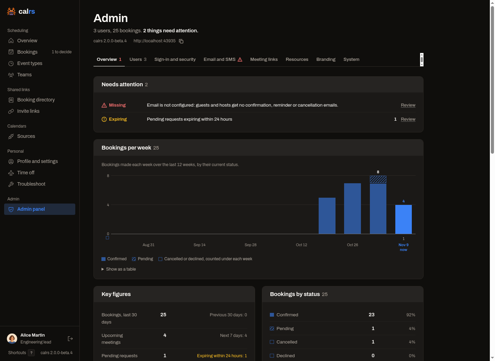
The panel is organized into Overview, Users, Sign-in and security, Email and SMS, Meeting links, Resources, Branding and System tabs. The overview summarizes booking activity, users, calendar health and items needing attention. The remaining tabs group the configuration described below.
User management
Lists all registered users with:
- Name, email, username
- Role (admin/user)
- Status (enabled/disabled)
- Teams and groups
Actions per user:
- Promote/Demote — toggle admin role
- Enable/Disable — control whether a user can log in or receive bookings
- Delete — permanently remove a user after confirmation; review the consequences shown before submitting
- Impersonate — view the dashboard as that user (for troubleshooting)
The server does the searching, filtering, sorting and paging, so the page only ever carries 25 rows: press Enter to search, and use Previous and Next under the table. Promoting, disabling or deleting a user brings you back to the same page of the list.
The Groups list below it works the same way: search by name (press Enter), 25 groups a page, and each group shows ten of its members, by weight then name, with its own Previous and Next for the rest. The two lists keep each other’s page as you move through either.
On an instance with more than 20,000 bookings, the booking figures of the overview (totals, the weekly chart and the 90-day rankings) are kept for a minute rather than recomputed on every visit; the chart’s note then says how many seconds old they are. User counts, calendar health and the attention list are always live. Smaller instances never cache them.
Impersonation
Admins can impersonate any user to troubleshoot their view:
- Click Impersonate next to a user in the admin panel
- You are redirected to the dashboard, viewing it as that user
- A yellow banner at the top shows who you’re impersonating
- Click Stop impersonating to return to your own view
Impersonation uses a separate calrs_impersonate cookie (24-hour TTL). The real admin session is preserved.
Availability troubleshoot
For each event type, the dashboard offers a Troubleshoot link that opens a visual timeline at /dashboard/troubleshoot?event_type={event_type_id}:
- Shows availability and conflicts for the selected date
- Displays why each slot is blocked (calendar event name, existing booking, buffer overlap)
- Helps debug availability issues when users report incorrect free/busy status
Authentication settings
- Registration — toggle open registration on/off
- Allowed domains — restrict registration to specific email domains (comma-separated) or allow any
OIDC configuration
- Enabled — toggle SSO login on/off
- Issuer URL — your OIDC provider’s base URL
- Client ID — the client ID registered with your provider
- Client secret — update the secret (current value is never displayed)
- Auto-register — automatically create users on first OIDC login
Google OAuth2
Admin → Sign-in and security → Google OAuth2 holds the instance-wide Google client ID and secret used when users connect Google Calendar. The same credentials are used to attach a Google Meet conference to a confirmed booking when an event type uses the Google Meet location. There is no extra Meet admin form. See Google Calendar.
Microsoft Calendar
The Microsoft 365 / Outlook.com calendar section of the Sign-in and security tab holds the instance-wide Microsoft Entra application client ID, client secret, and tenant used for delegated Microsoft Graph calendar access. Register the displayed callback as a Web redirect URI, paste the secret Value (not its ID), and track its expiry for rotation. Leaving the secret blank preserves its current encrypted value.
This connects Microsoft 365 and Outlook.com calendars; it does not configure calrs sign-in or Microsoft Exchange on-premises (EWS). Users connect and consent from Sources outside impersonation mode. See Microsoft Calendar for app registration, permissions, tenant choices, calendar selection, and verification.
Resources
The Resources card manages shared bookable resources (demo lab, meeting rooms): add a resource from its ICS feed URL, edit its optional CalDAV write-back settings and team allowlist, force a sync with Sync now, and verify write access with Test write. A failed feed sync is flagged here with the last error. See Shared Resources for details.
SMS settings
The SMS settings card configures the instance’s SMS gateway: pick Twilio, GatewayAPI, seven.io, or a generic webhook, and the form relabels its fields for that vendor. The same card holds the daily limit (in billed segments, test messages included), today’s messages, segments and cost, and the policy controlling whether non-admins may enable SMS on their own event types.
Test gateway sends a real message to a number you give it, or verifies the credentials for free when you leave the field empty and the gateway supports it.
SMS spends real money on a public form, so the card also warns when SMS is configured without a captcha. See SMS Notifications for the setup steps and for keeping the bill bounded.
Guest email footer
The Guest email footer card sets the default footer added to every email guests and additional attendees receive (never to hosts, nor to a team member who claimed the booking). It takes bold, italic and links, at most 500 characters, in one text for all languages. An event type with a footer of its own uses that instead; see Guest email footer.
The checkbox on the card lets every user write footers on their own event types. It is off by default: the footer goes out under this instance’s name, so only admins may write one until you turn it on.
Branding
The Branding tab holds the company logo, the link it points to, the favicon and the theme.
Choose Default, Nord, Dracula, Gruvbox, Solarized, Tokyo Night or Vates. Every preset has a light and dark palette; visitors can switch modes or follow their system preference. Custom lets you set the accent, hover, background, surface and text colors for your organization.
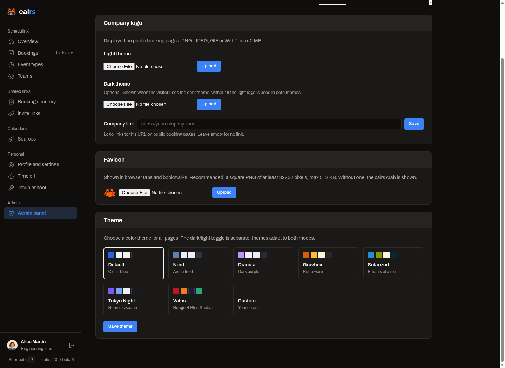
The company logo is shown at the top of the public booking pages. Upload a PNG, JPEG, GIF or WebP image of at most 2 MB; SVG is refused. A second, optional logo is used when the visitor’s page is in the dark theme, for a wordmark that would not read on a dark background. A light logo alone is shown in both themes; a dark logo alone is shown in the dark theme only, since a mark made for a dark background may not read on a light page. Each preview sits on the page background the instance theme gives public pages, light and dark, whatever theme your dashboard is in. A new logo shows to visitors on their next page view. Emails never carry the company logo.
SMTP configuration
Open Email and SMS > SMTP to configure the server, port, TLS mode, optional credentials and sender identity, then send a test email. Settings take effect without a restart. Passwords are encrypted; leaving the password blank keeps the existing value. The same configuration is available through calrs config smtp.
For containers and managed deployments, use environment variables:
CALRS_SMTP_HOST=smtp.example.com
CALRS_SMTP_PORT=587
CALRS_SMTP_TLS_MODE=starttls
CALRS_SMTP_USERNAME=calrs@example.com
CALRS_SMTP_PASSWORD=your-secret
CALRS_SMTP_FROM_EMAIL=calrs@example.com
CALRS_SMTP_FROM_NAME=Example Scheduling
Supply secrets through your deployment’s secret mechanism. CALRS_SMTP_HOST and CALRS_SMTP_FROM_EMAIL are required when using environment configuration. The environment block overrides the stored settings as a whole, and the form indicates that it is managed by the environment. starttls, implicit tls (typically port 465) and none for a trusted local relay are supported. See CLI Reference for unauthenticated relays and certificate limitations.
Without SMTP, bookings still work, but approval messages, reminders, invitations and failure alerts cannot be delivered by email. Confirmed bookings still offer an .ics download.
Integration policies
The admin panel controls whether ordinary users may use the REST API through personal tokens or OAuth, manage outgoing webhooks, enable SMS on their event types, or write guest email footers. These are separate policies, restricted to administrators by default. Enabling one does not grant another, or grant access to other users’ bookings.
Use REST API, MCP, Webhooks and SMS for their scopes, credentials and revocation behavior. The Sign-in and security tab also configures organization-wide Exchange calendars.
Meeting links
Configure the default Jitsi URL pattern or a meeting-provider webhook under the meeting settings. Event types choose a static link, generated Jitsi room, webhook-generated URL or Google Meet as their location. Google Meet uses the connected host’s Google Calendar credentials; it has no separate client configuration. See Locations.
Booking captcha
The optional Cap proof-of-work captcha protects booking submissions. Configure the Cap instance URL, site key and secret, then optionally provide the widget script and WASM URLs. Those asset URLs default to an external CDN when left unset: configure self-hosted URLs when you want the whole guest flow served from infrastructure you control. Changes apply without restarting calrs. This is separate from login and booking rate limits.
System settings
Set the public base URL, private-host allowlist and trusted proxies for your deployment. Environment variables take precedence and make the corresponding controls read-only. See Deployment and Security.
The site default first weekday affects calendar presentation, while each user and event type can override it. The German form-of-address policy selects informal or formal German for visitors whose browsers request German.
EWS Impersonation (Exchange)
calrs can connect to an on-premises Microsoft Exchange server (tested with
Exchange 2019) over EWS (Exchange Web Services). Instead of asking every
user for their mailbox credentials, you configure one service account that
holds the ApplicationImpersonation role, and calrs impersonates each user by
their email address to read their calendar.
This is global EWS impersonation: one Exchange server + one service account, with a “managed” calendar source auto-provisioned for every user. It pairs naturally with OIDC SSO: the user signs in, and calrs uses the email the IdP verified as the impersonation target, so a new user’s calendar starts syncing with zero manual setup.
A managed source keeps busy times only. For an event synced from a managed mailbox calrs stores its times, time zone, all-day flag, recurrence, status and transparency, and nothing about what the meeting is: no title, description, location or iCal text (a recurring event keeps only the start, exception dates and moved-occurrence ids its expansion needs). Calendar folder names are not stored either: a managed source’s calendars are called “Exchange calendar 1”, “Exchange calendar 2” and so on. The user’s own troubleshoot view shows those events as “Unavailable (your calendar)”, and an admin cannot read anyone’s mailbox content through calrs, impersonating the user included.
When global impersonation is disabled (the default), calrs behaves exactly as before: users add their own per-user EWS or CalDAV sources.
On-premises Exchange only. Exchange Online (Microsoft 365) is not covered: use Microsoft Calendar for its Graph integration.
1. Prepare the Exchange service account
Create a dedicated service account (e.g. svc-calrs@example.com) and grant it
the ApplicationImpersonation RBAC role from the Exchange Management Shell.
Choose one of the two options below; do not run both. Running option A and
then option B leaves the unscoped assignment in place, so the account can
still impersonate every mailbox in the organization.
Option A (recommended): only the mailboxes calrs should read. Create a management scope for those mailboxes and assign the role within it:
New-ManagementScope -Name "calrs-mailboxes" `
-RecipientRestrictionFilter "MemberOfGroup -eq 'CN=calrs-users,OU=Groups,DC=example,DC=com'"
New-ManagementRoleAssignment -Name "calrs-impersonation" `
-Role ApplicationImpersonation `
-User svc-calrs@example.com `
-CustomRecipientWriteScope "calrs-mailboxes"
Option B: every mailbox in the organization. Only if calrs should be able to reach all mailboxes:
New-ManagementRoleAssignment -Name "calrs-impersonation" `
-Role ApplicationImpersonation `
-User svc-calrs@example.com
If you already ran option B and want option A instead, remove the unscoped
assignment first (Get-ManagementRoleAssignment -Role ApplicationImpersonation -RoleAssignee svc-calrs@example.com, then Remove-ManagementRoleAssignment
on it).
Note your EWS endpoint URL, usually:
https://mail.example.com/EWS/Exchange.asmx
2. Configure calrs (Admin → Sign-in and security)
Go to the admin dashboard, Sign-in and security tab, Exchange card (organization-wide Exchange through impersonation). Fields:
| Field | Notes |
|---|---|
| Enabled | Master switch. When off, the feature is fully inert and per-user sources are used. |
| EWS URL | The endpoint, e.g. https://mail.example.com/EWS/Exchange.asmx. Must be https:// (the service account password goes out with every request; an http:// endpoint left in an older database leaves the feature off, except on the loopback interface for local testing). Validated on save: an invalid URL is rejected rather than silently stored. Enabling the feature without a URL, a service account and a password is refused too, with a message on the card. |
| Service account username | The impersonation account, e.g. svc-calrs@example.com. |
| Service account password | Encrypted at rest (AES-256-GCM, same scheme as CalDAV/OIDC secrets). Keep-current: leave blank on save to preserve the stored value, as long as the endpoint and the account stay the same. Saving a new endpoint or a new service account without typing the password clears the stored one (the card says so), so it is never sent to a server it was not typed for; the feature then idles until it is entered again. |
| Lock user sources | When on, non-admin users can no longer add their own calendar sources (CalDAV, EWS or Google): their Exchange calendar is managed centrally. Admins are exempt, and sources users added before stay until deleted. The Sources page shows an explanatory notice and hides the “Add” button. |
| Auto-provision | When on, a managed Exchange source is created for every enabled user whose address is trusted (see Who gets a mailbox): existing ones on save, then each new one as it appears. |
| Users’ domain and Mailbox domain | Optional override, both or neither. See Domain mismatch below. A leading @ is stripped automatically. |
There is also a “Provision now” button: it runs a one-shot batch that provisions a managed source for every enabled, trusted user immediately, regardless of the auto-provision toggle. Saving with auto-provision enabled does the same thing.
The card also lists addresses to confirm (enabled accounts in the allowed email domains whose address is not trusted yet), each with a Confirm button, and offers Remove managed sources and clear the service password (see Switching it off).
Who gets a mailbox
A managed source opens the mailbox its user’s address names, so calrs only
provisions an address it can trust (users.email_trusted):
- an account an admin created with
calrs user create; - an SSO (OIDC) account whose email the identity provider marks verified
(
email_verified). This is checked again at every login: when the IdP sendsemail_verified: false, or reports a new address it does not verify, the account is no longer trusted and its managed source is deleted on the spot, with its calendars and cached busy times. Many identity providers in front of Exchange 2019 (ADFS, Entra ID by default) never send the claim at all: then an address an admin confirmed stays trusted as long as it is unchanged (letter case aside), and a changed one is not trusted until it is confirmed again; - an account an admin confirmed by hand, with Confirm on the card or
calrs user trust-email <email>(which exits non-zero for an unknown address).
A locally self-registered account is never trusted on its own: local
sign-up does not verify that the person owns the address they type. It gets
no managed source from auto-provision, “Provision now” or a login, until an
admin confirms it. Registration also refuses an address that differs from an
existing one only in letter case (CEO@example.com when ceo@example.com
exists), since Exchange treats them as one mailbox.
Accounts that existed before this check was added start untrusted, and any managed source they had was removed by the upgrade. They stay untrusted until an admin confirms them (the card lists them), or, for SSO accounts, until a login where the identity provider marks the address verified.
One mailbox serves at most one user. Addresses are compared without regard to
(ASCII) letter case and surrounding spaces, and the impersonated mailbox is
stored lowercased. When a second user’s address maps to a mailbox another
user’s managed source already reads, the second user gets no source and the
status table shows the conflict, with one exception: an owner whose address
the identity provider verified takes the mailbox over from an account that is
only admin-confirmed (that account’s managed source is removed and the event
logged). An address that does not have exactly one @, or that holds a
non-ASCII character (Exchange 2019 has no SMTPUTF8), names no mailbox and is
never provisioned. The list of addresses to confirm shows the mailbox each
confirmation would open, and a confirmation covers exactly that address and
mailbox: if either changed since the page was shown (an SSO login brought a
new address, the override changed), nothing is confirmed and the card asks to
review the list again. calrs user trust-email confirms the stored address it
prints. When a new domain override changes the mailbox an
admin-confirmed address maps to, that address must be confirmed again (an
address the identity provider verified keeps its trust); the card says how
many.
“One mailbox, one user” holds for the exact address calrs impersonates. Exchange also resolves proxy addresses (aliases), so two calrs accounts whose addresses are two aliases of one mailbox would both read it: give users their mailbox’s primary SMTP address in calrs (and at the identity provider).
A suspended account keeps its managed source but is neither synced nor written to until it is enabled again.
3. How provisioning works
For each user, calrs inserts a single managed row into caldav_sources:
provider_type = 'ews',managed = 1,auth_type = 'basic'password_enc = NULL: the managed source carries no secret of its own; the sync path reads the live service-account credentials from the in-memory config
Provisioning is idempotent and race-safe: partial unique indexes allow only one managed EWS source per account and one per mailbox, so an OIDC login racing the admin’s “Provision now” can never create duplicates.
impersonate_email = <mailbox>: the user’s address, lowercased, after the domain override. The SOAP layer injects at:ExchangeImpersonationheader with this address on every request, and the user’s current address is checked against it before every sync or write.
Provisioning runs at four moments (all gated on auto-provision, except the explicit button and the confirmation), and only ever for trusted users:
- Admin save / Provision now: batch over all enabled, trusted users.
calrs user create: an account an admin creates.- OIDC login: new or returning user whose email the IdP marks verified, right after the account is linked or created. When that address changed at the IdP, the existing managed source follows it.
- Confirming an address on the card or with
calrs user trust-email.
Managed sources cannot be edited (their endpoint and credentials come from this card). Only an admin can remove one, with Remove in the per-user status table; auto-provision recreates it at the next save, confirmation or SSO login, so suspend the account to keep someone out.
Users keep the actions that are theirs on a managed source: sync it, test it, and choose which of its calendars their confirmed bookings are written to. Until they choose, the first sync points bookings at the mailbox’s default calendar, found through Exchange’s well-known calendar folder, since its name depends on the mailbox’s language (“Calendar”, “Calendrier”, …). If the server cannot name it, a mailbox with a single calendar uses that one; with several, the user picks. Choosing “do not write” afterwards is respected: a later sync never undoes it. Only one of the source’s own calendars can be chosen.
When the mailbox a source reads changes (an address change at the IdP, a mailbox-domain override that maps the address elsewhere, or an endpoint on another server), that source is reset: Exchange folder ids belong to one mailbox, so the calendars and cached events of the old one are dropped and its write calendar is cleared. Writing the same endpoint differently (another path case on the same server) resets nothing. A user’s own EWS source pointed at another account or server is reset the same way when it is saved. Event types that had selected one of those calendars lose that selection: each is named in the server log, and the card says how many. The next sync discovers the new mailbox, and each host picks a write calendar again (the sources page asks for one).
Calendar folders are listed page by page, so a mailbox with many folders is read whole. A calendar folder the server stops listing is only dropped once it is missing from two listings in a row, and never on a listing that is empty or that is not a proper EWS answer (an error page, a proxy’s sign-in page), which fails the sync instead. Dropping it removes its cached events and the event types’ selection of it. This applies to users’ own EWS sources too.
When an owner the identity provider verified takes a mailbox over from an account that was only admin-confirmed, the status table shows “Taken over from” that account, with the time, and the server log has a warning.
The status table lists 50 sources a page, failing ones first, and the addresses waiting for confirmation 20 a page. Once either list runs over one page, a search box finds a user or a mailbox.
How often managed sources sync
Booking pages refresh a host’s sources on demand once they are 5 minutes old,
so the hosts guests are booking stay current. Every other source is kept fresh
by the background sync of calrs serve, which wakes once a minute and syncs
enough sources for each to come round about once an hour (one per minute up to
60 sources, 34 per minute for 2,000). Each source also gets a full resync
once a day, which only the background sync runs: sources due one go first.
All managed sources talk to the same Exchange endpoint with the same service
account, and EWS throttling applies per service account, so the background
sync never runs two syncs against one server at once: managed sources are
synced one after the other (with any user’s own source on that server), while
sources on other servers run alongside them, up to CALRS_SYNC_CONCURRENCY at
once (default 4). How many mailboxes one endpoint gets through depends on how long
a sync takes (EWS sources fetch their calendars in full each time): at two
seconds a mailbox, about 1,800 an hour. Past what fits, each source comes
round less often than hourly, and the daily full resync still comes first, so
it keeps running daily up to about 43,000 mailboxes at that pace. A sync still
running after 10 minutes is stopped and counts as a failure of the source.
CALRS_SYNC_MIN_AGE makes
the background sync leave each source alone for longer, to lighten the load on
the server. See
Deployment.
Switching it off
While the feature is off (or its configuration incomplete), managed sources are kept but skipped: they are not synced, no booking is written to them, and neither counts as a failure, so there are no retries and no alert emails. They keep their last synced busy times until the feature is switched back on or they are removed.
To take the feature out of service, use Remove managed sources and clear the service password on the card (it asks for confirmation). It deletes every managed source with its calendars and cached busy times, clears the stored service password and switches global Exchange off. Bookings already written into the mailboxes stay there: calrs no longer has a way to reach them, so remove them in Exchange if needed.
Domain mismatch
Impersonation targets the user’s email, as an SMTP address of their Exchange
mailbox: the primary address or any alias both work, so users with several
addresses or domains need nothing special as long as their calrs email is one
of them. If the address calrs knows (e.g. the AD UPN or the OIDC email claim)
is on a domain that is not one of the mailbox’s addresses, impersonation will
fail to resolve, and that user alone is reported in the status table.
If such users share one login domain, set the override: Users’ domain is
the domain calrs knows them by, Mailbox domain the domain of their
mailboxes. calrs then rewrites only addresses in exactly the users’ domain,
keeping the local part; an address in any other domain is used as it is. Fill
in both or neither. For example, with example.local and example.com:
alice@example.local -> alice@example.com
bob@example.com -> bob@example.com (not the users' domain)
jsmith@subsidiary.com -> jsmith@subsidiary.com
So jsmith@subsidiary.com can never be mapped onto jsmith@example.com. If
an address the override rewrites lands on a mailbox another user’s source
already reads, that user is refused and shown as a conflict.
Validate this on one or two accounts before rolling out broadly.
Security & networking
- The service account is powerful: it can read every mailbox in its RBAC scope. Restrict the scope with a management scope (step 1) and store its password only in calrs, where it is encrypted at rest.
- Regular users never see the service account: the sources page hides its name on managed sources. Admins see it, and the status table shows only the impersonated mailbox and the sync outcome.
- A managed source opens the mailbox its user’s email names. calrs only provisions a trusted address (see Who gets a mailbox). Self-registered accounts are never provisioned, not by auto-provision and not by “Provision now”, until an admin confirms them; the card warns while registration is open. Confirm an address only once you know it belongs to that person.
- Busy times only: nothing about the meetings in a managed mailbox is stored, so neither the user’s pages nor an admin (impersonation included) can read mailbox content through calrs.
- TLS certificate: calrs trusts the bundled public CA roots only, not the
operating system’s store. An Exchange server whose certificate comes from an
internal CA is refused (
UnknownIssuer), whatever is installed on the calrs host. Use a certificate from a public CA for the EWS name, or publish EWS through a reverse proxy that presents one. Basic authentication must also be enabled on the EWS virtual directory:Set-WebServicesVirtualDirectory -Identity "EWS (Default Web Site)" -BasicAuthentication $true. - Private/internal EWS host: if your Exchange server resolves to a private
IP, calrs blocks the request by default (SSRF protection). Allow it explicitly
via the
CALRS_ALLOW_PRIVATE_HOSTSenvironment variable (comma-separated hostnames), e.g.CALRS_ALLOW_PRIVATE_HOSTS=mail.example.com.
See also: Authentication for pairing this with OIDC SSO, and the Admin Dashboard reference.
Deployment
This guide covers v2, currently a prerelease. Read Upgrading to v2 before using an existing data directory. The examples use next; choose an exact tag from Releases for a repeatable deployment.
Docker / Podman (recommended)
Pre-built images are available on GitHub Container Registry for amd64 and arm64:
docker run -d --name calrs \
-p 127.0.0.1:3000:3000 \
-v calrs-data:/var/lib/calrs \
-e CALRS_BASE_URL=https://cal.example.com \
ghcr.io/olivierlambert/calrs:next
Podman works as a drop-in replacement — just use
podmaninstead ofdockerin all commands. The Containerfile (Dockerfile) is compatible with both runtimes.
latest follows stable releases; next follows prereleases. An exact prerelease tag looks like ghcr.io/olivierlambert/calrs:2.0.0-beta.4. The loopback port binding above assumes a reverse proxy on the host; adapt it if your proxy runs in a separate container.
The image uses a multi-stage build:
- Builder:
rust:slim-trixie— compiles the release binary - Runtime:
debian:trixie-slim— minimal image with onlyca-certificates - Runs as unprivileged
calrsuser - Data stored in
/var/lib/calrs - Templates bundled at
/opt/calrs/templates/
To build from source instead: docker build -t calrs .
Docker Compose / Podman Compose
services:
calrs:
image: ghcr.io/olivierlambert/calrs:next
ports:
- "127.0.0.1:3000:3000"
volumes:
- calrs-data:/var/lib/calrs
environment:
- CALRS_BASE_URL=https://cal.example.com
restart: unless-stopped
volumes:
calrs-data:
Works with both docker compose and podman-compose.
RPM (RHEL / Fedora)
Community-maintained RPM packages are published on Copr by @wallon-ines for Enterprise Linux 9 and 10:
# Enable the repo (RHEL 9/10, Rocky, AlmaLinux, ...)
sudo dnf copr enable missd/calrs
sudo dnf install calrs
# Start the service
sudo systemctl enable --now calrs
- Copr repository: https://copr.fedorainfracloud.org/coprs/missd/calrs/
- RPM spec source: https://gitlab.famillewallon.com/rpm-packages/calrs
These packages are not maintained by the calrs project itself; for issues with the package (versioning, dependencies, systemd unit), reach out via the Copr/GitLab links above.
Binary + systemd
# Build from source
cargo build --release
# Create the service account and data directory first (new installation)
sudo useradd -r -s /bin/false -m -d /var/lib/calrs calrs
sudo install -d -o calrs -g calrs -m 750 /var/lib/calrs
# Install the binary and matching templates
sudo install -m 755 target/release/calrs /usr/local/bin/calrs
sudo cp -r templates /var/lib/calrs/templates
# Install the service
sudo cp calrs.service /etc/systemd/system/
sudo systemctl daemon-reload
# Set the public URL before starting (see below)
sudo systemctl edit calrs
sudo systemctl enable --now calrs
In the service override opened by systemctl edit, set:
[Service]
Environment=CALRS_BASE_URL=https://cal.example.com
Environment=CALRS_TRUSTED_PROXIES=127.0.0.1,::1
The included unit runs from /var/lib/calrs, where it finds templates/, and listens on 127.0.0.1:3000. Put your TLS reverse proxy on that host, or deliberately change the bind address and proxy trust for a different topology. Install matching templates whenever you replace the binary.
systemd service
The included calrs.service has security hardening:
NoNewPrivileges=trueProtectSystem=strictProtectHome=trueReadWritePaths=/var/lib/calrsPrivateTmp=trueProtectKernelTunables=trueProtectControlGroups=trueRestart=on-failurewith 5-second delay
From source (development)
cargo build --release --locked
./target/release/calrs serve --port 3000
Then register at http://localhost:3000 — the first user becomes admin.
Reverse proxy
calrs listens on port 3000 by default. Put nginx or caddy in front for TLS.
nginx example
server {
listen 443 ssl http2;
server_name cal.example.com;
ssl_certificate /etc/letsencrypt/live/cal.example.com/fullchain.pem;
ssl_certificate_key /etc/letsencrypt/live/cal.example.com/privkey.pem;
# Room for the 2 MB logo and avatar uploads (nginx's default is 1 MB).
client_max_body_size 3m;
location / {
proxy_pass http://127.0.0.1:3000;
proxy_set_header Host $host;
proxy_set_header X-Real-IP $remote_addr;
proxy_set_header X-Forwarded-For $proxy_add_x_forwarded_for;
proxy_set_header X-Forwarded-Proto $scheme;
}
}
Caddy example
cal.example.com {
reverse_proxy localhost:3000
}
Environment variables
| Variable | Description | Default |
|---|---|---|
CALRS_DATA_DIR | Database, credential key and uploaded files directory | /var/lib/calrs (Docker/systemd) or XDG (dev) |
CALRS_BASE_URL | Public URL (required for OIDC callbacks and email action links) | http://localhost:3000 |
CALRS_ALLOW_PRIVATE_HOSTS | Comma-separated hostnames or IP addresses allowed to resolve to private IPs for CalDAV/EWS (SSRF opt-out) | (none) |
CALRS_TRUSTED_PROXIES | Comma or space separated addresses and CIDR ranges of the reverse proxies whose X-Forwarded-For calrs believes for its rate limits, or none to trust no peer. A /0 range is refused. See Trusted proxies | loopback, private, unique local and link-local ranges |
CALRS_SYNC_MIN_AGE | Minimum time in seconds between two background syncs of the same calendar source, e.g. 900 for every 15 minutes. Booking pages still refresh a host’s calendars on demand once they are 5 minutes old, and a source due its daily full resync is synced anyway. Capped at 86400 (one day). A failing source is retried at this interval too, so longer intervals can delay the email warning its owner (sent after at least three failures spanning more than an hour) | 0 (no minimum: each source about once an hour, see below) |
CALRS_SYNC_CONCURRENCY | How many calendar sources the background sync may sync at once, never more than one per server. Capped at 8: syncs share the database’s five connections with web requests | 4 |
CALRS_SECRET_KEY | Optional external credential-encryption key: a base64-encoded 32-byte key. Preserve the same key across restarts and restores | Generated secret.key in the data directory |
CALRS_SMTP_* | SMTP environment configuration; overrides stored settings. See SMTP | (none) |
RUST_LOG | Log level filter | calrs=info,tower_http=info |
CALRS_SMS_* | SMS gateway configuration, overriding the admin panel; see SMS Notifications | (none) |
CALRS_BASE_URL, CALRS_ALLOW_PRIVATE_HOSTS and CALRS_TRUSTED_PROXIES can also be set without environment variables, from the admin panel (System settings: base URL, private hosts, Trusted proxies); the first two also from the CLI (calrs config general). The stored value is persisted in the database; when the matching environment variable is set it takes precedence at runtime and the field is read-only. System settings check every field before saving any, so a refused value saves nothing from the form. The other variables (CALRS_DATA_DIR, RUST_LOG, and CALRS_SECRET_KEY) are bootstrap settings and remain environment-only.
Background calendar sync
Besides the on-demand refresh of booking pages, calrs serve syncs calendar sources in the background. Once a minute it syncs enough sources for every one to come round about once an hour: one per minute up to 60 sources (as in earlier versions), then the number of sources divided by 60 (24 per minute for 1,440 sources). Sources due their daily full resync go first; then the ones synced longest ago. Up to CALRS_SYNC_CONCURRENCY syncs run at once, but never two against the same server (scheme, host and port), so one CalDAV or Exchange server sees one background sync at a time; managed Exchange sources count against the server of the global Exchange endpoint. Microsoft 365 and Google calendars, which throttle each user separately, count each source on its own. A slow server holds one slot only: the other slots carry on with sources on other servers, and the next minute starts on time. A sync still running after 10 minutes is stopped and counts as a failure of its source. Reminders, request expiry and write-back retries run in a task of their own and never wait for any of this. A source being synced already is not synced twice: a booking page that finds its host’s source being synced shows the cached times without waiting, and the Sync button waits up to 20 seconds for it, and an approval up to 10 seconds, so that it checks the calendar that sync fetched. The calrs sync CLI is a separate process and is not coordinated with a running server.
Observability
calrs uses structured logging via the tracing crate. All log output goes to stderr, captured by systemd journal or Docker logs.
Log levels
# Default (recommended)
RUST_LOG=calrs=info,tower_http=info
# Verbose (includes per-request details)
RUST_LOG=calrs=debug,tower_http=debug
# Errors only
RUST_LOG=calrs=error
What’s logged
| Category | Level | Events |
|---|---|---|
| Auth | info/warn | Login success/failure, registration, logout, OIDC login |
| Bookings | info | Created, cancelled, approved, declined, reminder sent |
| CalDAV | info/error | Sync completed, write-back/delete failures, source added/removed |
| Admin | info/warn | Role changes, user toggle, config updates, impersonation |
| debug/error | Delivery success/failure | |
| HTTP | info | Every request (method, path, status, latency) |
| Database | info | Migrations applied on startup |
Viewing logs
# systemd
journalctl -u calrs -f
# Docker
docker logs -f calrs
Backup
A complete backup includes calrs.db, the credential key and uploaded files. The key is normally $CALRS_DATA_DIR/secret.key; if CALRS_SECRET_KEY supplies it, preserve that external secret instead. Without the key, stored calendar passwords, OAuth credentials and MFA secrets cannot be decrypted.
To make a consistent database snapshot while the server runs:
sqlite3 /var/lib/calrs/calrs.db ".backup /path/to/backup.db"
Also copy the key and uploaded assets, and retain service/environment configuration and the deployed version. For a filesystem backup of the whole data directory, stop calrs first and copy the directory, preserving ownership and any WAL files. Do not copy only a live SQLite main file while writes continue. Restore into a stopped instance with the matching key, then check access and calendar sync. See Upgrading to v2 for rollback.
Upgrading to v2
This book covers the v2 prerelease line. Use the release list to select an available build and read its release notes. A beta or release candidate is not a stable release.
Choose a container channel
| Tag | Tracks |
|---|---|
latest | Stable release tags only; a v2 prerelease does not move it |
next | Prerelease tags, including betas and release candidates |
Exact version, such as 2.0.0-beta.4 | That release; recommended when you need a repeatable deployment |
main | Builds from the main branch, which can contain unreleased changes |
Use an exact tag from the release you selected to pin an installation. next is convenient for a test instance but can advance without a configuration change. When stable v2 is released, select its actual release tag rather than assuming that latest already contains it.
Back up and test the upgrade
- Record the current version, container tag, environment settings and any service overrides.
- Stop calrs for a consistent filesystem backup, then copy the whole data directory, including
calrs.db,secret.keyand uploaded assets. Preserve any SQLite WAL files if present. IfCALRS_SECRET_KEYsupplies the key, back up that secret separately. Protect the backup like the running instance. - Try the selected build against a copy of the backup in an isolated test environment. Stored calendar credentials and queued work remain active: restrict outbound access or use test integrations so a test copy cannot update real calendars or send real notifications.
- Deploy the new image, or install the matching binary and templates, retaining the existing data directory and key. Startup applies pending database migrations automatically; no manual SQL conversion is needed.
- Verify sign-in, calendar synchronization, available slots, a test booking, approval, cancellation and calendar write-back. Check notification delivery, public links and embeds, and any API/MCP clients you use.
Database migrations and UTC booking storage are not a supported downgrade path. To roll back, stop the new version and restore the pre-upgrade data, key, binary/templates or image together. Bookings and configuration changes made after that backup will not be in the restored database.
Changes to review
Calendar access and recurrence
Private CalDAV/EWS hosts, resource feeds and server-discovered calendar hosts are checked on outgoing connections. Add intended internal hosts to the private-host allowlist, including private IP literals. With an outbound proxy, destination filtering is the proxy’s responsibility; see outbound proxies.
Malformed CalDAV/EWS replies now count as sync failures instead of empty calendars. Calendar sources show errors and retain previously cached data. Unsupported recurrence rules conservatively block time, so an upgrade may reveal previously missing conflicts. Use Troubleshoot to inspect these blocks.
Microsoft calendars require a successful first sync before their hosts are offered as free. Read Microsoft Calendar for its sync window and shared-calendar behavior.
Proxy trust
Set trusted proxies for your actual deployment. Only trusted peers can supply X-Forwarded-For for rate limiting. For a directly exposed LAN service, use CALRS_TRUSTED_PROXIES=none; behind a reverse proxy, list its addresses or ranges. The default trusts private and local networks, which is broader than many installations need.
Authentication and Exchange provisioning
OIDC identities already linked to an account cannot claim a different account just because an email address was recycled. Local accounts with MFA are not automatically linked to SSO; review authentication.
Existing users start without administrator-confirmed addresses for organization-wide Exchange impersonation. Verify mailbox ownership before confirming addresses or enabling provisioning. See EWS impersonation.
New integration permissions
REST API use (personal tokens and OAuth), outgoing webhook management and per-event-type guest footers are administrator-controlled. They start restricted to admins unless the corresponding policy is enabled. OAuth clients request consent for specific scopes; a grant is not blanket access to the instance.
SMS limits
The daily SMS limit counts billed segments, including paid test messages, rather than logical messages. A long or non-GSM message can consume several segments. Existing numeric limits stay in place, so review them against actual usage. Unknown gateway outcomes keep their reservation to avoid undercounting possible charges. See SMS notifications.
Booking and interface changes
The dashboard and public pages have new layouts, searchable paginated lists, and meeting sections. Existing booking URLs remain usable. Availability override management URLs now use event type IDs; use the current dashboard links if you bookmarked an old slug-based management URL.
New bookings store UTC instants; old bookings retain their legacy interpretation until rescheduled. See timezone handling. A pending request can hold a slot and expire, and approval re-checks availability; review those settings on event types that require confirmation.
For the complete feature set and setup links, see Features in v2.
CLI Reference
Run calrs --help or calrs <command> --help for the options of your installed version. There is no init command; create a user through registration or calrs user create.
Global options
--data-dir <PATH> Custom data directory (env: CALRS_DATA_DIR)
Commands
calrs source
Manage calendar sources. Run these operator commands with the same data directory and key as the server. Source creation and event-type creation select the first scheduling account; use the dashboard for user-specific setup on multi-user instances.
calrs source add [OPTIONS]
--url <URL> CalDAV discovery root or EWS endpoint
--provider <TYPE> caldav (default) or ews
--email <EMAIL> EWS Autodiscover address when --url is omitted
--username <USERNAME> CalDAV username
--name <NAME> Display name for this source
--no-test Skip the connection test
--password-stdin Read the password from stdin (needs --username, --name and
--url, or --email with --provider ews)
calrs source update <ID> [--name <NAME>] [--url <URL>] [--username <USERNAME>]
[--password | --password-stdin]
calrs source add-google [--name <NAME>] Google OAuth browser flow
calrs source calendars <ID> [--enable <CALENDAR>] [--disable <CALENDAR>]
# Repeat enable/disable as needed; match ID prefix, href or display name
calrs source list
calrs source test <ID> Test a connection (ID prefix match)
calrs source remove <ID> Remove a source and all its data (ID prefix match)
An ID prefix that matches several sources is refused: give more of the ID.
Passwords are read from the terminal with echo off. Scripts (Ansible, CI) pipe them on stdin with --password-stdin instead, the same flag docker login uses; one trailing newline is dropped. Without a terminal and without the flag the command fails rather than store an empty password.
printf '%s' "$CALDAV_PASSWORD" | calrs source add --url https://cal.example.com/dav/ \
--username alice --name Work --password-stdin
calrs sync
Pull the latest events from connected calendar sources using their provider.
calrs sync [OPTIONS]
--full Full re-sync (ignore sync tokens)
Exits with status 1 when any source (or any calendar of a source) failed to sync, after listing the failures, so it can be used from cron or a monitoring check.
calrs calendar
View synced calendar events.
calrs calendar show [OPTIONS]
--from <DATE> Start date (YYYY-MM-DD)
--to <DATE> End date (YYYY-MM-DD)
calrs event-type
Manage bookable event types.
calrs event-type create [OPTIONS]
--title <TITLE> Event type title (required)
--slug <SLUG> URL slug (required)
--duration <MINUTES> Duration in minutes (required)
--description <DESC> Description
--buffer-before <MINUTES> Buffer before (default: 0)
--buffer-after <MINUTES> Buffer after (default: 0)
--bookable-from <DATE> First bookable day, YYYY-MM-DD (inclusive)
--bookable-until <DATE> Last bookable day, YYYY-MM-DD (inclusive)
calrs event-type list
calrs event-type slots <SLUG> [OPTIONS]
--days <DAYS> Number of days to show (default: 7, from the first bookable day,
clamped to the booking horizon and the bookable date range)
list shows the bookable date range of each event type, marked upcoming or expired when it is not running.
slots consults any shared resources attached to the event type: slots where a required resource is busy are not printed, matching the web booking page.
If the event type sets a booking horizon, --days is clamped to it, so the CLI shows the same window the booking page offers. Asking for --days 30 on an event type with a 5-day horizon prints 6 days (today plus five).
With a bookable date range, the window starts at the range’s first day instead of today and stops at its last day, so slots on a fair three weeks out prints the fair, not an empty week.
calrs booking
Manage bookings.
calrs booking create <SLUG> [OPTIONS]
--date <DATE> Booking date (YYYY-MM-DD)
--time <TIME> Start time (HH:MM)
--name <NAME> Guest name
--email <EMAIL> Guest email
--timezone <TZ> Guest timezone (default: UTC)
--notes <NOTES> Optional notes
calrs booking list [OPTIONS]
--upcoming Show only upcoming bookings
calrs booking cancel <ID> Cancel a booking (ID prefix match)
booking create checks the event type’s minimum notice, weekly rules, booking horizon and bookable date range, like the booking page. It does not apply the page’s 366-day limit, since it books on the host’s behalf.
cancel marks the booking cancelled, sends the cancellation emails, deletes the event from the host’s CalDAV write-back calendar, and releases any shared resource reservation from the resource’s CalDAV calendar(s).
calrs config
Configure SMTP, authentication, OIDC, and calendar OAuth clients.
calrs config smtp [OPTIONS]
--host <HOST> SMTP server hostname
--port <PORT> SMTP port (default: 587)
--username <USERNAME> SMTP username (omit for an unauthenticated relay)
--from-email <EMAIL> Sender email address
--from-name <NAME> Sender display name
--tls-mode <MODE> starttls (default), tls, or none
calrs config show Display current configuration
calrs config dump [--pretty] Export non-secret configuration as JSON
calrs config general [--base-url <URL>] [--allow-private-hosts <HOSTS>]
# Empty values clear the stored setting; environment overrides are read-only
calrs config smtp-test <EMAIL> Send a test email
calrs config auth [OPTIONS]
--registration <BOOL> Enable/disable registration
--allowed-domains <DOMAINS> Comma-separated domains or "any"
calrs config oidc [OPTIONS]
--issuer-url <URL> OIDC issuer URL
--client-id <ID> Client ID
--client-secret <SECRET> Client secret
--enabled <BOOL> Enable/disable OIDC
--auto-register <BOOL> Auto-create users on first login
calrs config calendar-oauth --provider <google|microsoft>
# Read the client credentials as JSON from standard input
How to provision calendar OAuth credentials
Register a Google Web client or a Microsoft application first. Import its credentials from a protected file or pipe them directly from your secret store:
calrs config calendar-oauth --provider microsoft < /secure/microsoft-oauth.json
The input is one JSON object, at most 64 KiB:
{
"client_id": "YOUR_CLIENT_ID",
"client_secret": "YOUR_CLIENT_SECRET",
"tenant": "common"
}
Both client fields are required and must be non-empty. Unknown fields are
rejected. For Microsoft, tenant is optional: an import without it, or with an empty
value, keeps the tenant already stored (common on a fresh instance). A
replacement import therefore keeps authorizing against the previous tenant;
to change it, including back to common, give it explicitly. The supported
values are described in the Microsoft guide. For Google, omit tenant entirely.
This is the normalized object above, not the nested JSON downloaded from
Google Cloud Console.
The command encrypts the client secret with the instance’s credential key.
Neither the command output nor calrs config dump includes the secret.
Keep that key when moving or restoring the database. Do not put secrets in
command-line arguments or shell history. This configures the application
client; each user must still connect their calendar and grant consent.
The command prints Calendar OAuth credentials configured for microsoft.
on success. Check the corresponding admin configuration card, then connect
a calendar from Calendar sources. A replacement client ID requires
users to authorize the new application; rotating a secret for the same
client ID does not replace their saved calendar selections.
Relaying through a local MTA
Leaving the username empty configures an unauthenticated relay, which is how you send through a local MTA (Postfix, OpenSMTPD, Stalwart, Mailpit). calrs then attaches no credentials at all, rather than authenticating with an empty username, which such a relay rejects because it advertises no AUTH mechanism.
The TLS mode prompt accepts three values:
| Mode | Transport |
|---|---|
starttls (default) | Plain connection upgraded with STARTTLS, typically port 587 |
tls | Implicit TLS from the first byte, typically port 465 |
none | No encryption, typically port 25 |
Use none only for a relay on the same machine. calrs validates certificates
against a compiled-in Mozilla root bundle rather than the system trust store, so
a relay presenting a self-signed or private-CA certificate (Debian’s Postfix
default, for one) cannot be reached with starttls or tls either, and none
over the loopback is the way through. Mail sent this way, and any credentials
sent with it, cross the connection in the clear; calrs logs a warning if you
combine none with a username, or point it at a host that is not loopback.
The same applies to the CALRS_SMTP_* environment block, where only
CALRS_SMTP_HOST and CALRS_SMTP_FROM_EMAIL are required. A full local-relay
configuration is:
CALRS_SMTP_HOST=localhost
CALRS_SMTP_PORT=25
CALRS_SMTP_TLS_MODE=none
CALRS_SMTP_FROM_EMAIL=noreply@example.com
If the environment block sets no CALRS_SMTP_USERNAME while the database holds
SMTP credentials, the environment still wins and calrs relays unauthenticated.
It logs a warning once at startup when that happens, because the admin form
locks itself whenever the environment governs.
The two credential variables are not interchangeable when only one is present.
CALRS_SMTP_PASSWORD without CALRS_SMTP_USERNAME is an error: the password
can never be sent, so the configuration contradicts itself. A username without a
password is accepted and only warns, since a permissive relay may still
authenticate on the username alone, though in practice it usually means the
password never reached the process.
The equivalent from the CLI, with no prompts:
calrs config smtp --host localhost --port 25 --tls-mode none \
--username '' --from-email noreply@example.com --from-name calrs
calrs resource
Probe resource calendar URLs before adding them as shared resources.
calrs resource probe [OPTIONS]
--url <URL> Resource calendar URL (ICS publish feed or CalDAV collection)
--username <USERNAME> Username for authenticated CalDAV access (password prompted)
--password-stdin Read the password from stdin (needs --username)
--write-test Write test: PUT a temporary event, verify it exists, then delete it
For CalDAV URLs the probe runs the full RFC 4791 discovery fallback. The write test confirms that reservation write-back will work with the given credentials.
calrs user
Manage users (admin operations).
calrs user create [OPTIONS]
--email <EMAIL> User email
--name <NAME> User display name
--admin Grant admin role
--password-stdin Read the password from stdin (needs --email and --name)
calrs user list
calrs user set-password <EMAIL> [--password-stdin] # Also signs out all of its sessions
calrs user reset-mfa <EMAIL> # Reset local MFA and revoke all sessions
calrs user promote <EMAIL> Promote to admin
calrs user demote <EMAIL> Demote to regular user
calrs user disable <EMAIL> Disable user account
calrs user enable <EMAIL> Enable user account
calrs user time-off add <EMAIL> --from <WHEN> [--to <WHEN>] [--label <NOTE>] [--timezone <TZ>]
calrs user time-off list <EMAIL>
calrs user time-off remove <EMAIL> <ID>
time-off manages a user’s time off, the periods they take no bookings on any event type they host. <WHEN> is a date (2026-12-21) or a date and time (2026-12-21T14:00). --to is the last day, included, and defaults to --from; with a time it is the end time. Dates are read in the user’s profile time zone unless --timezone says otherwise. list prints the ids remove takes; its end times are exclusive. Bookings already in a period are kept.
calrs serve
Start the web server.
calrs serve [OPTIONS]
--port <PORT> Port to listen on (default: 3000)
--host <IP> Bind address (default: 127.0.0.1; use 0.0.0.0 for all IPv4 interfaces)
Architecture
calrs is a Rust executable that runs either operator CLI commands or an Axum web server (calrs serve). SQLite stores application state, credentials are encrypted with an instance key, and Minijinja renders the HTML interface. The executable serves embedded static assets and translations; deploy its matching templates/ directory alongside it.
For the file-by-file contributor map, see ARCHITECTURE.md in the repository. This chapter describes the main boundaries and runtime behavior.
Request and booking flow
- Public booking routes resolve a personal, team, invite or dynamic-group event type.
- Availability combines event rules, date overrides, selected calendar events, existing bookings, time off, participant hours, booking limits and resources.
- Submitting a booking revalidates access and availability before storing it. A pending request can hold the time; confirmation re-checks conflicts.
- Confirmed bookings are written to configured calendar destinations, with generated meeting links where selected. Notifications and lifecycle webhooks follow the booking transition.
- Token-based routes support guest cancellation/rescheduling and host approval/decline. Signed-in routes enforce the corresponding host and management permissions.
Bookings store UTC endpoints for new rows. Legacy rows retain their previous storage interpretation. Weekly rules remain local to the event’s named timezone; each participant’s working hours are interpreted in their own timezone.
A process-wide booking lock serializes the availability checks and booking writes that claim time. Network refreshes happen before the lock, and a database transaction wraps the writes. A partial unique index additionally prevents duplicate starts per event type and assigned member. The lock does not coordinate separate server or CLI processes; see Security.
Main components
| Component | Responsibility |
|---|---|
src/main.rs, src/commands/ | CLI, startup and background task launch |
src/web/ | Routes, public pages, dashboard, availability, booking transitions and integration endpoints |
src/providers/, src/caldav/, src/ews/ | Common calendar interface, CalDAV and Exchange EWS |
src/microsoft_oauth.rs, Microsoft provider | Delegated Microsoft Graph calendars and token handling |
src/oauth2_caldav.rs, src/google_calendar.rs, src/google_meet.rs | Google calendar OAuth, out-of-office snapshots and conferences |
src/auth.rs, src/mfa.rs, src/oauth.rs | Local/OIDC sign-in, TOTP and the OAuth server used by API/MCP clients |
src/email/, src/sms/ | Notification rendering, transport and SMS gateway adapters |
src/resources.rs, src/time_off.rs, src/rrule.rs | Shared resources, absences and recurrence expansion |
src/crypto.rs, src/net_guard.rs, src/trusted_proxies.rs | Credential encryption, outgoing-request address checks and proxy trust |
src/db.rs, migrations/, build.rs | SQLite and embedded, ordered migrations |
templates/, assets/, i18n/ | HTML, bundled browser assets and Fluent translations |
Storage
SQLite runs in WAL mode with foreign keys enabled. Schema migrations run automatically on startup. Numbered historical migration names remain unchanged; newer migrations use timestamped filenames and are embedded at build time.
| Tables | Purpose |
|---|---|
users, accounts, sessions | Identity, scheduling ownership and sessions |
caldav_sources, calendars, events | Provider connections and cached events; historical table names also hold non-CalDAV sources |
event_types, availability_rules, availability_overrides | Meeting configuration and hours |
event_type_calendars, event_type_write_targets, booking_write_copies | Conflict selection, per-host write destinations and recorded calendar copies |
bookings, booking_attendees, booking_invites | Booking state, guests and invitation access |
event_type_questions, booking_answers | Form questions and snapshots of submitted answers |
teams, team_members, team_groups, groups, user_groups | Scheduling teams and OIDC-derived identity groups |
user_time_off, booking_frequency_limits | Absences and caps |
event_type_favorites | Personal directory shortcuts |
webhooks, webhook_deliveries, sms_usage | Outgoing integration queues and SMS accounting |
auth_config, smtp_config | Instance policies and notification configuration |
Cached events are unique by UID, calendar and recurrence instance. Credential encryption depends on secret.key or CALRS_SECRET_KEY; backups must preserve the key and uploads as well as the database.
Calendars and background work
CalDAV uses discovery (PROPFIND), event queries and delta sync (REPORT), plus PUT/DELETE for bookings. XML is parsed by namespace rather than by hard-coded prefixes. EWS performs SOAP operations; Microsoft Graph reads calendar snapshots and writes appointments through its native API. Google uses OAuth-backed CalDAV together with the Calendar API for out-of-office events, attendee updates and Meet.
Three background activities run separately:
- Calendar sync schedules due sources every minute, with bounded concurrency and at most one background request sequence per server. See background sync.
- The notification loop handles reminders, pending-request expiry, cleanup and calendar write-back retries.
- The outgoing webhook task delivers queued events when woken and on a periodic pass, with retry limits and signed payloads.
A failed sync retains cached data and reports an error. A failed availability read while accepting a booking refuses the request rather than treating missing data as free. Those are distinct failure modes. See CalDAV and the provider guides for recovery and snapshot limits.
Interfaces and authentication
| Interface | Authentication and scope |
|---|---|
| Dashboard and admin pages | Server-side session, role/ownership checks and CSRF on browser forms |
| Public booking pages | Public event access or the required invitation tokens |
| Guest/host action links | Sensitive action tokens plus booking-state checks |
/api/v1 | Scoped personal access token or OAuth Bearer token; session cookies do not authenticate it |
/api/v1/openapi.json | Public OpenAPI description; contains no booking data |
/api/docs | Signed-in interactive reference; API operations still require a Bearer token |
/mcp | OAuth Bearer tokens for the MCP resource, Streamable HTTP |
| CLI | Direct access to the data directory, outside browser-session authorization |
OIDC sign-in identifies returning users by their stored subject. New account registration or linking requires the verified-email rules described in Authentication. Calendar OAuth consent and API/MCP grants are separate from OIDC login.
Rendering and notifications
Minijinja templates use shared layouts and card/list components. Browser interaction uses vanilla JavaScript; there is no Node.js production runtime. Fluent translations and locale-aware formatting cover the dashboard, public flow and notifications. Browser assets are bundled; optional integrations such as an externally hosted captcha can introduce additional requests.
SMTP supports STARTTLS, implicit TLS and a trusted local relay. Notifications contain HTML and plain text; calendar attachments and provider copies use the booking UID and sequence to track updates. Guest-facing and host-facing content are separate: host notes never enter guest messages, calendar invitations or webhook payloads. Question answers follow their documented visibility rules.
Validation and contributions
CI checks formatting, templates, migration order, Clippy, tests and coverage. Tests cover scheduling, recurrence, timezone transitions, authorization, migrations, providers, APIs, notifications and translations. Browser verification scripts live in scripts/.
cargo fmt --check
cargo clippy --profile=test
cargo test
mdbook build docs
For a source-only documentation change, build the book and check its internal links. For application changes, run the checks relevant to the affected behavior. Translation contributions target the permanent i18n branch; see the contributor instructions.
Security
This page documents calrs’s security measures and known limitations.
Authentication
- Password hashing — Argon2 with random salt (via the
argon2+password-hashcrates). Passwords are never stored in plaintext. - Sessions — 32-byte random tokens (cryptographically secure via
OsRng), stored server-side in SQLite with 30-day TTL. - Cookie flags — All session cookies use
HttpOnly; Secure; SameSite=Lax. TheSecureflag ensures cookies are only sent over HTTPS. - OIDC — Authorization code flow with PKCE, state validation, and nonce verification. Tested with Keycloak.
- Local MFA — Optional TOTP, enforceable by the administrator for local accounts. A ten-minute challenge grants no session access until verification or required enrollment succeeds. Secrets are encrypted with AES-256-GCM; recovery codes contain 128 random bits and are stored as SHA-256 hashes. Code consumption and session creation are transactional to prevent replay under concurrent requests. Setup and recovery pages use
Cache-Control: no-store.
MFA code verification and management also have a persistent account-wide limit of ten attempts per 15 minutes. TOTP accepts the current 30-second interval and one neighboring interval in either direction. Previously accepted intervals cannot be reused. TOTP protects against a stolen password alone; it is not phishing-resistant. See MFA setup and recovery.
Rate limiting
Login attempts are rate-limited per IP address:
- 10 attempts per 15-minute window
- After the limit, further attempts return an error without checking credentials
- The client address is the TCP peer, or, when the peer is a trusted proxy, the address that proxy reports in
X-Forwarded-For(see below)
The same rule identifies the client for every per-address limit (sign-in, two-factor codes, bookings, OAuth). An IPv6 client counts by its /64, so rotating addresses inside it does not buy a new budget.
Trusted proxies
calrs believes X-Forwarded-For only from a trusted proxy. It joins every X-Forwarded-For line in the order they arrived (HAProxy adds a line of its own rather than extending the client’s) and reads the list right to left, skipping the hops that are themselves trusted proxies; the first address that is not one is the client. A port on a hop (198.51.100.7:5678, [2001:db8::1]:443) is dropped. A hop that is not an address at all stops the walk, and every such request shares one bucket of its own, never the proxy’s. A peer that is not trusted is the client itself, and whatever X-Forwarded-For it sends is ignored, so a client cannot claim a fresh address on every attempt. X-Real-IP and Forwarded (RFC 7239) are ignored: configure your proxy to set X-Forwarded-For.
The trusted list is, in order of precedence:
CALRS_TRUSTED_PROXIES: a comma or space separated list of addresses and CIDR ranges (127.0.0.1, 10.0.0.0/8, fd00::/8), ornoneto trust no peer. A/0range (0.0.0.0/0,::/0) is refused, since it would trust every peer. An unusable or refused value trusts no peer and logs an error.- Trusted proxies in the admin panel (System settings), same format. Empty means the default.
- The default: loopback (
127.0.0.0/8,::1), private (10.0.0.0/8,172.16.0.0/12,192.168.0.0/16), unique local (fc00::/7) and link-local (169.254.0.0/16,fe80::/10).
What this means for common setups:
- Caddy or Nginx on the same host, or on the same Docker network: works out of the box, the proxy’s address is in the default list. Make sure it sets
X-Forwarded-For(Caddy does; Nginx needs the line below). - Docker’s userland proxy (ports published over IPv6, or hairpin connections from the host): every client arrives from the bridge gateway, a trusted address that sends no header, so all clients share one rate-limit bucket and one person mistyping a password can lock everyone out for 15 minutes. Put the reverse proxy in front, or publish the port with the userland proxy disabled so calrs sees real client addresses.
- calrs exposed directly on a LAN, no proxy: by default LAN peers are trusted, so a LAN client could forge
X-Forwarded-For. SetCALRS_TRUSTED_PROXIES=none. - Behind a proxy, with LAN users: the default trusts every private address, so a LAN user whose request goes through the proxy can still add a forged private hop that calrs skips. List only the proxy’s own address (
CALRS_TRUSTED_PROXIES=127.0.0.1, or its Docker address) rather than relying on the default ranges. nonebehind a proxy turns every client into the proxy’s address: one bucket for everyone, and the OAuth per-address client cap (see the MCP docs) then counts every registration as coming from one address. Usenoneonly when nothing sits in front of calrs.- calrs exposed directly on the internet: public peers are never trusted by default, so each client is counted by its own address.
- A proxy on a public address (a load balancer, a CDN): list its addresses or ranges, otherwise every client is counted as the proxy.
Nginx
proxy_set_header X-Forwarded-For $proxy_add_x_forwarded_for;
Caddy
Caddy sets X-Forwarded-For automatically.
Booking endpoints
Booking submissions are rate-limited per IP address:
- 10 attempts per 5-minute window
- Applies to all booking handlers (user, team, and legacy)
- The client is identified as for sign-in (see Trusted proxies)
- The counts are also stored in the database (
rate_limit_counters) and read back at startup, so restarting calrs does not reset them; closed windows are pruned every 5 minutes
Login and the other limits are kept in memory and start over when calrs restarts.
CSRF protection
All POST forms are protected against cross-site request forgery using the double-submit cookie pattern:
- A
calrs_csrfcookie is set automatically on every response (via middleware) - Client-side JavaScript reads the cookie and injects a hidden
_csrffield into all POST forms - On submission, the server verifies that the cookie value matches the form field
- Mismatches return a
403 Forbiddenresponse
This protects browser form submissions, including bookings, settings, admin actions and authentication. Bearer-authenticated REST API and MCP requests use their own token and origin policies rather than the browser form token. Multipart forms (avatar/logo/favicon upload) pass the token via query parameter.
The cookie uses SameSite=Lax and is intentionally NOT HttpOnly so the client-side script can read it.
Input validation
All user-submitted data is validated server-side:
- Booking forms — name (1–255 chars), email (format + length), notes (max 5,000 chars), date and booking-window constraints
- Registration — name (1–255 chars), email format and length validation
- Settings — name length, booking email format validation
- Avatar upload — strict content-type whitelist (JPEG, PNG, GIF, WebP only)
- HTML templates —
maxlengthattributes on form inputs (defense in depth)
ICS injection protection
User-supplied values (guest name, email, event title, location, notes) are sanitized before being inserted into .ics calendar invites:
- Carriage returns (
\r) and newlines (\n) are stripped to prevent ICS field injection - Semicolons and commas are escaped per RFC 5545
This prevents attackers from injecting arbitrary iCalendar properties (e.g., extra attendees, recurrence rules) through booking form fields.
SQL injection
User-supplied values are passed through parameterized sqlx bindings. Dynamically selected ordering and query fragments come from controlled code paths rather than raw user input.
XSS (cross-site scripting)
Minijinja auto-escapes ordinary template values. Rich descriptions use a restricted Markdown renderer before their HTML is marked safe; links are limited to supported schemes. Uploaded images are restricted by type and size, and pages have a Content Security Policy.
Double-booking prevention
A SQLite partial unique index prevents duplicate starts for the same event type and assigned member. A round-robin slot can therefore serve different members:
CREATE UNIQUE INDEX idx_bookings_no_overlap
ON bookings(event_type_id, start_at, COALESCE(assigned_user_id, ''))
WHERE status IN ('confirmed', 'pending');
Every new booking, guest reschedule and approval also runs its availability checks and the write that claims the time under one process-wide lock (resources::booking_lock()), so concurrent requests are checked one after the other and each sees the bookings committed before it, including bookings of the host’s other event types, which the index does not cover. The database transaction only wraps the writes and is opened after the checks, so no request waits for a pool connection while holding one. Nothing under the lock touches the network: resource feeds and calendars are refreshed before it is taken, and the checks under it read cached data. The lock lives in the server process: calrs booking create, run from another process, relies on the unique index and the database checks only.
At booking time an availability read that fails (calendar events, bookings, time off, working hours, shared resources) refuses the request with an internal error instead of treating the host as free. Slot pages degrade softly: they log the error and show what they could read.
Error handling
Web handlers use explicit error handling instead of panics. Template rendering failures, date parsing errors, and database errors return user-friendly HTTP error responses rather than crashing the server process.
Token-based actions
Certain actions can be performed without authentication, using single-use-like tokens:
- Cancel token — allows guests to cancel their booking via a link in the confirmation email
- Confirm token — allows hosts to approve or decline pending bookings via links in the approval request email
Tokens are UUID v4 (122 random bits), stored with unique indexes in the database. They are not invalidated after use (the booking status check prevents replay — a token for an already-confirmed booking shows “already approved”). These links should be treated as sensitive — anyone with the link can perform the action.
Known limitations
CalDAV credential storage
CalDAV and SMTP passwords are encrypted at rest using AES-256-GCM. The encryption key is auto-generated at $DATA_DIR/secret.key on first run, or can be provided via the CALRS_SECRET_KEY environment variable. Legacy hex-encoded passwords (from pre-v0.10.0) are auto-migrated to encrypted format on startup. Protect your secret.key file with filesystem permissions.
In memory, the key and the decrypted credentials calrs holds are kept in buffers that are wiped when released (zeroize): the key and its long-lived copies, the plaintext returned by every decryption, the CalDAV, EWS and SMTP passwords and SMS gateway secrets in calrs’s own configuration and client structures, OAuth access tokens, and the captcha, meeting webhook and EWS service-account secrets the server keeps for its whole life; the AES key schedule is wiped too. This narrows what a core dump or a later memory disclosure could reveal. It does not reach the copies that libraries make while using a credential (the HTTP client’s request headers, the SMTP client’s credentials, the OpenID Connect client secret) or the CALRS_SECRET_KEY value in the process environment, which the operating system keeps for the life of the process.
Password login limits
Password login rate limiting is per-IP rather than a permanent account lockout. A distributed password attack can evade a single IP bucket. Local TOTP additionally has a per-account escalating delay; see MFA. Consider using fail2ban or your reverse proxy’s rate limiting for additional protection.
SSRF (server-side request forgery)
CalDAV and EWS source URLs are user-supplied, and resource feeds, the organization-wide Exchange endpoint and booking webhooks are supplied by admins or users. When one is saved, validate_caldav_url() (or the webhook check) refuses a URL whose hostname resolves to a private or reserved IP range (loopback, RFC1918, link-local, CGNAT, ULA, IPv6 forms that carry such an IPv4 address, etc.).
The requests themselves do not rely on that first lookup. Every client that fetches one of these URLs (CalDAV, EWS and Autodiscover, resource feeds and their CalDAV collections, booking webhooks, the calrs resource probe command) resolves the host itself at each connection, refuses the connection when any address is private or reserved, and connects only to the addresses it checked, so a DNS answer that changes between the check and the request cannot send it to an internal host. This also covers hosts a server names on its own (CalDAV hrefs on another host, redirects): a host name goes through the same check. An IP literal never needs a lookup, so it is checked against the allowlist at every request instead, the saved URL’s own literal included: a source on a private IP literal stops working when its entry is removed from the allowlist. A refused request records a generic error on the sources page and in the owner’s alert email; the address itself is only logged, at warn level, for the administrator. List an IP literal in the allowlist the way it appears in the URL, without brackets for IPv6 (10.0.0.5, fd00::1); any spelling of the same address matches.
Behind an outbound proxy
Calendar requests honour HTTP_PROXY, HTTPS_PROXY, ALL_PROXY and NO_PROXY (lowercase forms too), since many deployments, on-prem Exchange ones especially, reach the outside only through one. A request that goes through the proxy cannot be pinned by calrs: the proxy resolves the host name, not calrs. For those requests the URL is still checked when it is saved, server-supplied IP literals and redirects are still checked, and calrs only resolves the proxy’s own host (exempt from the check, since you configured it); filtering private addresses is then the proxy’s job, so configure it to refuse internal destinations. calrs logs this when it starts, for every command. Hosts that NO_PROXY sends direct get the full check and pinning. A URL, server-supplied href or redirect that names a proxy’s own host (on any port) is refused unless that host is on the private-host allowlist, since calendar URLs never need to target the proxy itself. Only http:// and https:// proxies are used (a setting without a scheme counts as http://). This build has no SOCKS support: a socks5:// proxy setting is ignored, logged at startup, and the requests it would have carried go direct, checked and pinned. Booking webhooks never use a proxy.
Left out on purpose: the fixed Google and Microsoft endpoints (constants, not configuration), and the admin-configured captcha server, meeting webhook, SMS gateway and OIDC issuer, which were never under the private-host policy because pointing them at a service on the local network is their usual setup. They take the same proxy settings as calendar requests (only http:// and https:// proxies, NO_PROXY honoured). An egress firewall that keeps calrs away from internal ranges remains good practice.
Allowing private CalDAV hosts (self-hosting)
Self-hosted deployments often run calrs and the CalDAV server on the same private network (e.g. a docker-compose stack where http://radicale:5232 resolves to an RFC1918 address). To permit specific hostnames to resolve to private/reserved IPs, configure a comma-separated allowlist of hostnames (or literal IPs). Two ways, in order of precedence:
- Environment variable (takes precedence — ops override):
CALRS_ALLOW_PRIVATE_HOSTS=radicale,nextcloud.local,127.0.0.1 - Admin UI / CLI (persisted in the DB, used when the env var is unset):
- Admin panel → System settings → Private-host allowlist
calrs config general --allow-private-hosts radicale,nextcloud.local,127.0.0.1
When the environment variable is set it overrides the stored value (the admin panel shows a “set by environment” badge), and neither the admin panel nor calrs config general will write that field to the database — they refuse and say so. That is deliberate: a value stored while the env var was set would sit dormant and then silently become the effective allowlist the day the variable is removed. Change it where it is set, or unset the variable first. Matching is case-insensitive and exact (no wildcards or subdomain matching). Only the listed hosts bypass the private-IP check; every other host is still validated. Keep this list as small as possible, scheme validation (http/https only) still applies.
In a trusted multi-user deployment (e.g., behind OIDC) this is low risk. For public-registration instances, configure egress filtering at the network level.
Recommendations for production
- Always use HTTPS — the
Securecookie flag requires it - Set
CALRS_BASE_URLto your public HTTPS URL - Configure your reverse proxy to set
X-Forwarded-Forcorrectly - Restrict filesystem access to the data directory (contains the SQLite database with credentials)
- Disable registration if using OIDC (
calrs config auth --registration false) - Keep calrs updated for security patches